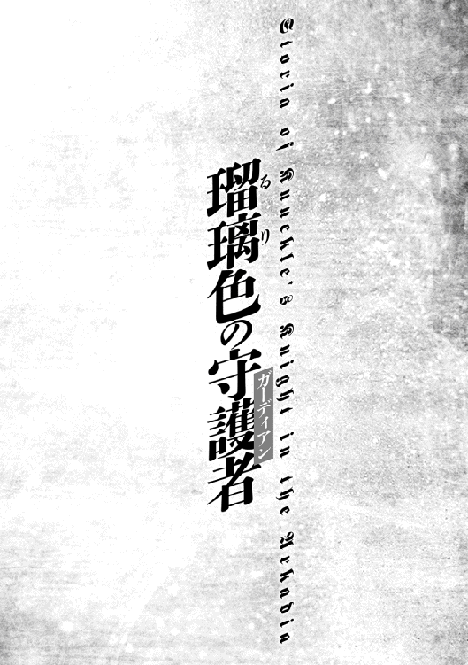

| 終天の異世界と拳撃の騎士2 赤と青の双流 | |
| 降朗汰 | |
| (2016) | |
伝説の邪竜を討伐した流護は褒賞を得るため、ベルグレッテと共に王都に向かう。そこで出会ったベルグレッテの妹クレアリアは超シスコン＆男嫌いで大苦戦。その矢先、王女の暗殺未遂事件が発生し、さらには謎の組織アウズィの罠で姉妹に窮地が訪れる！ 今までにない大ピンチに果たして流護は二人を護れるのか？ アウズィの目的とは一体？ 熱き想いと豪腕が炸裂するバトル・ファンタジー！ そして、少年は姫を護る騎士になる──。
イラスト ：218 ni-ya
イラスト協力：manyon24
デザイン ：萩原栄一（big body）
プロローグ
「──彼は、寡黙になってしまった」
愉悦を含んだ声だった。
ゴミのように打ち棄てられたそれが、絶え間ない黒を垂れ流している。実際は黒でなく赤だったが、腐臭漂う薄暗い路地裏において、それはやはり闇を象徴する色にしか見えなかった。
それを見下ろす声の主──仮面の者は、堪え切れないのか喉の奥でくくと哂う。
顔全体を隈なく覆う、異様な仮面。
果たして怪物を模したのか、邪神を象ったのか。
全体が緑色の鱗のようなもので覆われており、両目の位置には黒く窪んだ大きな真円。鼻はなく、そこから下半分を占める大きな口は、ざっくりとした笑みを象っている。トカゲや蛇にも見える、恐ろしげな貌だった。
その首から下は、極限まで削ったのかと思わせるほどの痩身。纏うは細い体躯の線を浮き彫りにする、黒一色の薄い装束。怪しげな仮面と相俟って、その容貌は人外の存在を彷彿とさせる薄気味悪さを醸し出していた。
そこへ、
「ケロヴィー様」
音もなく。仮面の者──ケロヴィーの脇に、影が跪いた。
現れたその者もまた痩躯、黒一色の衣。剃り上げているのか、毛髪が全く見当たらない禿頭と、痩せこけた頬。ぎらつく双眸。餓えた猛禽を思わせる男だった。
「シヴィームか。何事かな？」
「新たな仕事の依頼でございます。それが──」
シヴィームと呼ばれた影は跪いたまま、ケロヴィーへその内容を告げる。
「な......に？」
あまりに衝撃的だったのか。時間が停止したように、仮面の怪人はしばしその身を硬直させた。
やがて肩が、小刻みに揺れ始める。
「それはそれは......面白い。この私が直々に、話を聞きに行こうじゃないか」
「しかし、拙いのでは？ 貴方は、この街の──」
「シッ......誰が聞いているか分からんぞ？ 私のことを軽々しく口にしてはいけない」
この場に自分たち二人しかいないことを理解しながら、ケロヴィーは実に楽しげな様子で人差し指を立てた。
「かつてない......大きな仕事だな。くく。このようなゴミの始末ばかりで、少々うんざりしていたところだよ」
目の前で黒を垂れ流すそれを蹴りつける。
仮面で顔が見えずとも分かる。哂っていた。
「し、しかし......本当に、良いのですか？ ケロヴィー様、貴方は──」
「何を言おうとしている？ シヴィームよ。......何度、言わせる気かな......？」
「ッ！ い、いえ、出過ぎた真似を......失礼致しました」
「シヴィームよ。私はな、常々......想っていたんだ」
ケロヴィーは空を仰ぐ。
そびえ立つ建物によって切り取られて見える路地裏の狭い空は、不気味なうろこ雲を並べていた。血のような朱に染まる空。ファーヴナールの年、と称される厄年。
「六十年に一度などと、勿体をつけるだけのことはある......」
こんな奇縁が巡るとは、実に素晴らしい年だ、と。
「ずっと、想ってたんだよ。あの子たちの顔を、恐怖で歪めてみたい......って」
口調が変わっていた。
無垢な純真さすら感じさせる声色で、仮面の奇人はそう呟いた。
第一章 王都レインディール
「......九百九十八......っ、九百九十九......ッ」
学生棟脇は中庭の一角に、力みに満ちた少年の声が木霊する。
「千......！」
四桁を数えると同時、放られたそれがドンッと重々しく芝生にめり込んだ。少年の両手から開放された、黒い石で造られたダンベルがふたつ。
「はっ、はぁ......はあっ......」
滝のような汗を流しながら、有海流護は肩で息を整えた。
短めの黒髪は濡れそぼり、女性的ともいわれる地味めの顔にも、鍛え込まれて血管の浮き出た両腕にも、多量の雫が伝っている。半袖の質素な上衣は、滲み出た汗で胸元が色濃く染まっていた。
「お疲れさま、リューゴ。それにしても、ほんともう......言葉がないわね」
流護のトレーニングを傍らで見守っていたベルグレッテは、ほとんど呆れた様子でそんな感想を漏らしていた。困惑したようなその顔は驚くほど端正で、どんな表情をしても絵になっている。
「よくこんなものを持って......千回って、ほっ、こんな......くっ、むむ......！」
「おいおい、ケガすんなよー」
寄ってきてダンベルのひとつを両手で持ち上げようとするベルグレッテだが、その細腕では持ち上がるどころかビクともしない。彼女自身、鍛錬を積んだ騎士見習いではあるものの、やはりこれは流護の筋力に合わせて専用に拵えた道具なのだ。
「はー、さすが黒牢石製ね......」
「......さっさと、筋力とか体力とか戻したいしな」
ミディール学院へ押し寄せてきたドラウトローやファーヴナールとの闘いから、およそ二十日が過ぎた。
流護が約二週間の入院生活を経て無事退院したのが、二日前。
ロック博士こと岩波輝の予想通り、流護の筋力は大幅に低下してしまっていた。......のだが──
前代未聞の怨魔襲撃によって、ミディール学院は十日ほど休校となった。
そんなある日のこと。仕事がなくて暇だったのか、土産もなく手ぶらのロック博士がやってきた。
薄汚れたような白髪とよれよれの白衣、不健康そうな顔色も相変わらず。いかにもダメな大人の代表、みたいな外見ではあるが、右も左も分からない異世界で入院生活を強いられることになった少年にしてみれば、見知った姿にホッとしたものである。
そんな博士は、ベッドに横たわる流護を見て意外そうに言ったのだ。
「あれ？ 思ったより、筋肉落ちてないみたいだねえ」
「え？」
「......あ。そっか、ボクとしたことが見落としてたな......」
白髪の頭をボリボリと掻きながら、研究者は失念していたとばかりに言い連ねる。
「ボクたち地球の人間と、この世界の人たちとじゃ、生まれ持った筋肉の質や骨格そのものが違うんだよね。それぞれの世界の重力に見合った肉体で生まれるんだから。流護クンの身体は衰えた下限の状態であっても、それなりの筋量が残るワケだ」
同じ地球人でもボクなんかは運動しないからこんなに細くなっちゃったけど、と付け加える。
「それにもしかすると、魂心力も何らかの作用をしてるのかもね。......んー、キミの筋力、何とかできるかもしれないな」
「......え？」
話が意外な方向へ転がり出した。
「こないだ、地球にいた頃と同じトレーニングをしても、筋力は維持できないって言ったよね。だったらさ、それ以上のトレーニングをすればいいんだよ」
「あ」
全く考えていなかった。ロック博士に言われるまま、『力を使い果たした勇者様』にでもなってしまったつもりでいた。
「......と言いたいところだけどね。トレーニングに使う器具を思いっきりハードなものにしたとしても、トレーニングの量を増やしたとしても、二十四時間、常に受け続ける重力の影響が弱いことに変わりはないんだよねえ」
「......っ」
流護もすでに理解していた。
このグリムクロウズという世界。この世界は、ひどく死が近い。誰かが、思いもよらない形で唐突に死んでしまう可能性の高い世界。
『ただ肉食獣が森へ餌を探しに来た』。それだけのことで、あれほどの惨事が起きてしまった。
未だに、忘れられない。
仰向けに横たわっていたミネットの顔。血を流してぐったりとしたミアの顔。
この先、あれ以上のことが起きない保証などどこにもない。
考えずにはいられない。
もしベルグレッテが、あんなことになってしまったら──
「......博士。それでも何とか......何とかできませんか？」
すがるような願いだった。自分には、護れるはずの力があるのだ。その力を、失わずに済むのなら。
「んー。この世界の人たちは、神詠術があるおかげで、身体を鍛えるって発想があんまりないからねえ。まともな鍛錬器具ってないんだよなあ。......よし、せっかくだからちょっと作ってみようか。ちょうど休みで暇だし」
「マジで......いいんすか？」
「キミが強くて困ることはないからね。研究者のボク個人としても、キミの筋力と重力と魂心力の関係に興味がある。よし、黒牢石を取り寄せてちょっと作ってみよう。ちなみに黒牢石ってのは、この世界にある、少量でもすごく重い石で......」
「あ、ありがとうございます！」
──そんな訳で。ダンベルで鍛え始めただけではなく、今は両手両足に黒牢石製のパワーリストを装着し、さらに服や学ランの裏側にも石を仕込んで生活している。まるで昔のバトル漫画のようだった。だが筋力低下を防ぐには、これでも足りないぐらいといえるだろう。
そんなことを考えていると、
「とおおーっ！」
よく分からない雄叫びを発しながら、どこからともなくミアが走り寄ってきた。
小さな身体、その全身で元気を表現したような少女である。年齢の割にあどけなく幼い顔立ちも、毛先がハネ気味の短い赤茶色のショートヘアも、全てが彼女の振り切れたバイタリティを主張しているようだ。
「ベルちゃん、リューゴくん！ さあさあさあ、夕ごはんの時間で......あ、おおーリューゴくん、シュギョーしてたん──」
そこでなぜか元気娘は、流護を見たまま固まった。
「............」
ミアはじっと流護を......いや、正確には流護の身体を凝視している。
そういえば。トレーニングを始めたのは昨日からだし、薄着になった流護の姿をミアが見るのはこれが初めてかもしれない。
「な、なんだよミア。意外とゴツゴツしてセクシーな俺の身体に見とれ──」
「うわあ！ リューゴくんの腹筋、なんかカブトムシみたい！ やだ！」
「..................」
カブ......ト、ムシ......？
六つに割れてちょっと自信のあった腹筋が、カブトムシ......？
思わず膝から崩れ落ちそうになり、すんでのところで踏み止まる。
「わ、あ！ ご、ごめん！」
愕然とした顔の流護に気付き、慌てて謝るミア。
「ちっ、違うの！ ほら、そ、そんなすごい筋肉見たことなかったから！ ちょっと気持ち悪いぐらいだなって......じゃなかったあぁああ！」
謝ったと思ったら追い打ちだった。
「は、はは......ははは......」
鍛えられた筋肉が生理的に苦手、という人はいる。特に女性には多い気がする。
とはいえ、そこそこ仲よくなった（つもりでいる）ミア──しかも本人には絶対言えないが正直可愛い──に「カブトムシ」とか「やだ」とか「気持ち悪い」とか言われてしまうと、思春期の少年としてはやはりショックを隠し切れない。罵倒されて喜ぶような上級スキルは持ち合わせていなかった。......まだ。
「......あ、えーと、メシ、でしたっけ。じゃ俺、シャワー浴びてから行くからさ......ははは」
「わーリューゴくん！ ごめんごめんごめんなさいっ」
「ミア......無理すんなって......ははは......ま、たしかに......気持ち悪いかもなー......。この世界にも、カブトムシいるんすね」
「ううぅっ、違うんだってば！ か、かくなるうえはあっ！ ほらこれでどうだっ！ むっ！」
ミアは思いっきり目をつぶって、唇を突き出した。
言っては何だが、せっかくの可愛い顔が結構アレなことになっている。
「............なにしてんだ、それは」
「リューゴくんのこと気持ち悪いなんて思ってないもん。だ、だからキスしていいよ」
「よくねえよ！」
「よくないでしょ！」
苦笑しながら静観していたはずのベルグレッテも一緒になって突っ込んでいた。
「じゃ、じゃあ、代わりにベルちゃん......しません？」
「しません」
やはりミアであった。
「まあ、とにかく......シャワー浴びて行くから、先に行っててくれよ二人とも」
「リ、リューゴくーん......」
ミアが捨てられた子ネコみたいな瞳で見つめてくる。
「くっ、だから別に気にしてねえって......」
「......うう」
「だー、んじゃ夕飯で一品おごってくれ。それでおしまいな」
「へ、へへえ！ 了解です旦那！」
苦笑しながら少女二人と別れ、シャワーを浴びるべく自室へ向かう流護だった。
◇
食堂へ入って二人の姿を見つけると、ミアの隣に見知らぬ生徒が座っていた。
......いや、正確には全く知らない顔ではない。
この学院にやってきてすぐ、ベルグレッテのクラスへ行ったときに見た顔だ......と思い当たった。
まず、驚くほど線が細い。肩まで伸ばした栗色の髪は柔らかそうで、顔立ちも控えめながら相当に整っている。のだが、気弱な性格なのか、少し怯えたような表情をしていた。
いつも無表情なメガネ少女、レノーレに近い雰囲気かもしれない。彼女が静かに咲く花ならば、その生徒は儚くひっそり花開いているといった印象か。
随分前に教室で一度見かけただけとはいえ、可愛い子は覚えているものなのだ──と考えかけて、流護はすんでのところで否定する。
なぜなら、その人物は男子の制服を着ているからだ。
「おー、リューゴくんこっちこっちー！」
ぶんぶん手を振るミアのところへ行くと、
「へっへっへ。旦那、ご所望の一品料理をご用意させていただきやしたぜ......」
何やら汚い笑みを浮かべて、小皿に盛られた料理を献上してくる。
「フ......ご苦労であっ──」
──って何だコレは。
目を疑った。
ミアの用意してくれたであろう一品料理は、よく分からない魚らしき物体に不気味なほど青いソースのかかった、あまりにも食欲をそそらない『何か』だった。
（ていうかおい、食べ物なのかこれ）
「どうぞ、お納めくだせえ......へっへっへ」
「えっ......ミアちゃん、なにか悪いことしてるの......？」
眉根を寄せて固まった流護をよそに、ミアの隣に座った気弱そうな少女──ではなく少年が、見た目通りの弱々しい声を出す。
「うん......実は、リューゴくんに脅迫されてて......」
「ミアさんよお......」
またデタラメを......あとこの食べ物（？）まじで何......とふたつの意味合いを込めながら顔を上げると、例の少年と目が合う。が、彼は怯えたように下を向いてしまう。
席に座れば、ミアが紅茶を淹れながらいたずらっぽい笑みを浮かべてきた。
「そだそだ、リューゴくん。こやつは、クラスメイトのアルヴェリスタ。同い年だよ。一緒でもいい？ あっ、リューゴくんがどーしてもこのかわいいミアちゃんとだけ一緒がいいってゆーなら、外れてもらうことも検討しないでもないぞよ？」
「アルヴェリスタっていうのか。有海流護だ、よろしくな。ミアは俺のことがカブトムシみたいでイヤだそうだから、一緒にいてくれると助かるよ」
「え、カブ......？」
意味不明な発言に驚いたのだろう、アルヴェリスタは一瞬だけ流護を見るが、またすぐ怯えたように視線を逸らしてしまった。
「ぅー、リューゴくんいじわるだよう......」
「え、えっと、アルヴェリスタ・クランティウスです。よ、よろしくお願いします......」
アルヴェリスタは、おどおどしながらも何とか挨拶をしてきた。頑なに目は逸らしたまま。
（......しかし何かすげえカッコイイ名前だな）
「ふひひ。憧れのリューゴくんを目の前にした感想はどう？ アルヴェ」
「わっ、や、やめてよミアちゃん！」
「は？」
あ、憧れ？
聞き間違いか、と耳を疑う。
「恥ずかしがることないでしょー。エドヴィンのバカだって、バカみたいにリューゴくんの真似してるんだし。なんか最近、身体なんて鍛え始めたしねーアイツ」
「は、はあ。そうなのか。エドヴィンが？」
それは初耳だった。
あんな神詠術などという能力があれば、身体を鍛えることなんてないだろうに、と思う。
「うん。今回の件で、リューゴくん有名人になったからねー。特に、男子からの人気が急上昇中。ほら、男子って拳だとか剣だとかそういうの好きだし」
「はあ......そうなんか」
男子からの人気が急上昇、などと言われてもあまり嬉しくないところである。
「勇者さまの生まれ変わりだったり、憧れだったり、カブトムシだったり。リューゴも忙しいわね、ふふふ」
「ベ、ベルちゃんまでいじわるいうー」
「でっ、でもほんと、ファーヴナールを素手で倒しちゃうなんてすごいです......！ 僕は襲撃の日、実家に帰ってたので見れなかったんですけど......そ、尊敬します！ 僕も、リューゴさんみたいな男になりたいです......！」
「え、あ、お、おう」
ここで初めて、アルヴェリスタに正面から見つめられた。
「リューゴさんみたいな男になりたい」ということは、やはりこの人物は男なのだろう。実は男子の制服を着ているボクっ娘とかではないようだ。現実は非情である。
言葉に偽りなしか、アルヴェリスタはひたすらに憧憬の眼差しを向けてくる。きらきら輝く美しい瞳。長い睫毛。小さな鼻。薄くも形のいい唇。かすかに上気した桃色の頬。
「............」
その......男なんだよな......？
つい、流護の喉がゴクリと音を立ててしまった。
「そうだ、リューゴ。ファーヴナールっていえば、召集の件なんだけど......」
「あ、ああ」
ベルグレッテが期せずして、禁断の世界に片足を突っ込みかけていた流護を引き戻す。
「明後日で大丈夫？ ほとんどこっちの都合で申し訳ないんだけど......」
「おう。こっちは暇人だからな。いつでもいいぞ」
「あ、そっか。リューゴくん、お城に行くんだよね」
入院していたときにも少し話題に出たが、やはり流護はファーヴナールを倒したことで、城へ出向かなければならなくなっていた。
「ふっふっふ。そらファーヴナールを倒した勇者さまですからね。栄誉表彰ぐらいじゃ済まないでしょうよ！ 褒賞金出たら、なにかおごってねリューゴくん！」
「......それだけなら、いいんだけどね」
自分のことのように喜んでいるミアだが、一方でベルグレッテは決して楽観をしない。
「神詠術......か」
流護は何気なくぽつりと呟く。
入院している間に、ベルグレッテやレノーレから少し聞いていた。
『神詠術』という、地球人から見れば特異にすぎる能力。
それは神から人に与えられた恩恵。全ての人が当然のように行使する、神を詠う術。神詠術を使うことは、そのまま神への信仰を表している。
裏を返せば、神詠術を使わないという行為は、神を軽視した所業と取られかねない。まして使えないとなれば、それは神から祝福を受けていない──人間ではない──と見なされる可能性すらあるということなのだ。信仰に篤いこの世界では。
事実、過激な思想を持つ宗教団体などには、魂心力が弱くまともな術を使えない者に対して暴行を働く、『異端狩り』と呼ばれる行為に及ぶ者もいるという。
つまり事情はどうあれ、流護が神詠術を使わない......使えないことに対し、快く思わない者も存在するということだった。
実際、ファーヴナールを倒した後にやってきた兵士の中には、流護を英雄視するどころか、正体不明の異端として拘束するべきだと提案する者もいたらしい。
記憶喪失の建前があるとはいえ、神詠術を扱えないという事実は、受け取る人間によって心証の異なる、非常にデリケートな問題であるといえた。
「そいやさ、アルヴェリスタは何の属性なんだ？」
「あ、えっと......僕は、炎です。全然、たいしたことはできないですけど......」
「炎か......」
エドヴィンと同じ。......あと、ミネットも。
この世界の住人であれば、当然のように持っている力。
「そういえばベルちゃん。王様の謁見には誰が立ち会うの？」
「んーと......クレア、私、ラティアス隊長ね。今回はリリアーヌ......姫も一緒」
「う。ラティアス隊長かぁ......」
苦々しくミアが呻いた。「誰？」という流護の視線を感じ取ったのか、彼女は紅茶を飲みながら説明する。
「『銀黎部隊』の隊長さんだよ。かっこいいしすっごく強いんだけど、あたしはちょっと苦手だなあ......。雷の神ジューピテルこそが至高！ みたいな人で。同じ雷使いのあたしとしては、本当は尊敬しなきゃいけないんだろうけど」
「いや、嫌いなヤツを無理に尊敬するこたねえだろ」
「わ、わ！ 嫌いなんて言ってないよ！ ちょ、ちょっと苦手、ってだけ」
「ふふ。リューゴは自由よね」
そこでミアは、ごくり......と喉さえ鳴らし、何やら深刻な表情になった。
「あとさ......ついに......クレアちゃんとリューゴくんが出会っちゃうんだね......」
「ああ、ベル子の妹か。やっぱベル子に似て......え？ な、何だよ、みんなどうした」
なぜかミア、アルヴェリスタ、そしてベルグレッテまでもが、微妙に気まずそうな顔をしてうつむいていた。
「......さよなら、リューゴくん。よよよ」
わざとらしく両手で目を覆いながら、ミアが何とも不吉なことを言い出す。
「ちょ、待て。何だってんだ」
「クレアちゃんはね......もう究極って言っていいぐらいの、男嫌いなの」
その言葉を受けてか、はあー......と、ベルグレッテから溜息が漏れる。
「もうすっごいんだから。男の人を憎むことを使命としてるかのよーな......」
「公務で男の人と連絡取ったりする場合は、ちゃんとやってくれるんだけどね......」
「そんで、もう究極って言っていいぐらいに、ベルちゃんを敬愛してる。あれはもう溺愛かな？ あたしがベルちゃんにあんまりくっついてると、本気で怒り出したりするんだから」
究極の男嫌いで究極のシスコンなのか......。
と、ベルグレッテの縮小版を想像していたその人物像に、修正を加える。
「で、そこへきて今回、ベルちゃんお気に入りのリューゴくん登場になるわけですよ？ これはもう、血の雨が降る以外に選択肢がねえっ......！」
「んなっ、お気に入りって......」
ベルグレッテが顔を赤くして抗議した。流護と目が合うと、慌てて視線を逸らしてしまう。なんだこいつ。かわいいぞ。まいったな。デヘヘヘ、と内心で照れる。
ミアが「やれっ......潰し合えっ......最後に残るのは、このあたしっ......」とか言っているのは気にしないことにする。
「と、とにかく。でもミアの言うとおり、ラティアス隊長とクレアは、リューゴにあまりいい感情を抱かないかもしれない。不快な思いをさせてしまったら、ごめんなさい。先に謝っておくわね」
「おう、気にすんな」
「あと......絶対に、あなたを異端者扱いになんてさせない。私の、誇りにかけても」
「頼りにしてるぜ、ほんと」
流護はベルグレッテのこういうところが好きだった。不都合があっても、それを隠したりしない。
「そういえば......ミアちゃんとクレアリアさん、前にすっごいケンカしたことあったよね」
そこで不意に、アルヴェリスタがそんなことを言い出した。
「あははは。あったね〜」
あの頃は若かった、とばかりにミアが苦笑する。
「あれはもう、ケンカじゃなくてほとんど決闘だったでしょ......」
やれやれ、といった様子でベルグレッテが呟く。
何だか物騒な話だった。
「な、何でそんなことになったんだ？」
「やー、さっきもちょろっと話したけど。あたしとベルちゃんが仲むつまじい夫婦のよーにしてたら、クレアちゃんがすっごい怒ったことがあって。しかーしベルちゃんへの愛とあっては、このあたしも引けませんからね！ そのまま雷と水の乱れ飛ぶ戦闘開幕ですよ！」
「うわあ......」
「でもそれがきっかけで、クレアちゃんともすっごい仲よくなったんだけどねー」
「......ベル子の妹、いきなり俺に神詠術ぶっ放してきたりしないよな......？」
流護の顔がよほど情けなかったのか、ベルグレッテが少し吹き出した。
「......ふふ。リューゴって、意外と怖がりなところがあるわよね。最初にロック博士の研究棟に行ったときも、『俺、解剖されたりしないよな？』なんて言い出して......くっ、ふふふ」
あのときのことを思い出したのか、少女騎士が肩を震わせる。
「あ。そういえばー、こないだ昼休みにあたしがちょっと声変えてリューゴくんに演技したら、すっごいびびってたよね。あははは」
「う、うるせえ。びびってねえ」
「ふひひ。じゃあ、ミアちゃんの知っててよかった怖い話のお時間です。──『アウズィ』って知ってる？」
やや迫真の冷たい声に切り替えたミアが、思わせぶりに語り始めた。
「な......なに、それ......」
アルヴェリスタはすでに泣きそうだ。ミアの思惑通りだろう。
「『アウズィ』っていうのはね、闇に潜む人殺しの集団なの。誰も逃げられない。狙われてしまったら終わり。そのリーダーは背の高い黒ずくめで、不気味な仮面を被ってるんだとか。しかも、数百年も生きてる怪人なんだって。......ほら、『アウズィ』は......あなたの後ろにいいいぃ！」
「うわああぁぁ！」
アルヴェリスタは甲高い悲鳴とともに飛び上がった──が、流護とベルグレッテは平然としていた。
「あ、あれ？ 怖くないの？ リューゴくんとベルちゃんは」
「それ、ようは暗殺者じゃない？」
「そんな感じだよな」
「で、でも何百年も生きてるんだよ！ きっと不死身だよ！」
「ならば、不死身なのを後悔するぐらい殴り倒してやろうではないか」
「うっ、うわぁ！ リ、リューゴさんかっこいいです！」
「お、おう」
キラキラした目を向けてくるアルヴェリスタから、流護は『道』を踏み外さないよう必死で目を逸らす。
「暗殺者っていえばさー。『ゲヘナ』みたいな有名どころはともかくとして......普通って、どうやって生活してるのかな？」
ずずず、と食後のデザートらしきゲル状の何かを食べづらそうにすすりながら、ミアが不思議そうにそんな疑問を提起する。
「どういう意味だ？」
意図を掴みかねた流護が返す。
「いや、人をその......殺しちゃうなんて依頼だけで、そんなにお金になるものなのかなーって」
少女の疑問には、ベルグレッテが気乗りしなさそうな様子で答える。
「暗殺組織の一員を雇う料金って、とんでもなく高額だしね。一般の人じゃまず無理。......いや、簡単に雇われても困るし、そもそもあってはいけないはずの仕事なんだけど......それでも成り立ってるってことは、需要があって、利益もあるっていうことなんでしょうね。なんだかんだ、国家ですらその道の専門家を擁しているわけだから」
「うおう。さすがは王国騎士のベルちゃんだね。詳しそう」
「も......もう、やめようよ、そういう話題」
アルヴェリスタは瀕死である。
「ちっ。じゃあ次のお話です。怪人『リューゴクン』って知ってる？」
「おい」
久々に談笑を交えた長い夕食となった。
あと謎の青い一品料理はやたら辛かった。
翌日。
午後の仕事と鍛錬を終えた流護は、ロック博士に呼び出され研究棟へとやってきていた。珍しく研究者っぽい顔で机上の紙束とにらめっこしていた博士が、顔を上げて来客を迎える。
「やあ。トレーニングの調子はどうだい？」
「はあ......正直、筋力も体力もすっげー落ちてて、どうしたもんかっていう」
「はは。まあ、地道に戻していくしかないだろうね」
「そんで博士......用事って？」
「ああ。明日、城へ行くんだろう？」
そこで不意に、博士の口調が真剣なトーンへと切り替わる。
「流護クン。キミは、神って信じるかい？」
「は？」
真面目な話かと思いきや、随分とうさんくさい話題が飛び出した。
流護は霊や超常現象の類を全く信じていないほうでもない。ロマンがあると思う。事実、こんな異世界にトリップしてしまっているのだ。しかし、これは断言できる。
「いませんよ、神なんて」
現代っ子らしく、今までは『どうでもいい』と思っていた。
しかし今は。この世界へ来てからは、そんなものは『認めない』とまで流護は考えている。
神なんてモノがいるとしたら、巨大な月──夜の女神だというイシュ・マーニに向かって祈りを捧げていたミネットが、あまりにも報われない。
そんな一人の少女すら救わない神など、認めない。
「うん、ボクもそう思うよ。神なんてのは、すがるモノの欲しい人間が生み出した、ただの偶像に過ぎない」
胸ポケットから取り出したタバコにマッチで火を灯し、博士は続ける。
「しかしだ......郷に入っては郷に従え、って言葉もあってね。この世界では、神の実在が信じられている。こういう問題は実に繊細で難しくてね。このグリムクロウズで神を信じない、などと公言すれば、それだけで処刑されることにもなりかねない。ちなみにこのレインディール王国では、禁固刑か罰金だね。他の国と比べても、刑罰としてはかなり軽いほうだよ」
「うえ......ま、まじっすか」
そういえばミネットは、流護が月を指差しただけで「そんなふうにイシュ・マーニを指差してはいけません！」とすごい剣幕で怒っていた。
「ついでに、キミの好きなベルちゃんも例外じゃないからね。むしろ彼女は敬虔なウィーテリヴィアの信徒だ。嫌われたくなかったら、迂闊な発言はしないことだね」
「はっ!? べ、別に好きじゃねえし！」
「ははは。流護クンは大人びてるように見えて、やっぱりまだ少年だねえ」
「う、うるせーすよ。んで、何でそんな話を？」
「ああ。城に行く訳だからさ、発言には気をつけてね、っていう忠告。王様はえらく寛大な人なんだけど......ラティアス隊長やクレアちゃんは、異端を許さない性分だ。ボクもついさっき『神はいない』なんて口を滑らせちゃったけど、もし彼らが聞いてたら斬り捨てられかねないところさ。おお、怖いよねえ」
博士は大げさに肩を竦めてみせる。
「まさか城にお呼ばれした流護クンが、うっかり変な発言してそのまま二度と帰ってきませんでした、なんてことになってもアレだしね？ まして、ラティアス隊長たちとも顔を合わせるワケだし」
「うへえ......」
......しかし昨日の夕食でも出ていた話だが、そのラティアス隊長とベルグレッテの妹──クレアリアは、随分と厳格な人物のようだ。
隊長のほうはどうでもいいのだが、クレアリアはやはりベルグレッテの妹ということで、流護としてはあまり嫌われたくないところなのだが──極度の男嫌いとあっては、難しいかもしれない。
「あ。あとさ」
まるで何でもない会話の延長のように、博士は続く言葉を紡いだ。
「流護クンは......人を、殺せるかい？」
「──え？」
一瞬、意味が理解できずに呆然となる。
「この世界で生きていくことを決めたキミには、重要になってくる問題だよ。今後キミを脅かすのは、何も怨魔だけじゃないはずさ。野盗や山賊だっている世界なんだ。悪人は多い。殺意を持った人間と相対したとき、キミはどうする？」
「............」
現代日本からやってきた少年は当然というべきか、返答に詰まって黙り込んだ。無理もない。
だがしかし......実は心のどこかで考えていながら、あえて目を向けていなかった部分でもある。
ドラウトローを殺すことにすら躊躇があったのだ。それが人間相手となれば──
「キミのその反応は正しい。人として、至極真っ当なものだよ。......だけど」
冷酷とすら思える眼差しで、博士は告げる。
「世の中にはね、度し難い悪党ってのがいるんだ。ただ無力化しただけでは改心なんて絶対にしない、生まれながらの悪がね。もし、ベルちゃんたちがそんな人間に狙われたら？ そういう可能性は、考えておいたほうがいい」
「────」
仮にそんな局面が訪れたとして。......殺せるだろうか。人間を。
「......その場合の、罪はどうなるんですか？」
当然のことだが、日本では正当防衛だって簡単には成立しない。
「軽いよ。実に軽い」
博士は肩を竦めて、その『軽さ』を態度で表現するかのごとくおどけた口調で言ってのける。
「軽いってのは、罪が軽いって意味じゃない。人間の命が......価値が、軽いんだ。このグリムクロウズにおいてはね。襲いかかってきた相手を返り討ちにして殺めてしまっても、何の罪にも問われないよ。地域によっては、人の命は家畜より下に見られるケースもあるぐらいだ。労働力の観点から考えてね。ま、奴隷組織なんてのが公然と存在して、人身売買が当たり前に行われてたりする世界だしねえ」
それが、グリムクロウズ。
ただ華やかなだけの、剣と魔法の世界ではない。
さあ、法の壁はなくなった。
では殺せるだろうか？
人間を。
暗黒のような疑問が流護の脳内を席巻する。
「......なーんて、ちょっと脅かしすぎたかな？ いや、実際に法の整備が甘いもんだから、街のケンカでもすぐ殺し合いに発展しかねないんだ。決闘で命まで奪っちゃったりとか、危なっかしいんだよね。だから流護クンが人を殺せるかどうかは別として、妙なことに巻き込まれないように気をつけてね、っていう話さ」
「は、はあ......」
しかし。この世界で生きていくなら、きっと目を逸らし続けてはいけない問題なのだろう。
苦々しい気持ちのまま、空返事をするに留まる流護だった。
◇
博士の研究棟を出て、オレンジ色に染まる中庭を歩く。
夕飯まで時間もあるので誰かと時間を潰したい流護だったが、ベルグレッテは明日の城へ行くための準備で忙しいらしい。ミアは友達と街へ出かけてしまっていて不在だ。
また少しトレーニングでもしようか......と思案する。
「ちょっと。そこな平民」
しかし、鍛えればいいというものでもない。オーバーワークになってしまっては、逆に筋肉が衰えてしまう可能性もある。
「ちょっと。貴方ですよ、そこな平民」
それにしても。ベルグレッテとミアがいないだけで、こうも暇になってしまうのか。ちょっと友達がいなさすぎかもしれな──
「ちょっと貴方！ そこの貴方ですってば！」
「ん？」
大きく聞こえた声で、流護はようやく自分が呼ばれていることに気がついた。
顔を向ければ──学院の門前に佇む、貴族らしき少女の姿。
白を基調とした、フリフリの豪奢なドレス。髪は金色の派手な縦ロール。唇は少し厚ぼったく、頬にはそばかすがまぶされている。ベルグレッテと同じように吊り目がちな瞳をしているが、腫れたようなまぶたのためか、その重みでたるんでいるようにも見える。
失礼な話ではあるが、流護の感性ではあまり美人とは思えないうえ、どこか意地悪そうな印象を受ける人物だった。
高い身分の人間だと一目で分かるものの、ベルグレッテとは真逆の印象だ。
......うむ。ベルグレッテやミアと接してばかりいると忘れがちになるが、あの二人は相当に可愛い部類なんだな、と少年は再認識する。
「全く。この私が呼びかけているというのに、これだから平民は」
意地悪そう、という安易な分析はあながち間違いでもないらしい。
そして有海流護という人間は、正義の味方でもなければフェミニストでもない。気立てのいい少年でもない。どちらかといえば、気に食わないヤンキーを路地裏でボコっていたような人間である。
「あん？ どちら様で？」
「っ、な、なんですか！ こ、この私をシリル・ディ・カルドンヌと知っての狼藉ですか！」
狼藉って。ちょっと睨んだだけだぞ。
あっさり日和った相手に内心で溜息をつく。
「んで......何か用っすか？」
「くっ、こ、この学院にベルグレッテ・フィズ・ガーティルードがいるでしょう。彼女を呼んでちょうだい」
シリルと名乗ったこの少女は、ベルグレッテの知り合いらしい。貴族っぽいし、ありえないことではなさそうだが......。
「学生棟の部屋にいるぞ。勝手に入ったらいいんじゃね？」
「貴方、生徒ではないわよね。使用人でしょう？ なら、しっかり案内してちょうだい」
高慢な貴族などどうでもいいが、ベルグレッテの知人とあってはあまり蔑ろにするのも気が引ける。ここは大人しく連れて行くことにした。
シリルと名乗った貴族らしき少女を連れ、ベルグレッテの部屋の前へやってきた。ドアをノックすると、
「はーい」
「流護だけど。お客さんが来たぞ」
「え？ うん、ちょっと待って」
十秒もしないうちにベルグレッテが扉を開けた。ほぼ待たせない辺り、彼女の人を気遣う性格が窺える。
「おまたせ......って、あれ、シリル!? え、どうしてここに？」
ベルグレッテが目を見張る。顔見知りに違いはなさそうだが、想定していない客人だったようだ。
「久しいわね、ベルグレッテ」
驚く少女騎士に対し、シリルは薄く笑みを浮かべて答えた。
具体的に何者でどんな用があるのかは知らないが、そこは流護が気にすることではないだろう。
「んじゃ、俺はこれで」
「うん、ありがと。リューゴ」
役目を終えた少年は、小腹も空いてきたのでもう食堂へでも向かおうかと踵を返し──
「────」
否が応にも、視界に入る。
廊下の窓から差し込む、赤々とした陽射し。
窓越しに見える空はいつの間にか、うろこ雲が覆う不気味な姿へと変貌していた。
......やべえ。なんかさびしい。
『ザルバウムの焼肉定食』をもりもりと頬張りながら、流護は一人ふとそんな気持ちに駆られる。
時刻は午後七時。いつもベルグレッテやミアと夕食にする時間をとうに過ぎていたが、今日は二人ともいなかった。
ミアは街へ行ったきり帰ってこないし、ベルグレッテも先ほどのシリルと一緒にいるのか、食堂に姿を現さない。
元々、日本にいた頃も一人で食事をすることが多かったので問題ないはずなのだが、皆と一緒にいるのに慣れてしまったためか、妙な喪失感が胸に去来している。
「よう」
もりもりと定食を頬張る流護に声をかけてきたのは、見覚えのあるパンチパーマと悪人面の青年。通称『狂犬』、エドヴィンだった。
雑な作りの木のコップを手にした炎の男は、特に断りを入れてくるでもなく流護の対面へと座る。
「エドヴィンは、これからメシか？」
「いんや。俺ぁもっと早く食ってるからよ。今は、たまたま一休みしにきたトコだ」
言われてみれば、夕食でエドヴィンに遭遇したことは今まで一度もなかった。
そうして湯船にでも浸かるかのようにどっかと腰を落ち着けた彼だったが、
「......お前、それ......ザルバウム、か......？」
流護の食べているメニューを見て、らしからぬ愕然とした表情になる。
「え？ そうだけど」
「............」
『狂犬』は顔を背けてうつむいた。
「え、ちょっ」
「そっ、そーいやよ。明日、城行くんだろ？ 名誉っちゃ名誉だけどよ、堅ッ苦しいよな。ベルも交代の時期だしよ、やってらんねえよなァ」
ちょっと待てこれ、ザルバウムって一体......ベルも交代？ 妙なセリフが引っ掛かり、すぐに問い返す。
「交代の時期って何だ？」
「あ？ ロイヤルガードの話は聞いてんだろ？ ベルとクレアの姉妹が、交代で姫様の警護やってるっていう」
「ああ」
「だからもう、クレアと交代する時期なんだよ。ベルが姫様つきになって、クレアが学院に来るよーになる」
「あ......」
そこで流護はようやく思い出した。
そう。そんな話を以前、聞いた覚えがある。......ということは。
（しばらく、ベル子に会えなくなる......？）
先ほどまでの喪失感とは比較にもならない空虚さが心を締めつけた。
この世界へ来て、一番長くともにいるのは彼女だ。今まで顔を合わせない日はなかった。世話にもなりっぱなしだ。そのベルグレッテと、会えなくなる。
「クレアはなー、性格がキッツいからよぉ......アレがどうしてベルの妹なんだか、理解できねー」
「......どれぐらいの周期で交代してんだ？」
「あ？ ワリと不定期だぜ。一週間だったり二週間だったり。んでも今回は長めだったな」
「そう、なのか......」
身体能力の劣化、ベルグレッテの交代。
何だか、どうにもよろしくないことが続いている気がした。
ふと窓の外に目をやる。月明かりは全く覗いておらず、外は漆黒の闇に覆われている。
「つき......じゃなかった、イシュ・マーニが出てないんだな、今日は」
「出てないって、んなモノみてーに。神さんもたまには休まねーとだからな、定期的に顔出したり帰ったりしてんだよ。あァ、そっか。お前さんは記憶喪失だから、忘れちまってんだな？」
それは単に月の満ち欠けだ。
神の実在を信じる世界。傍若無人に見えるエドヴィンですら、やはり例外ではないのだ。
今さらながら、ここが地球と異なる世界であることを強く再認識した。
エドヴィンは飲み物をグイッと飲み干すと同時、その手から生み出した炎によって、木のコップを瞬く間に消し炭へと化した。
「おー」
神詠術ならではの芸当を目の当たりにし、流護は目を見張る。
「へへ。ベルが見てたら『ちゃんとゴミ箱に捨てなさい』って言われんだけどよ。クレアに見られた日にゃァ......」
なぜだか炎の『狂犬』は、虚ろな目で引きつった笑みを浮かべる。
そこで流護は、前から気になっていたことを尋ねてみることにした。
「そうそう。そいやあさ。その自分で生み出した炎って、熱かったりしないのか？」
「あー？ 熱かったら使えねーだろ。自分の魂心力を使って出してるモンだからな、問題はねーよ。ただ、自分の制御を離れた火に触るとダメだけどな。例えば、俺が自分で生み出した火でローソクに火を点けた場合、ローソクの火はもうダメだ。触っちまえばアチイ。俺にはそこまでの制御能力はねえ。ま、確かに火ってのは、他の属性より扱いづれーかもな」
なるほど、と流護は頷く。
「つまりあれか。火の使い手でも、火が効かなかったりする訳じゃないんだな」
「そらそうよ。火山にいるよーな怨魔じゃあるめーし」
「自分の身体はともかくとして、服とかは燃えたりしないのか？」
「ああ。詠術士ってのはみんな、自分で作った『護符』を服の内側に仕込んでんだ。俺ぁこれが正直メンドイし、心底だりーんだけどよ......かといってこれだけは、やらん訳にもいかねえ。これをちゃんとやらねーと、火ィ喚び出した瞬間に服が燃えちまう」
格好つけて火を召喚した途端に炎上するエドヴィンを想像して、流護はつい吹きそうになってしまった。もっとも、危険性を考えたなら笑い話ではない。護符の処置を忘れれば、命にかかわることになるのだ。
「だからよ、オシャレなんつって服いっぱい持ってる女子は大変みてーだぜ？ ま、そういうヤツはワリと裁縫も好きだったりで、護符の手間も苦にならねーみてーだけどな」
面倒くさがりな面のある流護は、詠術士じゃなくてよかった、としみじみ思ってしまう。
ベルグレッテも水を召喚して身に纏うように展開させたりするが、あれは服などに護符を施しているからこそできることなのだろう。
もし護符がなければ、ベルグレッテは水を喚び出した途端にびしょ濡れとなってしまうはずだ。
（......うん。それはそれで）
「さってと......んじゃ、俺ぁ部屋に戻るぜ」
「あ、おう。お疲れ」
去っていくエドヴィンの背中を見送る。
再び、何ともいえない静寂が訪れた。
思うように動かなくなった身体。ベルグレッテの交代。言葉こそ通じるが、根本的に違う考え方。神詠術という、この世界においては常識である能力。自分にはない能力。
（......あー、やっべ）
椅子の背もたれに身を預け、食堂のだだっ広い天井を見上げる。
このグリムクロウズに来て、約二十日と少し。
（ちょっと、ホームシックなのか......？）
翌日の昼休み。学院前に、大きな馬車が到着した。
「それじゃ行きましょうか、リューゴ」
「おう......」
いよいよ召集に応じるべく、ベルグレッテと一緒にレインディール王城へ向かう。このために今日と明日、流護の仕事は休みになっていた。
ベルグレッテは、初めて会ったときの青いドレス姿。流護も余計な疑念を抱かせないようにするべく、こちらの世界でベルグレッテにもらった平服を着ていた。
「二人ともいってらっしゃーい！」
「......気をつけて」
見送りに来てくれたミアとレノーレが手を振る。ちなみに二人ともやや眠そうだ。昨日は大人数で遊びに出て、かなり帰りが遅くなったらしい。
馬車に乗り込み、流護たちは王都へと向けて出発した。
「......がっ」
思った以上の激しい揺れで、危うく舌を噛みそうになる。
今回呼んだ馬車は貴族用の特別なもので、これでも乗り心地はいいほうらしい。しかし当然、街道は舗装などされていないため、揺れに揺れながら約四時間を過ごすことになる。
先日、退院して学院へ帰る道中では、やたらと気分が悪くなったものだ。
ミディール学院から王都レインディールまで約四時間。最寄りの街ですら、二時間以上はかかる。今さらだが、やはり現代日本と比較すると筆舌に尽くしがたい不便さがあった。
「リューゴ、どうかした？ ちょっと元気がないみたいだけど」
対面の席に座ったベルグレッテが、気遣うように声をかけてくる。
「......ああー、そうだなー。慰めてくれるかー？」
昨日からテンションが低めなせいで注意力が低下しているのか、アホなセリフが無意識にさらっと出てしまった。
「えっ......？ う、うん。わ、私にできることなら......」
「へぇっ!?」
もうだめだ。なんだこいつは。どうしてこう健気なんだ。昨日の貴族の変な女とは大違い──
自分から言い出しておきながらうろたえたところで、ふとその疑問が引っ掛かる。
「あ。そういやさ。昨日のシリル？ とかって人は何だったんだ？」
「ああ、うん。シリルはレインディール領にある騎士の家系の子なの。隣国の、ミディール学院とは別の学び舎を卒業しててね。昨日は、学生棟の空き部屋に泊まってもらったんだけど」
「ベル子に何か用事だったのか？」
「......ん、ちょっとね」
どうも歯切れが悪い。まあ、聞かれたくない話のひとつやふたつあるだろう。
確かにベルグレッテは都合の悪い話を隠したりする性分ではないが、だからといって何でもかんでも流護に話さなければならない訳ではないのだ。恋人でもないのだから、当然な話だろう。
（......って、何だよ俺は。何でこんな、モヤモヤしてんだ......）
「えっと、実はね......」
しかし流護の葛藤をよそに、ベルグレッテがあっさりと切り出そうとする。
「え？ い、いや。話したくないなら無理しなくていいぞ」
「んっ？ だってリューゴ、聞きたいって顔してるもん」
可愛らしい口調に、流護は悶絶死しそうになった。のだが。
「姫様が不届き者に狙われてるかもしれない......って情報を、シリルが持ってきてくれたの」
思いがけず、予想外に穏やかでない話だった。
「え、まじかよ......って、そんな話、俺にしていいのか？」
「リューゴが聞きたそうな顔してるんだもん」
（もう誰かこいつ逮捕してくれ。かわいい）
「ふふ。別に機密じゃないから大丈夫よ。......それに残念だけど、珍しいことじゃないの。いつの時代も、王族を狙う輩は後を絶たない。今夜、王都で姫さまが民との触れ合いのために露店を視察することになってるんだけど......刺客は、確実にそこを狙ってくるでしょうね」
何とも、急に物騒な話になってきた。
「大丈夫なのか？」
「ん。そのためのロイヤルガードだからね。私とクレアが、絶対に姫さまをお守りする」
「ああいや、そうじゃなくて。ベル子は大丈夫なのかって」
「あ、うん、ありがと。大丈夫よ。こういうの、初めてじゃないから。......なーんて大げさに言ってみたけど、ほんとよくあることなのよ。姫様にちょっかいを出したいならず者が、驚かせる目的で妨害してくるの」
はあーと溜息をつきながらも、ベルグレッテは笑顔を見せた。
「そか。お疲れさんだなそれは......」
「ありがと。......んー。今度は、私から質問」
「え？ な、何だよ」
「こないだ......ファーヴナールの襲撃前に、リューゴが言ったこと。『どうせもう元の世界には戻れないし』って。どういうことなの？」
「むっ......」
もう二十日も前の話である。すっかり忘れたものだろうと思っていた。
別に、やましいことがある訳ではない。ただこの説明をする場合、ロック博士こと岩波輝の話をしなければならない。勝手に博士の事情を喋ってしまう訳には──
「......まあ、話したくないならいいけど」
少し拗ねたような表情で目を逸らすベルグレッテ。
うん。よく考えたら博士とか俺の情報エドヴィンに売った前科あるし、別にいんじゃね？
少年の決断はもはや神速だった。
「いや実はロック博士な。あの人、俺と同じ世界から来た人間なんだよ」
「......え、ええっ!?」
当然というべきか、さすがに驚いたようだった。美しい薄氷色の瞳が見開かれる。
「博士がグリムクロウズに来たのが、十四年前。つまり十四年間、元の世界に戻れずにここで暮らしてるってことなんだ。そんな訳で現状、戻る方法はない......って話になったんだよ」
「そっ、そう......なんだ......」
何だろうか。
ベルグレッテが、泣き笑いのような......複雑な表情を浮かべていた。
「で、でも」
彼女は少し首を傾けて、考えるような仕草を見せる。
「じゃあ、博士も魂心力がないってこと？ 十四年も、ずっと隠し続けてるのかな。それに、そんな身で神詠術の研究者になれただなんて......」
「俺らの世界の科学ってのは、住んでる俺でも信じられねえほどレベルが高いんだ。それこそ何の知識もなければ、魔法に見えるような技術が山ほどある。博士は元々、向こうでも研究者やってたみたいだから、この世界でも研究職に就くのは難しくなかったろうな」
「そう、なんだ......あ。そんな博士の事情、勝手に私に話してよかったの......？」
「んん？ ベル子が聞きたいって顔してたからなー」
「むー。......ふふ。じゃあお互いさま、だね」
「はは、そうだな」
何となく二人で笑い合った。
「......でも、リューゴ。その......もう、元の世界に戻れない、だなんて......」
「ま、仕方ねえさ。......でもあれだな。元々、帰る方法を探すために学院で働いてたんだよなあ俺。まだ......あそこにいていいんかな？」
「そ、それはもちろん！」
「おわっ」
ベルグレッテが思いもよらない大声を出したので、流護はついのけ反ってしまった。
「あっ......その、いたら、いいんじゃない？ べつに。う、うん」
「そ、そうか。......あ。ってそういやベル子、お前もう交代になるんだって？ ロイヤルガードの仕事」
「あっ、うん......」
「ってことは、しばらく学院からいなくなるんだよな？」
「うん」
「......そうか。じゃあ、会えなくなるのか。寂しくなるよな──っ、あ」
「ぅ、......そう、だね」
思いがけず口にしてしまった流護。しかし、ベルグレッテも否定しなかった。
その頬は桜色に紅潮していて、目をそわそわと泳がせている。
（あ、あれ？ こ、これは、ベル子も、こう、悪くない感情を、俺に──）
「............」
「............」
しばし無言のまま、二人は馬車に揺られる。
ミアのありがたみがよく分かった。いつもなら、よく分からないことを言いながら突っ込んできて空気を変えてくれる場面だ。しかし今は馬車の中に二人きり。この空気の中、四時間も過ごせというのか──？
嬉しいような恥ずかしいような、居心地がいいような悪いような雰囲気のまま、何気なく窓の外を眺めると、
「......な......？」
流護は瞬時に目を疑った。
高速で流れていく外の景色。草原の中に、何か黒い異形が見えた気がしたのだ。
不吉な黒い怨魔を思い出し、すぐさま窓へ張りつく──が。
「？ なに、リューゴ。どうかした？」
「......いや......」
気のせいだったのだろうか。
過ぎゆく緑を見渡しても、あの墨を落としたような黒は見当たらない。
おかげでどこか薄れてしまった甘い雰囲気の余韻を噛み締めながら、流護は窓の外を眺め続けた。
◇
王都レインディール。
当然ながらレインディール王国の首都であり、人口は約五万人。
街の中心部には、領内のミディール学院を遥かに上回る大きさの荘厳な城が鎮座している。
街を取り囲む外壁の高さは十マイレを越えるだろう。壁はそのまま小規模の砦として機能しており、壁上には屈強な兵士たちが常在し、いくつもの大砲や弩が設置されている。
たとえドラウトローやルガル辺りが何体か襲ってきたところで、門前へとたどり着く前に炭と化すはずだ。
雑貨店や食料店の品揃えも実に豊富である。中でも菓子屋『モンティレーヌ』は、王族ご用達の店となっている。女性の方は是非とも立ち寄っていただきたい。
大衆酒場『ゲーテンドール』の料理や酒は一級品で、昔ながらのレインディール式の佇まいは、どこか心を落ち着かせてくれる。
しかし華やかな街であるがゆえ、ならず者の類にも注意したい。
だが、過度に神経をすり減らす必要はない。王国自慢の優秀な王宮兵士や騎士たちが、きっと助けになってくれるだろう。
特に筆者としては、ロイヤルガード見習いの美しき姉妹を推したい。
しかしいざ諍い事に巻き込まれた際、姉妹騎士どころかむさ苦しいおっさんに捕まり、延々と尋問を受ける羽目になってしまったので、諸兄は自身の持つ運と相談されたし。
では、貴方が楽しいレインディールのひと時を過ごさんことを願って。
「......『おお楽しきレインディール』著・ミッシェル・ガランティーン（吟遊詩人）......ねぇ」
流護はパタンと本を閉じ、馬車内の座席へ放り出した。
ちなみに文中に『十マイレ』といった記述があったが、マイレ＝メートルという認識で問題ないらしい。
（それにしても、後半部分の適当さはどうなんだこの本。ロイヤルガードの姉妹て......）
イケメン店員の紹介、みたいなノリで記載されていた。まあ、ご当地紹介雑誌みたいなものは、どの世界でもこんな感じなのかもしれない。
「着いたわね」
本で紹介されていた筆者お勧めのロイヤルガード（姉）の声に促されて窓の外を見れば、本で紹介されていた堅牢な城壁を通り抜けるところだった。
数日前まで流護はこの街の病院にいたので、そこまで久々な訳ではない。しかし元々、日本でも田舎に住んでいたため、この賑やかすぎる雰囲気にはあまりなじめる気がしなかった。
そんな訳で約四時間の移動を終え、ようやく馬車が城の前へと到着した。
「それじゃ、行きましょうか」
「うーわー......すっげえな、こりゃ」
ベルグレッテに促されるまま視線を向けると、眼前に広がるは、ただ見上げるばかりの階段。横幅だけで十メートル近くあり、それが三階相当の高さまで延々と続いている。
「城に来るたびにコレ上がんのか？ 足腰でも鍛えてんのか」
「ふふ。高い場所に城を構えることで、侵入者対策にしているんだって。あんまり効果があるとは思えないんだけどね」
「物騒な話だな......」
二人で階段を上り始めると、ほどなくして上から一人の少女が下りてくるのが見えた。
それはたとえるなら、群青色の宝石。
背丈はミアと大差ない。彼女よりは少しだけ高そうだが、それでもかなり小さい部類といえるだろう。ベルグレッテのものに似た、青を基調にした煌びやかなドレス。腰には、銀色の鞘に収めた長剣を提げている。
黒みがかった藍色の長い髪を左側で結わえた、サイドテールの髪型。少し幼いながらも整いすぎた顔立ちは、流護のすぐ隣にいる少女騎士の面影があった。その彼女よりも鋭い、射抜くような瞳をしているが、それもまた研ぎ澄まされた宝石の一部がごとく美しい。
初めて会う流護でも、自然と一目で理解することができた。
この少女が、ベルグレッテの妹──クレアリア。
「お待ちしておりました」
二人の目の前まで下りてきた少女が、風鈴を思わせる涼やかな声音で告げる。
いざ目の前までやってくると、その小ささが際立って見えた。......その背丈に比例してというべきか、胸の曲線も姉と違ってかなり控えめのようだ。
「お疲れ様です、姉様」
「うん。クレアこそお疲れさま」
そして、その少女騎士の妹は流護へと顔を向ける。
「アリウミ・リューゴ殿ですね。私は、ベルグレッテの妹のクレアリア・ロア・ガーティルードと申します。本日は遠路遥々お越しいただき、誠にありがとうございます。ご案内いたしますので、私の後へお付きになってくださいますよう、よろしくお願い申し上げます」
極上の完璧な笑顔。淀みない挨拶。
「あ......はあ、よろしく、おねがい、します」
まるで有能なバスガイドさんだ、と気圧されてしまった流護は、壊れた機械みたいに頷くことしかできなかった。
ともあれ、さすがにベルグレッテの妹だけあって、その笑顔は幼げながらも実に魅力的だ。
（すっげぇ男嫌いだって聞いてたけど、別に大丈夫そうな感じか......？）
「......では、ご案内いたします」
笑顔のまま踵を返し、階段を上り始めるクレアリア。
（......あ）
そこで流護は気付く。
彼女が前を向こうと身を翻した、一瞬。
その瞳が、やけに冷たい光を帯びていたことに。
城の内部は、もはや流護の想像の域を遥かに超えていた。
膨大な高さと広さを併せ持つ、石造りの空間。どこまでも延びる、赤い絨毯が敷き詰められた廊下。屋内を行く重厚な鎧を纏った兵士たち。ちらほらと、メイドさんらしき女性の姿まで見える。
学院でファンタジーに慣れたつもりでいたが、それでも映画のセットでなければ何なのかと思うような世界が、少年の眼前に展開されていた。
「姉様、皆はどうしてます？ 元気ですか？」
「元気よー。誰かさんなんて、元気すぎて困るくらい」
「あはは。やっぱり」
先ほど流護に向けたのが営業スマイルだと即座に分かるほど、クレアリアは自然な笑顔を見せていた。このように談笑している分には、彼女も年相応の少女なのだと思える。
姉妹の何気ない会話を聞きながら後に続き、やがて一際大きく荘厳な二枚扉の前へたどり着く。
「では、アリウミ殿。謁見の間にて陛下と姫がお待ちです。くれぐれも失礼のなきよう、お願い申し上げます」
ベルグレッテに対する態度から一転して、クレアリアが事務的な口調で告げる。
姉妹二人が左右に分かれて、それぞれの扉を開いた。
当然ながら謁見の間と呼ばれるような部屋を目にするのは初めてだったが、そんな流護でもすぐに察することができた。そこに居並ぶ三名が、この国において最上級の身分の人間であるのだと。ふたつ並ぶ豪奢な玉座に、それぞれ壮年男性と少女が一人ずつ。すぐ脇に、青年が一人。
さすがの流護も急に緊張してきてしまい、ちらりとベルグレッテの顔を窺う。
扉の横に佇む彼女は、小さく微笑んで頷いた。
ちょっと勇気をもらった気がした少年は、覚悟を決めてまっすぐ部屋に入る──と同時に、背後から扉を閉める重々しい音が響いてきた。姉妹二人が、流護を挟むように両脇へと立つ。
意を決したはずが、逃げ場を失ったような息苦しさに襲われてしまった。勇気ゲージが早くもゼロだ。
それを察したように、左の玉座に座った男が太い声で語りかけた。
「おう、楽にしてくれ。よく来てくれたな。俺はアルディア・グレンスティール・レインディール。この国の王だ。よろしくな」
「え、あ。はい」
王様ということで、白いひげでも生やした優しそうな老人を想像していた流護だったが、全くそんなことはなかった。
歳は五十ぐらいだろうか。跳ね上がった茶色く短い髪は、燃え上がる炎を思わせる。野性的な凄みを滲ませた、精悍で荒々しい顔立ち。さすがに流護ほどではないが、引き締まった筋肉を鎧う大きな体躯に、腰掛けている立派な玉座が小さく見えるほどだった。
次いで、右側の玉座に身を預ける白い少女が、見た目に違わず美しい声を響かせる。
「よくぞお越しくださいました。わたくし、王女のリリアーヌ・ヴェルティア・レインディールと申します。お目にかかれて光栄ですわ、『竜滅』の勇者どの」
「え？ りゅう、めつ？ あ、はあ」
ベルグレッテたちが蒼い宝石ならば、リリアーヌ姫は白い輝石だろう。
年齢は、流護やベルグレッテと同じだと事前に聞いている。
緩やかな微笑みを形作る桜色の唇。精緻な彫刻のようにすっと通った鼻梁。吸い込まれてしまいそうな美しさを誇る翠緑の瞳も、誰かの営業スマイルとは違って心からの歓迎の色をたたえていた。
金色に輝く髪は絹のように滑らかで──ともすれば折れてしまいそうなほど細い身体や、その身を包む純白のドレスと相俟って、神々しさすら感じさせる。
カリスマというのだろうか。彼女の一声で命を懸ける男など、ごまんといるだろうと思わせる、ただの魅力を超えた何かがあった。
まあ......でも俺には、ベル子がいるし......などと実に勝手なことを思いながら、流護は最後に姫の右側に立つ男へと目を向ける。
王や姫と違い名乗る気も挨拶する気もないのか、流護のほうを見もせずに腕組みをしている青年。
歳は二十代中盤ぐらいか。スラリとした細身の長身で、茶色いコートのような丈の長い上衣を羽織っている。金色のショートヘアと、知的さを感じさせる端正な顔立ちをしているが、その目つきは刃物のように鋭く、ただならぬ雰囲気を醸し出していた。『勉強のできる嫌味な大学生』。流護の脳裏に、ふとそんな言葉が浮かんだ。
名乗られずとも、この男が何者なのかは考えるまでもない。『銀黎部隊』の長、ラティアスだろう。
流護が全員を認識したタイミングを見計らったように、アルディア王が口を開いた。
「よーし。アリウミ・リューゴだったな。後者が名前なんだってな。リューゴでいいか？ 今回はお前さんのおかげで、我が学院と生徒たちが守られた。礼を言う」
「あ、いえ。はい」
「二十四体ものドラウトロー、そしてファーヴナールに襲われるという未曾有の事態。教員に一人、犠牲は出てしまったが......生徒は大怪我をした者こそいたものの、全員が存命だった。誇るべき功績だ」
「あ、はい」
さっきからアホみたいな返事しかできず情けないと思う流護だったが、状況が状況だけに仕方ないと自分に言い聞かせる。相手は国の長とその関係者なのだ。学校で頭髪の絶滅した校長を前にするのとは訳が違う。
「全く、よりによって学院長や『ペンタ』が不在のときに厄介なことになっちまったが......さすがは、ファーヴナールの年だわな。ロクでもねえや」
「けれど、『竜滅』の勇者さまのおかげで......本当に、よかった」
リリアーヌ姫が安堵した表情で微笑む。
「で、だ。今回、少ないが褒賞金を用意させてもらった。額は三百五十万エスクだ。遠慮せず、受け取ってほしい」
「......？」
「お、何だ。やはり少なかったか？」
アルディア王がにやりとした太い笑みを浮かべる。
「あ、いえ。その、金の単位がよく分からなくて......」
「おお！ 勇者殿は記憶喪失なんだったな、そういやぁ。そうさな、この王都で二年は遊んで暮らせる金額だ。本当はもう少し色をつけてやりたいんだが、あんまり贔屓すると五月蝿いこと言うヤツも少なくないんでな。そこで仏頂面してるラティアスとかな。ま、貰っておいてくれ」
「........................................................................」
二年......遊んで、暮らせ......る......？
その言葉をたっぷり数秒もかかってようやく理解し、
「イヤイヤイヤイヤイヤイヤイヤイヤイヤイヤイヤイ」
流護はぶっ壊れたみたいに高速で首を横へ振った。
「そっ、そそそそそんな二年って！ ま、ず、まずいですって！ イヤイヤイヤイヤ」
「ぶっはははは！ いいから気にすんなよ、な！」
「ふふっ。お父さまのおっしゃるとおりですわ。あなたがいらっしゃらなかったなら、学院のみなさんやベルグレッテが、果たしてどうなってしまっていたか......。遠慮なさらず、お納めになってくださいませね」
いきなり大金を手に入れたらどうする？ そんなたとえ話。好きなように使うとか、貯金するとか、闇の賭博組織に挑むとか、とかく夢の膨らみがちな話題ではあるが、予期せぬ大金が転がり込んできた一般人の反応なんてものは、大概決まっている。混乱だ。
テレビの生放送で宝くじが当たって「オーマイガー」と連呼していた外国人を思い出しながら、流護はすぐ左隣にいるベルグレッテへとすがるように顔を向ける。
「......ふふっ。すごい顔してるわよ、リューゴ」
「いやさ。だってさ。俺さ」
「お納めください、アリウミ殿」
そこで優しい声を響かせたのは、意外にもクレアリアだった。
反射的に、声のしたほうを振り返る。そこにあったのは、花のような彼女の笑顔。
「遠慮なさることなどありません。貴方は、その対価を得るに相応しい働きをしたんですもの」
花のような笑顔と、
「ところで。アリウミ殿は先日まで病院に入っておられましたが、その費用はどこから捻出されていたとお思いですか？ ふふ、我がガーティルード家なんですよ。正確には、姉の私財です」
氷のごとく冷たい瞳。
......花には、びっしりと棘が生えていた。
「ちょ、クレアっ」
小さく、ベルグレッテが窘めるように制止の声を飛ばす。
「そ、そうだったのか......。それは......うん、ちゃんと返さないとだな......」
思えば、その点をこれまで全く考えなかった。文無しの身で二週間も入院していたのだから、当然誰かが工面していたはずなのだ。おそらくベルグレッテはこのまま、何も言わないつもりだったのだろう。
「もうっ......リューゴ、気にしないで──」
そんな二人の間を断ち切るように。クレアリアが一層大きな声で、どこか芝居じみた口調で割り込む。
「そう、アリウミ殿は記憶がないのですよね？ せっかくの大金を得られた訳ですし、そのお金で記憶を取り戻すための旅に出てみるなんていうのはいかがでしょう？ 学院にいても、問題の解決になるとは思えませんし！」
「──クレア。いい加減にしなさい」
ここでベルグレッテが、聞いたこともないような低い声で叱責する。
「............っ」
姉に咎められ、妹はようやく口をつぐんだ。
アルディア王はくっくっと喉の奥で笑い、リリアーヌ姫はおろおろし、ラティアスは全く興味なさげな様子で首を回している。
流護はといえば、もう何だか胃が痛くなりそうだった。
あらかじめクレアリアは男嫌いだと聞いてはいたが、実際に敵意を向けられるとやはり居心地の悪さが半端ではない。敵意を持つ者には臆さず反発することの多い流護であっても、相手がベルグレッテの妹となるとやはり複雑だった。
──と。
そこで初めて、これまで一言も発しなかった人物──ラティアスが、気だるそうに口を開いた。
「そう......記憶喪失なんだってな、アリウ......ミ？ ......リューゴ？ 君だったか。過去に事例がないので私も詳しくないんだが、神詠術は全く使えないのか？ 個人的には、言葉を話すことや手足を動かすことと一緒で、特に記憶がなくても使えるんじゃないか......と思うんだがね」
流護に向かってボソボソと喋ってはいるが、目を見てすらいない。だるそうに首をぐるりと回す。
「神詠術とは、神が我ら人間に与え給うた恩恵だ。記憶がなくなった程度で、神は人を見捨てはしないだろう。となれば、使えると思うのだがね。神詠術は、人に許された権利であり、叡智であり──証でもあるのだからね」
頭のよさそうな顔しといて論理的でも何でもねえ、と流護は顔をしかめそうになった。
が、おそらくこの男は自分でそれを理解している。そのうえで、言っている。
『神詠術が使えないならば、人間として認めない』と。
英雄として称賛するどころではない。もしこの場に流護とラティアスしかいなければ、すぐにでも襲いかかってきそうな雰囲気。
流護はそれを分かったうえで、静かに返答する。
「......使えません。少なくとも、俺は」
「そうか。それで......随分と鍛え抜かれた身体付きをしてるようだが、そんなものは当然、一朝一夕で身に付くものではない。記憶をなくす以前から神詠術を蔑ろにしていた......という訳ではないのかな」
「記憶がないので分かりませんね......」
都合が悪くなった政治家のようなセリフで返す。
「それもそうだな。さて、褒賞金の件だが......後で部下に持ってこさせよう。ちなみに断っておくが、今回の金額は、学院や生徒を守った功績と、間接的ではあるがドラウトローの新習性発覚に寄与したことに対する評価......これらを加味した結果の額となっている。今回の件に味を占めて、Ｓクラスの怨魔を倒すことで金が稼げるなどとは思わんようにな。ま、自慢の腕っ節とやらで怨魔に挑んで、勝手に野垂れ死ぬのは君の自由だがね」
「......あーはい。そっすね。あざーっす」
流護にしてみれば、先ほどの姉妹のやり取りより、こちらのほうがまだ気楽だった。男相手なら何も遠慮などしない。煽り合いもケンカの華である。
ラティアスは軽薄な笑みを見せつつ、アルディア王へと目を向けた。
「では、陛下。私は小さな勇者殿へ支払う褒賞金の準備があります故、これにて失礼致します」
「くくく......おう」
何やら楽しそうなアルディア王の顔を見たラティアスは、一瞬だけ苦々しそうに眉をひそめ、足早に謁見の間を出ていった。
「くく......あいつぁな、リューゴよ。お前さんに嫉妬してんだよ」
内緒話をするように、アルディア王が小声で言う。
「......いや、あいつだけじゃねえやな。男なら誰もが羨むようなことを、実際にやってのけちまったんだからよ。ん？ 実際には伝説以上か？ ガイセリウスはファーヴナール殺るのに、グラム・リジル使ったんだしな。それに対して、お前さんは素手ときたもんだ。全くとんでもねえ話だわな。がはははは！」
「陛下......貴方がそのようなことを仰っては......」
うんざりした溜息を隠しもせず、クレアリアが批難がましく呟く。
「おっといけねえ、クレアちゃんに怒られちまったか。ははは！」
膝をパンと叩き、高らかに笑う。この王は随分と豪快な人柄のようだった。
一方で流護はといえば、過剰なまでのベタ褒めに少し居心地が悪い。
「その......王様。俺があの竜を倒したって言われてますけど、俺だけの力じゃないんです。ベル子......ベルグレッテや、他のみんなの力がなければ絶対に無理だった。伝説だと、ファーヴナールは剣で倒されたんすよね？ だったら、ベルグレッテのがよっぽど......水の大剣で決定打与えたの、ベルグレッテですし」
「えっ？」
いきなり名前を出されるとは思わなかったのか、ベルグレッテがきょとんとした。
「ほお......少しばかり話には聞いてたが。よし、ベル！ お前さんにも、おじさんが小遣い出してやろうか！」
「はいっ？ 陛下、私はそのような......私が学院を守るために尽力するのは、当然のことで──」
「んーな、ラティアスみてえにカテぇこと言ってんじゃねえよ。よし、お前にも小遣い出しとくからな！」
そんな豪快さを前に、何となく流護は思うのだった。
ああこの人、親父にそっくりだ──と。
◇
昼に学院を出て四時間の移動だったこともあって、謁見を終えるとすでに日が暮れていた。
「はぁー......。なんかどっと疲れた......」
案内された豪華な客室で一人、流護は溜息をつく。
ちなみに今日はこの城で一泊し、明日、学院へと戻る予定となっている。
しばし放心したようにぼけっとしていたところで、コンコンと部屋のドアが控えめに叩かれた。
「あー、はい」
「私、ベルグレッテだけど」
「おう、どうぞどうぞ」
返事に応え、少女騎士が入室してくる。今さらだが、ドアを開け閉めするという行動だけでもなぜここまで様になっているのだろう、と少年は見とれてしまう。
「今日はお疲れさま、リューゴ。もうすぐ夕食だから、少し待っててね」
そう微笑んだのも束の間、ベルグレッテはわずかに表情を曇らせた。
「それにしても......ごめんなさい。クレアがあんな風で」
「は、はは......まあ、男嫌いって聞いてたしな」
「あとラティアス隊長も......規律を重んじる人だから、どうしても厳しい言いかたになっちゃうのよ。ごめんね」
「いや、ベル子が謝ることじゃねえって」
「......ん。でも、ちょっと意外だったかも。ラティアス隊長、もっと厳しく追及してくるものかと思ってたから」
流護としても、理詰めで小難しく突いてくるタイプだと思っていた。
「正直、お前の属性は何だ？ とか訊かれたらどうしようかとヒヤヒヤしたよ」
ミアのときは、それで本当のことを言う羽目になったのだ。
「ふふっ。まさか、あなたに魂心力そのものがないだなんて想像すらしないでしょうしね。そこまで考えなかったんだと思うわ」
「ミアに訊かれたときはそれで詰んだってのに......あの隊長の追及能力、ミア以下だな」
咄嗟に顔を伏せたベルグレッテから、ぶふっ、と何か音が聞こえた。
「ベル子。今、吹いただろ」
「き、気のせいじゃない？ ま、まあほら、ミアってああ見えて鋭いし」
ううん、と喉を鳴らし、少女騎士は仕切り直す。
「きっと......ラティアス隊長だけじゃない。陛下も姫さまも、リューゴの力を本気で信じてるわけじゃないんだと思う。実際に、あなたの闘いを目の当たりにしてはいないから。正直、私だってあなたと出会ってなかったら、『素手でファーヴナールを倒した』なんて話、絶対に信じないと思うもの」
そう言って彼女は、困ったような笑顔を見せる。
「だから俺だけの力じゃねえって。俺はマジな話、腕を弾かれたときに諦めかけたんだ。そこでベル子が来てくれたからさ......お前がいなきゃ、絶対に無理だった。お前のおかげだよ。俺がこうして、今も生きてるのは。ありがとな」
「......。......あ、うん。はい」
頬を染め、下を向くベルグレッテ。
可愛らしい。本当にこの少女は、どんな顔も画になってしまう。
（............っ）
流護の胸が、どくん、と激しく脈打った。
最近は、特に強く意識する。ごまかせない。
（俺は、ベル子のことを──）
「え、えっと。それじゃ私、行くね。今夜の姫さまの視察の件、話し合わないといけないから......」
「......ああ、そういや姫様、狙われてるんだよな？ そんな中で視察なんかすんのか？」
「ここで取りやめたら、それこそ不届き者に屈したことになっちゃうからね。それに、そのために私たち姉妹がいるのです」
「そらそうかもしれんけど......。他にも、護衛の兵士とかいるんだよな？」
ついつい心配になってしまい、余計なことと思いつつも食い下がる。
「そうね。ただ今回は、ラティアス隊長が参加できないから......その分、より私たちが気を引き締めていかないと」
「え......あの隊長、参加しないのか」
「ん、なにか他の用事で外出されるみたいで......。けれど仕方ないわ。本当に多忙なかただから。ふふ、そんなに心配しなくても大丈夫よ、ありがと。私たちの働きぶりを見たら、きっとリューゴも安心するはずよ。なーんてね」
にっこりと微笑んで、ベルグレッテは部屋の出口へ向かう。
──と、そこでまた部屋のドアがノックされた。
「ん？ 誰だろ。はーい、どちらさんでしょうか」
「ええっと......アリウ・ミリューゴさんのお部屋ですよね。褒賞金をお持ちしましたぁ」
ドアの向こうから聞こえてきたのは、とぼけたような男の声だった。
「あれ、この声って」
ベルグレッテが少し驚いたように目を見開き、
「開けるわよ？ リューゴ」
「あ、おう」
彼女が扉を開けると、そこに立っていたのは細身ですらりとした長身の男。もっとも流護から見れば、この世界の男性は基本的に細身で長身になってしまうのだが......。
年齢は二十代後半から三十歳ぐらいだろうか。流護よりも頭ふたつ分ほど高い背丈。大人しげな雰囲気で、さっぱりした茶色の短髪に、これといった特徴のない平凡な顔立ち。気の弱そうなサラリーマンっぽい男性だった。
しかし当然、身に纏うのはスーツにネクタイではない。
腰には銀の長剣。上半身を覆う、薄黒い銀色の鎧。全身ゴテゴテの重厚な鎧ではなく、軽装鎧というものだろう。普段着の上に鎧を着ている感じだった。手には、大きな袋を持っている。
「あ、やっぱりデトレフさん」
明るく呼びかけたのは少女騎士だ。
「あ、あれぇ？ どうしてベルグレッテちゃんがここに？」
「知り合いか......って、そりゃそうか」
「ええ。この人は『銀黎部隊』所属のデトレフさん。や、まさかデトレフさんほどの人が直接渡しに来るなんて、少し驚きました」
ベルグレッテは前半を流護に、後半をデトレフへ向けて言う。
「暇そうにしてたら、隊長に捕まっちゃってねぇ......。それにしても、僕の方こそ驚いたよ。部屋を間違えたのかと」
デトレフは無害そうに弱々しく微笑んだ。
（なんか頼りなさげだけど、この人も『銀黎部隊』の一員なのか......）
そんなことを思う流護に対し、デトレフは手にしていた大きな袋を掲げながら、用意されていたみたいな口ぶりで説明する。
「ではアリウさん。こちらが、褒賞金の三百五十万エスクになります。どうぞお納めください」
「アリウって......はい......うおっ、重っ」
受け取った袋は、思った以上にずっしりとしていた。
（二年も遊んで暮らせる金額、か......）
規模が大きすぎて、いまいち想像がつかない。今から二年経てば、流護は十七歳。現代日本で考えるならば、高校三年生になっている。
「それにしても......そうか......月日が経つのは早いなぁ〜」
デトレフは一重まぶたの目を細め、感慨深そうにベルグレッテと流護を見比べた。
「？ どうしましたか？」
小首を傾げたベルグレッテの問いに、
「いやいや。こぉーんな小さかった頃から知ってるベルグレッテちゃんが、ついに彼氏を連れてくるようになったんだなぁ〜って」
さっと少女騎士が頬を赤く染める。
「ち、違います！ そういうんじゃありませんっ！ 全然違いますから！」
いやそこまで力いっぱい否定しなくても......と地味にへこむ流護をよそに、デトレフは曖昧な笑みのまま頭を下げた。
「では、僕はこれで失礼します。ごゆっくりどうぞ、アリウさん」
「あの、えーっと、俺はアリウじゃなくて......」
「あぁ、ミリューゴさん？」
「......いや、もうどっちでもいいっす」
表情に「？」を浮かべたままのデトレフが退室し、部屋がシンとした静寂に包まれる。
「そ、それじゃ、今度こそ私も行くね」
「お、おう。行ってらっしゃい」
なぜかぎこちなくなる二人だった。
イシュ・マーニと呼ばれる大きな月が出ていない夜空は、巨大な暗幕で覆ったかのような闇だけがどこまでも広がっていた。予想以上に曇っているのか、星々の姿も見当たらない。
学院の食堂のメニューより数倍豪華だった夕食を堪能し、時刻は夜の九時過ぎ。
流護は城の近くの大通りにて、例のリリアーヌ姫による露店の視察を遠巻きに見物していた。
人だかりの規模は半端ではなく、ちょっとした祭りの様相を呈している。
正直、流護の位置からリリアーヌ姫の姿は見えない。ベルグレッテとクレアリアの姉妹も姫についているはずだが、やはり全く確認できなかった。
が、そんな混雑の中でも、流護は正確に彼女らの位置を把握し、そちらに目を向けることができていた。
同じく姫と一緒にいるアルディア王、その背丈が周囲の人垣より頭ふたつ分は抜きん出て高いため、離れていてもよく分かるのだ。
（座ってるときもデカイとは思ってたけど......何だあの人。ダイゴスよりでけえ）
あんなに目立ったら刺客にあっさりヘッドショットされるんじゃないか、と余計な心配をしていたところで、リリアーヌ姫が『アドューレ』のために用意された演台の上へと登壇した。
アドューレとは、姫が露店を訪れた感想やら自身の近況やら世界平和についてやらを語る、ようはスピーチみたいなものだという。
民衆との触れ合いを重視するリリアーヌ姫は、視察の折に必ずこのアドューレを行う。そして姫の姿がどこからでも見えるようになるこのタイミングで、不届き者が横槍を入れてくる。──と、流護はベルグレッテから聞いていた。
リリアーヌ姫に続いてベルグレッテとクレアリアの姉妹が壇上に登り、姫を挟む形で左右に立つ。彼女たちは、普段の青いドレスの上に銀色の軽装鎧を身につけていた。女騎士らしさがより際立ち、これはこれで魅力的だ、と流護は密かに唸る。
姫がぺこりと一礼し、優美な動作で指を空中に舞わせた。それだけで、集まった民衆から黄色い声が上がる。
『え、ええと。リリアーヌです。みなさん、こんばんは』
通信の神詠術によって大きく響き渡った貴人の挨拶に、集まった人々が「こんばんは！」と合唱した。なんかのイベントかよ、と流護は思わず内心で突っ込む。
『本日は、天候に恵まれ......いえ曇っておりますし、イシュ・マーニもお休みされておりますが──』
人垣からは「姫様ー！」やら「うおおぉベルグレッテ様ー！」やら「クレアリア様こっち向いてくれー！」などの歓声やら雄叫びがちらほらと上がっている。
そんな中、一人の中年男が「クレア様もっと睨んでくれ！ あと踏んでくれ！ 俺と結婚してくれー！」などと叫んでいたが、すぐにどこからともなくやってきた二人の兵士によって両脇を掴まれ、ずるずると連行されていった。......あまり過激な発言は認められていないようだ。
娯楽の少ないだろうこの世界において、容姿の映える三人が壇上に集まるアドューレは、それこそアイドルのトークイベントみたいな役割を果たしているのかもしれない。
視察した店の素晴らしさと姫の好きなお菓子の関連性についての話題が佳境に差しかかった頃、壇上にいる三人の遥か奥──闇の中で、明かりがチカッと瞬いた。
その光は次第に大きくなって──
（──違う）
すぐに流護は看破した。
大きくなっているのではない。接近しているのだ。
小さな火の玉が、リリアーヌ姫を目がけて飛んできていた。
飛来した火球が姫に当たる直前、クレアリアが鋭く右腕を振るう。その動作に応え、壇上の三人を囲むように水の壁が屹立した。
分厚い水の噴射に阻まれ、火球は一瞬で蒸発する。ボンッという派手な音とともに、水蒸気が巻き上がった。
『きゃっ！』
可愛らしい姫の悲鳴と、驚いた人々のざわめきが重なる。
『──三時の方角。二十八です』
クレアリアのよく分からない呟きが、通信の響きに乗った。
ベルグレッテには意味が通じたのか、小さく頷いた彼女は、火球が飛んできた方角の闇へ向かって素早く水弾を発射する。
（犯人がそこにいるのか？ でも......）
これだけ暗くては、当たると思えないのだが──
しかしほどなくして、
「お？ あれじゃないか？」
「おー、そうだな。さすがベルグレッテ様だ」
びしょ濡れになって気絶した男が、兵士に引きずられていく光景が見えた。
一連の騒動を見守っていた民衆から、歓声と拍手が巻き起こる。
集まった人々の最前列──演台の前にいるアルディア王が、野太い雄叫びを上げながら拍手をしていた。
（ちょ、いや何してんだあの人。熱狂した観客かと思ったら王様だった）
民衆の声に応えて笑顔を見せるベルグレッテと、にこりともせず不機嫌そうに長い髪をかき上げるクレアリア。リリアーヌ姫は困ったような笑顔で、
『お、驚きました！ もう、このようなことはやめてくださいね』
と、可愛らしく頭を下げる。
『全ての人が幸せになれる世界』を夢見ているリリアーヌ姫だそうだが、こういった妨害は実に不本意なのではなかろうか。
（......なるほどなあ）
ようやく理解した流護は、感慨深げに頷く。
姫を狙うならず者が後を絶たないと聞いていたが、つまりは彼女のこんな反応が見たいがためにちょっかいを出す馬鹿が多いという話なのだろう。
日本にだって、『注目されたかった』なんて理由で残念なことをやらかす人間は少なからず存在する。
愚か者が姫にちょっかいを出し、ロイヤルガードに成敗され、兵士に連行される。
これらが、一連の風物詩として定着しているのだ。
（......にしても）

民衆の歓声を受け、華やかな笑顔を見せるベルグレッテ。
これが、ロイヤルガードとしての彼女の姿。
流護は、そこに一抹の寂しさを覚えてしまった。壇上の彼女が、ひどく遠い存在に感じる。それこそ、高嶺の花とでもいうような。
（いや......実際、そうなんだろな）
ベルグレッテはお嬢様にして騎士見習い、一国の姫君に仕える身。
流護が最初からこの世界に生まれていたら、きっと言葉を......目線を交わすことさえ叶わなかったはずだ。
そんなネガティブ思考に染まっていたところで──壇上のベルグレッテが、流護のほうへと顔を向けた。
そして自然、二人の目と目が合う。
彼女は、それこそ花のような笑顔を見せてきた。
「──っ」
あんな遠くの壇上から、人ごみに埋もれている流護に容易く気付くものだろうか。
（つつつか、だだだだいたいベル子は自覚してんのか。そそそそんな風に笑顔見せられたらおおお俺は）
流護が心の中で謎のラップを展開していると、すぐ前にいる男たちが「い、今ベル様が俺に微笑んでくれたぞ！」「違うだろ、オレにだよ！」と盛り上がっていた。
バッカ違えし、俺にだし。などと鼻息を荒くする流護が、再びベルグレッテのほうへ顔を向けると──
「──あ？」
思わず呆然とした声が漏れた。
アドューレを再開しようとしている三人。
その背後、遥か向こうにたゆたう闇。暗闇の、先ほどとは違う位置に、再び灯っているほのかな明かり。
否。明かりなどではない。──炎。
認識した瞬間、それが先のものとは比較にならない速度で膨張、つまりは飛来した。
「な......！」
小さな火の玉、などではなかった。
それは──長大な、大気を灼きながら迫り来る、炎の槍とでも形容すべき凶弾。
神詠術の使えない流護でも、容易に判断することができた。驚かせるためのものなどでは断じてありえない。当たれば確実に対象の命を奪うだろう、明らかな殺意が込められた狙撃。
人垣からも、かすかにざわめきが起こる。
しかし壇上の三人は気付いていない。アルディア王も、間が悪いことに横の兵士へ顔を向けている。
「ベ──」
流護が名を呼ぶ間すらなく、灼熱の尾を引いて飛び込んできた炎の槍が着弾した。
◇
炸裂。
凄まじい音を轟かせて、先の襲撃とは比較にならない規模の水蒸気が立ち上った。吹きつけるように広がった白い闇によって、人々の悲鳴が重なると同時に、一瞬で視界が閉ざされる。
「く......！」
やってきた風圧を受け、流護は思わず顔を庇う形で手をかざす。
（水蒸気、ってことは──）
『──チッ』
通信術に乗って響いたのは、クレアリアの舌打ち。
『くどい、下郎が──！』
続く、凛としていながらも怒りに満ちた彼女の猛り。
白靄はすぐに晴れ、壇上にベルグレッテたち三人の姿が現れる。結論からいえば、無傷。彼女らを包み込む形で、大きな水の壁が力強く屹立していた。人垣からも安堵のざわめきが漏れる。
（......無事だったか！）
ほっと胸を撫で下ろす流護だったが、
（でも、どうなってんだ？ 今──）
三人とも、飛来する炎の槍には気付いていなかった。そんな状況で、どうしてクレアリアは攻撃を察知し、防御を展開することができたのか──
そんな疑問を深く考える間もなく。
再度、遠方の闇に赤い炎が灯った。
（二撃目か......！）
「おぉう、調子に乗ってんじゃねえぇぞ!? このド腐れがァッ！」
追撃に気付いたアルディア王が激昂し、演台へ上がろうとその大きな足をかける。が、周囲の兵士たちに四人がかりで押さえられた。
「危険です、陛下！」
「ええい、俺のこたぁどうでもよいわ！」
「違います！ 陛下がお暴れになると、街と民に危険が及ぶのです！」
なんだそりゃ、と流護が思う間もなく、二撃目の炎槍が直線を描いて飛んできた。
しかし今度は、三人の下へ到達する前に爆音を響かせ、空中で蒸気を上げながら霧散する。
ベルグレッテが対抗するように水の槍を放ち、炎の槍を迎撃していた。
「姫、こちらに！」
そのままリリアーヌ姫を抱き寄せながら、素早く演台を駆け下りる。姉妹で姫を挟むように守りつつ、三人は走り出していた。
「おいおい、えらいことになってんじゃねーか......！」
大混乱になって逃げ惑う人々をかき分けながら、流護もベルグレッテたちを追って走り始めた。
二人の姉妹とリリアーヌ姫は、建物の隙間にある狭い路地へと駆け込んでいた。
街灯もなく、両脇の建物と表通りから差し込むかすかな明かりだけが、辛うじて三人の姿を照らしている。
「姫。暗く汚い場所ですが、お許しください。少なくともこの暗さならば、敵に狙い撃たれることはないはずです」
周囲を慎重に見渡しながらクレアリアが言う。
「ええ。わたくしは大丈夫よ、クレア。ありがとう」
リリアーヌ姫も、辺りの闇を払拭するかのような明るさで答えていた。
「この道を通って、なんとか城まで向かいましょう」
ベルグレッテが先導して移動を始めようとした瞬間、ジャリ......と足音が大きく反響した。瞬時に顔を上げ、ロイヤルガードの姉妹二人は姫を守る位置取りで身構える。
「いや、俺だよ。俺俺」
三人を追ってきた流護は、何か変な電話詐欺みたいだなと思いつつ、ひらひらと両手を上げていた。
「なぁんだ、リューゴかぁ。びっくりした」
ベルグレッテがホッと安堵の溜息を漏らす。
しかし。
「申し訳ありませんが、そこで止まっていただけますか？ アリウミ殿」
クレアリアの冷たい声が、狭い路地に寒々しく響いた。
「......クレア、ちょっと」
「姉様は彼のことを少し知っているようですけど......私は、全く知りませんから」
今度は姉に萎縮することなく、朗々と強気で告げた。
「例えば、ですが。記憶を失ったなどと偽り神詠術が使えないふりをして、まるで長槍みたいな炎を放ってくる刺客がいたとしたら......恐ろしいとは思いません？」
「はは。そりゃ策士だな」
清々しいほどの敵意と疑惑に、流護はむしろ楽しげな声で答えてやる。
「クレア。リューゴはさっき、人ごみの中にいたわよ」
うんざりといった口調でベルグレッテが言う。
（......あ、やっぱさっきの......）
こんな状況ではあるが、流護は無性に込み上げてくる嬉しさを感じてしまった。やはり先ほどのアドューレの最中、壇上のベルグレッテと目が合ったのは気のせいではなかったのだ。
「ちなみにクレア。リューゴが敵だったら......私たち、もう終わってるわよ。リューゴってば、本気出したら十マイレを一秒かからずに詰めるんだから」
「......は？」
強気の姿勢だったクレアリアが、呆気に取られたとばかりに目を丸める。
「そんな人間、いるはずが......」
「そう、思うわよねえ......。後から気付いたんだけど、私もエドヴィンも、ずいぶんと手加減されてたんだなーって」
「い、いや......別に、手加減してたってワケじゃなくてだな......」
二人との決闘については、決して手を抜いていた訳ではない。どんな神詠術が飛んでくるか分からないこともあって、慎重に様子を窺っていた......というべきだろう。もっともベルグレッテたちにしてみれば、結果として一蹴されたという意味で、大差ないように感じてしまうかもしれないが。
「ふーん？」
「いや......その、まあ」
「ふふっ、冗談よ。そのうち、手加減なんかさせないぐらい強くなってやるんだから。......っと、立ち話はこれぐらいにしましょ。刺客もどこにいるか分からないし。リリアーヌ、リューゴが一緒でもいい？」
「ええ、もちろん。心強いですわ、リューゴどの」
「あ、ええ。はい、ども」
「............」
ただ一人不服そうな表情を見せるクレアリアだったが、食い下がってくることはなかった。
真っ暗な路地を四人で進んでいると──
『えぇとリーヴァー。ベルグレッテちゃんたち、どこにいますかぁー？ 聞こえたら、応答願いまぁす』
やたら気の抜けた男の声が響き渡った。
聞こえてきた方角へ目を向けると、前方五メートルほどの上空に、水の波紋みたいなものが揺らめいている。
「あら。デトレフの声ね」
リリアーヌ姫が言ったところで、流護も思い当たった。
デトレフ。褒賞金を持ってきた、少し頼りなさそうな『銀黎部隊』の男性である。
「デトレフ殿......敵がどこにいるかも分からないのに、なんて迂闊な真似を......」
眉間を指で押さえたクレアリアが、やれやれといった様子で聞こえないように苦言を呈する。
そうだ。一見かなり便利そうな通信の神詠術だが、携帯電話よりは無線に近い。周りにいる人間にも思いっきり聞こえるのだ。敵に傍受されてしまう恐れもある。
やや頼りなさそうに見えたデトレフだが、その印象通り抜けたところがあるのかもしれない。
「リーヴァー。ベルグレッテです」
ベルグレッテが素早く通信を拾う。すると上空の波紋が消え、彼女の耳元にゆらりと再出現した。
『あ、リーヴァー。デトレフでーす』
「あのデトレフさん、広域通信はちょっと......。敵がどこにいるか、分かりませんし」
『あぁ、そっか。ごめんごめん』
流護の耳に、クレアリアが小さく舌打ちした音が届く。彼女の男嫌いは、相手が精鋭部隊の一人であっても関係ないようだ。
『今、どこにいますかぁ？』
「十六番街の裏道を通って、城へ向かっているところです」
『おぉ、そうだったのか。曲者は僕の方で捕まえたんで、後は安心して城まで戻っていいよぉ。んじゃよろしくねー』
「あ、はい。そうでしたか、さすがのお手前です。了解しました」
ベルグレッテが通信を終え、波紋が消失する。
「え、あの人が犯人捕まえたのか？」
犯人を確保するどころか、子供同士のケンカすら止められなそうな人なのに......などと流護は思いがけず感じてしまう。
「ふふ。意外だった？ デトレフさんだって、ああ見えて『銀黎部隊』の一員よ？」
「『ああ見えて』、だなんて。ベルも、さらっとひどいことを言っているわよ？」
ベルグレッテとリリアーヌ姫は、ふふふと二人で笑い合った。女の子って怖い。しみじみ思う流護であった。
ベルグレッテ、リリアーヌ姫、クレアリア、そして流護の順に並び、暗闇の路地を歩くことしばらく。
（やっと暗さに目が慣れたか。周りが見えるようになってきたな）
と、流護が思った瞬間だった。
息苦しい圧迫感を与えてくる狭い路地。
その先、数歩分ほど前方にある石壁の影が、盛り上がるように蠢いた。
「！」
一行は驚くと同時、異変を察知して身構える。
それは、黒。
黒という色が、自我を持って動き出したみたいな気味の悪さ。しかし間違いなく人の形をしたそれは、狭い路地に立ち塞がる。
流護は異質な気配を肌で感じ取り、本能的に悟った。ただの、ならず者などではない。
「──暗殺者ですか」
クレアリアが低く呟く。流護が相手の外見から連想した、そのままの名を。
自我を持った闇。そんな形容が相応しい。全身に纏った黒一色の装束が、そう思わせるのだろう。顔までも、目の部分のみを残して隈なく覆っている。その露出も必要最低限で、暗いこともあり全くといっていいほど相手の特徴は掴めなかった。体格からして、男であることは間違いない。
姫を後ろ手に庇ったクレアリアが前へ出て、ベルグレッテと並ぶ。双方の距離は──およそ、七メートル。
「先ほどのデトレフ殿の通信は、一体何だったのやら......」
溜息混じりでクレアリアがそう零した──瞬間。
四足歩行かと思うほど低い姿勢で、大地を蹴った暗殺者が肉薄した。瞬時にベルグレッテが踏み込みながら水の剣を生み出し、縦に振り下ろす。
暗殺者は両手に携えたダガーらしきものを交差させて構え、水剣を受け止めた。
本物のダガーではない。わずかに赤熱する、二本の短い刃。これもまた──神詠術。
水の刃を受け止めてしゃがみ込んだままの暗殺者に、ベルグレッテは鋭く蹴りを繰り出す。暗殺者はこれを軽やかにのけ反って躱し、大きく距離を取った。
油断なく敵を見据えたまま、少女騎士が当たり前のように言う。
「リューゴ、姫さまを連れて逃げて」
「え？」
思いもよらない提案に、流護は一瞬耳を疑った。
「姉様!?」
クレアリアも、何を言い出すのかとばかりに姉へ顔を向ける。
その充分すぎるほどの隙を突き、暗殺者はクレアリア目がけて赤いダガーを投げ放った。迂闊にも、戦闘中に姉を凝視してしまった彼女は気付いていない──はずだった。
しかし赤い短剣がいざクレアリアに迫った瞬間、突如として間欠泉のような水の壁が吹き上がる。炎の投擲は、じゅっと小気味いい音を立てて消滅した。
「！」
暗殺者の驚いた気配が伝わる。
それらを意にも介さず、何事もなかったかのようにクレアリアは姉へ抗議する。
「姫様を、よりにもよってこの男に？ どういうつもりですか、姉様！」
「よりにもよってこの男？ 姫さまをエスコートするにあたって、『竜滅』の勇者さまは申し分ないんじゃない？」
一方で、ベルグレッテは暗殺者から目を離さず問い返す。
今度はその彼女へ向けて、暗殺者が赤い短剣を投げ放った。少女騎士はそれを軽々と打ち払い、続ける。
「デトレフさんが刺客を捕らえたにもかかわらず、目の前に敵がいる。どういうことだと思う？」
「ま、まさか！ デトレフが刺客を捕らえたふりをして......つまり、彼が黒幕っ！」
驚愕の声音で答えたのは姫だった。まさかそんな、と言わんばかりの顔で。
「や、ミステリ書の読みすぎだからリリアーヌ。いくらなんでも、デトレフさんが聞いたら悲しむわよ。......つまり、」
「敵は一人じゃねえ、ってことか」
今度は流護が、考えられる可能性を口にした。
「ん。デトレフさん黒幕説よりは、そっちのほうが現実的かしら？」
「う......ベルのいじわる」
拗ねたように姫が呟く。......しかし、目の前に暗殺者がいるというのに、リリアーヌ姫は随分と落ち着き払っている。おそらくはそれだけ、姉妹を信頼しているということなのだろう。
流護は改めて、油断なく暗殺者の様子を窺う。
姉妹それぞれに炎のダガーを投げつけてきて以降、離れたまま何もしてくる気配がない。
まさか、こちらが会話している間は空気を読んで襲ってこない......などという訳でもあるまい。
（......いや、それ以前に......気になるのは、そこじゃない）
この暗殺者に対し、流護は言いようのない違和感を覚えていた。当然のことだが、殺し屋などという人種と遭遇するのはこれが人生で初。そんな現代日本の少年であっても、頭の片隅にちらつく奇妙な点。
（何だ。何か、引っ掛かる。リリアーヌ姫を狙ってきた暗殺者......。......ん？ そうだよコイツ、何で──）
「でしたら私が、姫と参ります」
そこでクレアリアが、なおも強気で食い下がった。が、
「それでもし、クレアの手に負えないような相手と遭遇してしまったら？ そんな状況で、リリアーヌを守りながら闘うの？」
「そ、それは......」
「だから、リューゴが適任なの。リューゴだったら、伝説の暗殺組織『ゲヘナ』相手でも何とかしそうだもの」
考え込む間にも、何やら話が進んでしまっていた。後回しにしたほうがよさそうだ、と流護は思考を切り替える。
「何だか知らんけど、俺は姫様と逃げればいいんだな？」
「ん、お願いするわ。リリアーヌも、いい？」
「ええ。分かったわ」
「......っ」
クレアリアは悔しそうに唇を噛みながらも、それ以上は何も言わなかった。
刹那。
暗かった路地が、ごうっ......と明るく照らされた。
暗殺者がその両手に喚び出した、二本の炎剣によって。今度は、短剣ではない。刃渡り約一メートルほどの、灼々たる長剣が双つ。
「うお、そりゃそうか」
流護は思わず納得していた。
当然ながら、敵は空気を読んで襲ってこなかった訳ではない。むしろ逆。この会話の間を利用して、悠々と詠唱を済ませていたのだ。
「これは奇遇ね、私も二刀流が本領なのよ」
そう宣言して左手を振り、もう一本の水剣を顕現させる少女騎士。
二刀流の両者が、じり......とわずかに動く。
直後、ベルグレッテが暗殺者へ向かって駆け出したのを合図に、
「んじゃ姫様、こっちに！」
「は、はい！」
流護はリリアーヌ姫と二人で、来た道を逆走し始めた。
◇
走り出した流護たちに対し、暗殺者の追撃が来ることはなかった。
おかげで一気に距離を稼ぐことはできたが、
「はっ、はぁっ......！ はっ」
「姫様、大丈夫すか？」
「は......はいっ、だ、だいじょう、ぶ、ですっ......はっ、はう」
どう見ても大丈夫ではなかった。かといって、ゆっくり休んでいる訳にもいかない。
「......はあっ、いえ......意地を張っては、みなに、迷惑が、かかって、しまいます、ね......」
リリアーヌ姫は呼吸を整えながら、苦しげに顔を上げた。そしてどこか、思いつめた表情で言ってのける。
「リューゴどの。わたくしを、抱いてくださいませんか？」
「──え？」
呼吸が停止した。
「厚かましいお願いかとは存じますが......走ることもままならないようでは、申し訳が......いえ、抱え上げていただくのも、申し訳ないことに違いはないのですが」
「......ん？ あれ？ 抱え上げる？」
「は、はい」
「あ！ おお！ そっちの意味か！ あ、ああ......びっくりした」
「？」
思春期の少年だった。
思わず「つ、吊り橋効果ってやつか！」などと考えたことが、刹那のうちに黒歴史へと変わる。死んだほうがいいかもしれない。
「え、えーとじゃあ、失礼しますが」
「はっ、はい！ どうぞ！」
なぜかリリアーヌ姫は両手をぐっと握り締め、踏ん張ったように気合を入れた表情となる。
まあ『抱え上げる』にしても、流護としては充分にハードルが高く躊躇があるのだが......そうも言っていられない。思い切って、掬い上げるように姫を抱きかかえた。
「きゃっ！」
「なっ、な、なんかまずかったっすか!?」
「い、いえ、驚いただけです！ あまりに軽々と持ち上げられるので、びっくりしました......！ すごい力なのですね！ さあどうぞ！」
軽々も何も、ベルグレッテやミアに違わず、リリアーヌ姫もとんでもなく軽い。抱えたまま、どこまででも行けそうだった。あとやっぱりいい匂いがする。
しかしまさか『本当のお姫様抱っこ』をする日が来るとは......などと思いながら、流護は闇の中を走り出す。
水と火の双刃がぶつかり合い、蒸気を吹き上げた。
両者とも意に介さず、その白霞を切り裂くがごとく、数合剣を交える。計四本の刃が、狭い路地に乱舞する。
やがて暗殺者が後方へ大きく跳び、間合いを取った。
「............」
ベルグレッテは無言で両手の剣を構え直す。
（......この暗殺者、どうして......）
再度。
違和感を熟考する暇もなく、暗殺者が鋭く踏み込んで距離を詰めた。
「──水よ！」
ここでベルグレッテは解き放つ。
「ッ！」
敵は、黒装の中で唯一露出している両の眼を見開いた。
彼自身が持つ、松明代わりになりそうな炎の剣。それによって赤々と照らし出される、巨大な水の塊。
その威容は──まるで大蛇。
そう。先ほどの会話中、暗殺者が炎の双刃を生み出すための詠唱を終えていたのと同じく。ベルグレッテは、この技の詠唱を完遂させていた。
「はあぁっ！」
逃げ場のない狭い路地に、アクアストームと名付けられた膨大な奔流が炸裂した。
「えーと姫様、道とかって分かりますか？」
「い、いえ。不勉強で申し訳ありませんが、まったく存じません......」
それはそうだろう。建物と建物の隙間みたいな狭く汚い道に、一国の姫君が詳しいはずもない。
流護も少し前までこの王都で入院生活を送っていたが、こうして歩き回るのは実質初めてといっていいのだ。分かるはずがない。
クレアリアではないが、自分に任せてよかったのかと不安になる。
下手に動き回っても迷うだけ。いかに抱きかかえているとはいえ、リリアーヌ姫も疲弊してしまう。敵が複数と考えられる以上、最悪、自分から他の敵に突っ込んでいく形になってしまう可能性もある。
「そうだな......ここだったら......」
流護は窓のない壁際の隅、積み重ねられた廃材が自然と屋根を形作っている一角へと移動した。
ここならば、人が来てもすぐに分かる。奇襲にも対応しやすいはずだ。
もっとも現代日本人では想像もつかないような神詠術で攻撃される可能性もあるが、そんなことを言い出したらきりがない。
「下手に動き回っても状況が悪化するかもだし......もう、ここで二人を待ちませんか？ 姫様」
「そうですね......そういたしましょうか」
「そんじゃ、どうぞ」
両腕に抱えていたリリアーヌ姫を、ゆっくりと丁寧に地面へ降ろす。
「ありがとうございました、リューゴどの」
彼女は満面の笑みで頭を下げる。上辺だけでない、心からの感謝が伝わるような表情だった。
「あ、は、へえ」
一歩間違ったら惚れてしまいそうな破壊力を誇る笑顔から、思春期の少年は慌てて目を逸らすのだった。
まるで雨宿りでもするみたいに、二人は錆びた屋根の下に立つ。
（......ベル子は......二人は、大丈夫なのか......？）
路地の先に広がる闇を睨み、考える。その暗さが、流護の胸中にわだかまる不安の大きさを示しているかのようだ。
ちょうどこんな汚い路地裏でケンカをした経験は、何度もある。非常に危険だったが、刃物持ちを相手取ったことすらあった。
しかし、これは違う。
明確な殺意を持った、『最初から殺すことを目的とした人間』。こんな敵を前にしたのは、当然ながらこれが生まれて初めてだ。
ベルグレッテたちは今、疑いようもない本物の『殺戮者』と対峙している......。
「あの二人が心配ですか？」
懸念が顔に出ていたのだろう、リリアーヌ姫が上目遣いで尋ねてくる。
「ええ、そりゃ、まあ......」
「大丈夫です。あの二人、とっても強いんですから」
頷きながら言うその瞳は、疑うことを知らないかのように輝いていた。
「姫様、なんつーか......意外と落ち着いてますよね」
「視察やアドューレのたびに狙われることは、残念ながら......珍しくはありませんから。......はぁ。みなさん、そんなにわたくしのことがお嫌いなのでしょうか......」
逆だろう。本来ならば姫と接点など持たずに一生を終えるはずの平民が、嫌がらせをすることで姫にびっくりしてもらえるのだ。つまり、自分という存在を認識してもらえるということ。
確かに、驚いた姫の愛らしい反応を考えると、あれを見たいがために人生を投げ捨てるクレイジーな連中がいてもおかしくはないと流護は思えてしまう。
「......けれど、先ほどの者は、違いますわよね......」
そこで初めて、彼女が不安そうな表情を見せる。
当たり前だ。相手は暗殺者。あんな刺客に狙われて、恐怖を感じないはずがない。
「その......暗殺者に狙われたことは、今までにもあったんすか？」
「いえ......。幼い頃に一度、政治がらみで拐かされそうになったことはありましたが......。あとはお父さまといるときに、幾度か。もちろん、刺客が狙っていたのはわたくしではなく、お父さまですけれど......」
つまり事実上初めて、リリアーヌ姫が狙われているということになるのか。
世界史の成績が赤点ギリギリな流護は、当然ながらこういった背景に詳しくない。それでも、
（おいおい......もしかして今、とんでもないことが起きてんじゃねーのか......？）
そんな焦燥感に駆られてしまう。
「や、やっぱベル子たち......まずい気が」
「それは、大丈夫ですっ」
むふー、と鼻息すら漏らしながら、リリアーヌ姫が一転して得意げな顔となる。
「彼女たちは一人でも素晴らしい詠術士ですけれど、二人そろうと、もっとすごいのです。彼女たちの『二つ名』、リューゴどのはご存じですか？」
「え？」
唐突な話題。何の話だ、と面食らう。
「優秀な詠術士には、その個人を表す渾名が神詠術研究部門より贈られます。それが二つ名です。お父さまなら『焔武王』、ラティアスなら『雷閃』。そして、あの二人は──」
洪水もかくやといった激流が通過した後、そこに暗殺者の姿はなかった。
吹き飛んでひしゃげた廃材、倒れて中身をぶちまけたゴミ箱。残るのは、濡れそぼった破壊の痕跡のみ。
炎を操っていた暗殺者の姿がなくなり、路地は再びの闇に包まれている。
「......逃げた、のでしょうか？」
訪れた静寂を慎重に破るようにクレアリアが呟くも、
「......あっ！」
すぐにハッとして姉の顔を振り仰ぐ。
「姉様！ あの刺客、もしかして姫様を追ったのでは──」
「............」
ベルグレッテは黙考する。
妹の言う通りだろうか。危険な賭けだったろうか。
「......クレア。私の隣に来て」
「え？ は、はあ」
ぴたりと背中合わせになり、互いを守るように二人は立つ。姉妹で共闘する場合、このように身構えることも少なくない。
「ね、姉様......？ このようなことをしている場合では......」
「しっ」
少女騎士は、唇の前ですっと人差し指を立てる。
上。
その高さにして、およそ五マイレほど。
少女騎士が放った、逃げ場がないはずの膨大な水の奔流。
左右は石壁、後ろに退いたところで水の大蛇に飲み込まれる。一見して回避不能と思われたそれを、黒き暗殺者は躱していた。瞬間的に発動した身体強化の神詠術によって高々と跳躍し、壁に張りつくことで。
クモさながらに石壁へとしがみついたまま、静かに息を潜める。
斜め下を見やれば、背中合わせで立つ、二人のロイヤルガード。完全に、こちらを見失っている。
──全て、思い通り。
暗殺者は懐から小さなナイフを取り出し、指の間で挟み持つ。人差し指程度の刃渡りしかない、玩具のように小さな刃。
しかし、充分。
人を殺めるに当たって、派手な神詠術などは必要ないのだ。
しばし炎の剣で打ち合ったのには、ふたつ理由がある。
ひとつは、明るさに相手の目を慣れさせるため。
そしてもうひとつは、『敵は炎の神詠術で攻撃してくる』と思い込ませるため。
事実、再び闇に覆われた今、眼下の二人は襲撃を警戒して縮こまっている。
彼女らは、自分のような夜目に特化した暗殺者ではない。急に暗くなったことで、目隠しをされたと同然の状況に置かれたといえるだろう。
そんな中、攻撃の起点となるはずの赤い炎を見落とすまいと、必死で目を凝らしているのだ。
しかしそこで放たれるのは、ただの短剣。闇に紛れて飛ぶそれは、視認することなど到底不可能。たとえ夜目が利いたとしても、暗闇の中で飛んでくる物体を躱すことなどできはしない。
「────」
手首のみをしならせる挙動で、素早くナイフを投擲した。
闇に紛れた刃が、音もなく二人のうち姉の喉元へと迫る。
貫いた、と確信を抱いた刹那。
水の壁が凄まじい勢いで吹き上がり、小剣を下から弾き飛ばした。
「な!?」
暗殺者は今度こそ驚愕の呻きを漏らす。
馬鹿な。この二人は、絶対に気付いていなかった。なのに、なぜ防御できる──!?
そんな疑問が頭の中を埋め尽くすと同時、
「七十度のＸ六、Ｙ五」
妹の呟きに、
「オーケイ！」
姉が答えた。
次いで、瞬きほどの間もなく。
見えない何かが、立て続けに暗殺者の身体を打ちのめした。
「が、はっ......!?」
気絶しそうなほどの激痛と、濡れそぼった不快な感覚。
吹き飛んだ勢いで空中に身を投げ出され、為す術なく落下する。
近づいてくる地面を見つめながら。闇に紛れて見えなくなった水の散弾を喰らったのだと、今さらになって理解していた。
「......なるほど。炎で目を慣れさせておいて、本命はナイフだったという訳ですか」
クレアリアはうつ伏せに倒れた刺客を見下ろしながら、落ちている小さな凶器をつま先でコツンと小突く。
「ぐ......」
文字通り撃ち落された刺客は辛うじて顔を浮かせるも、起き上がることはできなかった。
「神詠術ではなく、こんなもので私たちを仕留めようなど......神を軽視した背信行為。『ディアレーの悲劇』でも気取ったのですか？ 虫唾が走る。さすがは薄汚れた殺し屋稼業ですね」
倒れたまま呻く男に冷たい視線を送ったまま、クレアリアは心底つまらなそうに連ねた。
「王族を狙った愚か者が表に出ることは二度とありませんし、せっかくだから教えて差し上げましょうか。私が得意とする技術は、完全自律防御と呼ばれています。『範囲内に接近した存在』に反応し、たとえ私自身が気付いていなくとも、自ずと水の壁を展開させることができるんです。壁に異物が触れた時点で、それがどこからやってきたものなのかを割り出し、位置を特定することもできます」
「......！」
暗殺者の顔が驚愕に歪む。
「お分かりいただけましたか？ つまり、貴方が何をしようと無駄。この私──『神盾』を突破することなど、最初から不可能だと決まっていたんです」
刺客はうなだれるように、ガクリと顔を伏せた。
「もういい？ クレア。それじゃ、引き渡しましょ。暗殺者があと何人いるかも分からないし」
「た、淡白ですね、姉様。......でも姉様も。あの男にかまけていた割に、腕は鈍っていないようで安心しました。さすがは『蒼流舞』です」
「べ、べつに、かまけてなんていないわよ。あと、二つ名で呼ぶのやめて」
「なぜです？ 名誉ある者にしか与えられないものですのに」
「うー、なんていうんだろ......こう、むずむずする。なんだかちょっと、恥ずかしいのよね......」
だから、リューゴには教えてない。小さく、本当に小さく口の中で独りごちる。
「何か仰いました？」
「う、ううん。じゃあ、ちょっと通りに通信飛ばしてみるね」
先ほどと違い、今は姫が一緒にいないので広域通信も問題はない。
『はぁーいリーヴァー、デトレフでぇーす！』
突然大声が響き渡ったためか、倒れたままの暗殺者までもがビクンと身を震わせた。
「わ、びっくりした......！ リーヴァー、こちらベルグレッテです。暗殺者と思しき刺客を一名確保しましたので、護送の依頼をと思いまして」
『えぇ、ほんとに!? もう一人も捕まえたの？ 了解、これから向かいまぁーす』
デトレフは驚いた様子ながらも変わらず間延びした声で答え、通信を切断した。
「............？」
そこでふと、ベルグレッテの脳裏にある疑問がよぎる。
「姉様？ どうかしました？」
「......ん、ううん。なんでも」
大したことではないだろう。ひとまず、胸の奥に留めておくことにした。
数分と経たないうちに、とぼけたような足取りでデトレフがやってきた。
「はい、お疲れ様でぇーす」
雑な敬礼もそこそこに、縛られて身動きできない暗殺者を見下ろす。
「はぁ。んじゃ、行きましょうかねぇ。暗殺者さん」
「......！」
額に手を当てながら溜息をつくデトレフ。その軽い口調とは裏腹な鋭い眼光を受けてか、拘束された刺客は目を見開く。そう。どこか抜けているようでいて、デトレフも六十四名しかいない精鋭、『銀黎部隊』の一員なのだ。その威圧感に気圧されたのだろう。
「んじゃ、こいつは責任持って僕が引っ張っていくんで。......って、あれ？ そういえば姫様は？」
そんな言葉を聞いて、クレアリアは今頃気付いたのか、といった表情で顔を背ける。
「あ、はい。今はちょっと、安全な場所に避難してもらっていまして」
妹とは対照的に、姉が丁寧に受け答えた。
「そうなんだ。じゃあ、今日はほんとにお疲れ。ロイヤルガードの面目躍如だったね。では失礼しまっす」
いい加減な敬礼で締めたデトレフは、拘束した暗殺者を引っ張りながら歩いていった。
「そうです、早く姫様と合流しないと。あのような男になど、任せてはおけませんから」
クレアリアはさも不機嫌そうに言って、流護たちが逃げていった方角へと足を急がせる。
「......まったくもう」
ベルグレッテも、頑固な妹に苦笑しつつ後へ続いた。
「......で、これが残心っていうんすけど......」
「まあまあ！ なんというのでしょうか。こう、流れるような美しさを感じる動きですわよね。素敵です！ それはあれでしょうか、勝利のキメポーズのようなものでしょうか？」
「キ、キメポーズ......？ いや、敵を倒したとしても、油断しないためのっていうか」
「なるほど......。遥か昔より、油断大敵といいますものね。素敵です！」
「あ、はい。ど、ども......。ん？ お、ベル子！ 無事だったか！」
横合いから響いてきた足音に警戒しつつ向き直ると、ロイヤルガードの姉妹がやってくるところだった。
「あっ、うん。......ええと、なにやってるの？ 二人とも」
「いや、姫様がファーヴナールを倒した技を見たいと言うので......」
「は、はあ。そうなんだ。二人がどこまで退避したのか分からないから、急いでやってきたんだけど......。こんなに近くにいたのね」
少し拍子抜けしたように、それでいて安堵したように少女騎士が顔を綻ばせる。二人は路地を逆走して数分と経たないうちに、流護たちと再会したとのこと。もっとも流護としては、あえて近くで待機していたのだから当たり前ではあるのだが。
「いやさ......姫様も俺も、道とか分かんないしな......」
「あ......それもそうだね......」
ベルグレッテも失念していたらしい。
「はー......。だから言ったんです。こんな男に任せるべきではないと」
クレアリアが溜息を隠しもせず、ほれ見たことかとばかりの口ぶりで零す。
「まあまあ。新手も来なかったのですし。よしといたしましょう！」
声を弾ませるリリアーヌ姫が、満面の笑顔でぱんと手を叩いた。
「二人とも、ケガはないのか？」
「ええ。大丈夫よ」
ベルグレッテの言葉通り。姉妹は、かすり傷のひとつも負ってはいないようだ。それはもちろん喜ばしいことに違いないが、
「......？」
流護の脳裏にかすかな疑問が生じる。
「そいやさ、暗殺者はどうなったんだ？」
そう問いかければ、
「どうなった、って......。無力化したからこそ、私たちがここにいるのでしょう？」
クレアリアが心底「このバカは何を言ってるんだ」といった顔になる。
「きっちり拘束したうえで、デトレフさんを呼んで連行してもらったわ」
ベルグレッテがそう顛末を補足した。
「そっか。倒した、のか......」
「？ 何なんですか？」
唸る流護、不満げに眉根を寄せるクレアリア。
「ま、まあまあ！ ほら、そろそろまいりましょう！」
リリアーヌ姫に促され、再度、全員で出口へと向かうべく歩き出すのだった。
やがて四人は、路地の終着点へとたどり着いた。すぐ目の前は大通り。そして荘厳にそびえる巨城。目的地はすぐそこだ。
ひとまず流護が、建物の角から顔だけを表通りに覗かせる。暗闇に慣れたためか、表通りの照明が目に眩しいほどだ。
「......さてと。見通しのいい通りに出ちまっていいもんか......？」
ひとまず撃退はしたが、敵は複数。油断大敵である。すぐ隣から、ベルグレッテも顔を出す。ふわりと甘い香りが少年の鼻孔をくすぐった。
「とはいえ、ここに出ないと城には行けないものね......」
街は突然のアドューレ妨害による混乱が収まっていないのか、人の姿も少なくない。
そんな表通りの様子を眺めていたベルグレッテは、見知った顔を見つけたらしく、手をメガホンのように丸めて呼びかけた。
「おーい、プリシラーっ」
「......？ あっ、ベル？」
気付いたその人物が、小走りでこちらへやってくる。
緑がかった長い黒髪をポニーテールに結わえた少女だった。
年の頃は流護たちと同じぐらいか。背は流護よりも少し高く、百七十センチはありそうだ。特別に美人という訳ではないが、利発そうな顔立ちをしている。銀色の軽装鎧に身を包み、腰には同じく銀色の長剣。兵士であることは一目瞭然だった。
「よかった、無事？ 姫様も、ご無事で何よりです。......？」
プリシラと呼ばれた少女兵士は、ガーティルード姉妹、リリアーヌ姫の順で視線を移し、最後に流護を見て怪訝そうな顔をした。疑問を察したベルグレッテが説明する。
「あ、こちらはアリウミリューゴ。例の......」
「ああ、例の。ベルお気に入りの」
「お、お気に......ち、違うから！」
「あはは、分かってるってば。例の『竜滅』の勇者どのね。......って、ベル以上にクレアが睨んできてるし......」
プリシラは流護のほうに向き直り、すっと丁寧に頭を下げた。
「はじめまして。あたしは王宮騎士見習いの、プリシラ・ゾラと申します。お目にかかれて光栄です、『竜滅』の勇者どの」
「あ、えーと。アリウミリューゴです」
流護も小さく頭を垂れる。
そ、そうか。ベル子のお気に入りか。まいったな。などと思いつつ。
一方でプリシラは、流護をまじまじと見つめて目を白黒させていた。
「えー、でもびっくりかも。ファーヴナールを素手で倒したなんていうから、もっとこう......ヒュージコングみたいな大男かと思ってた。まさか、あたしより小さいとは」
「お喋りは城についてからにしません？ プリシラ、状況はどうなっていますか？」
冷めた様子のクレアリアが、頭の左側で結わえた長い髪をかき上げながら話を切り替えた。流護の話題が出ること自体、面白くないのかもしれない。
「あ、うん。今のところ、捕らえられた二名以外に、刺客の目撃報告はなし。現在、警戒続行中......ってところかな」
「......そうよね。それで、間違いないわよね？」
そこでベルグレッテが、そう念押しで確認した。
「え？」
「刺客二名を捕縛。だけどまだ敵がいるかもしれないから、現在警戒中。そうよね？」
「？ そうよ。確認するまでもなく、みんなそう思うんじゃない？」
プリシラが当然のように小首を傾げる。
「ベル子？ どうかしたか？」
不思議に思った流護も尋ねてみるが、
「んー......。いえ、なんでも」
ベルグレッテは顎に指を添えて黙り込んでしまった。
「変なの。よし、不肖ながらあたしも同行します。このまま、城まで向かいましょう」
三人の少女騎士たちと流護でリリアーヌ姫の四方を固めるように守りながら、表通りを歩き出す。
これだけ広く明るい道の場合、アドューレのときのような、遠くからの狙撃も警戒しなければならない。
が、幸いにして襲撃に遭うことなく、王城の入り口へと繋がる長大な階段の前までたどり着くことができた。
「あら？」
そこでベルグレッテは階段の脇にいたその人物に気付き、怪訝そうに目を細める。流護にも見覚えのある人物だった。
「ベルグレッテ！ 姫様も！ よくぞ、ご無事で......！」
駆け寄ってくるその人物は、白いフリフリのドレスに金髪縦ロールが特徴的な、一目で高貴な身分と判別できる少女。
「シリル？ あなた、どうしてここに？」
先日ベルグレッテを訪ねて学院にやってきた、シリルという貴族少女だった。
「どうしても何も。無論、姫様のアドューレを拝聴に参ったのです。それに......私の情報通り、姫様への襲撃がありましたわね」
シリルは得意げに胸を反らして答え、すぐにリリアーヌ姫へと向き直る。
「姫様。ご無事で何よりですわ。私、カルドンヌ家のシリル・ディ・カルドンヌと申します。......覚えておいででしょうか......？」
「ええ、もちろん。去年のディアレー降誕祭のときにも、お会いしておりますわよね。それにカルドンヌ家といえば、ロイヤルガード候補の系譜のひとつ。今回の件も、あなたが事前に情報を提供してくださったのだと、ベルグレッテより聞き及んでおります。感謝いたします、ありがとう」
「もったいないお言葉......光栄でございます」
シリルは恭しく頭を下げた。そういった所作はさすがというべきか様になっており、やはり本物の貴族ということなのだろう。
「ところでシリル殿。姫様が狙われるという情報は、どこから入手したんですか？」
腕組みをしたクレアリアが尋ねる。
「ええと......街の盛り場......ゲーテンドールの近くですわ。不審な男たちが、そのように立ち話をしていたのよ」
「へえ。カルドンヌ家のご令嬢が、あのような場所に何かご用でも？」
「な、何を勘違いしているのかしら！ たまたま通りかかっただけに決まっているでしょう!?」
「ふうん、そうなのですか」
クレアリアはシリルに対しても、あまりいい感情を抱いていないようだった。もう男どころか、姉と姫以外は敵だと言わんばかりである。ハリネズミみたいなトゲトゲしさだな、と流護は内心で苦笑いした。
「......？」
そこで、シリルの視線が流護へと注がれる。
「......誰ですの？ この平民は」
覚えられていなかった。
◇
翌朝。
目覚めた流護の視界に飛び込んできたのは、豪奢な装いの天井。ぐぐっと身体を伸ばせば、ぱきぱきと心地いい音が耳を打つ。ベッドの寝心地も、実に申し分のないものだった。高級ホテルも顔負けだろう。
さて本日は、夕方ぐらいに学院へ戻る予定となっている。......のだが、ベルグレッテはどうするのだろう。昨夜、リリアーヌ姫に対してあのような襲撃があったばかりなのだ。ロイヤルガードとしては、姫のそばを離れる訳にいかないのではないだろうか。
（......それにしても、昨日の......）
頭の片隅に引っ掛かっていることがある。
昨夜の暗殺者。流護はこの世界の常識に詳しくないので確信を持てないでいるのだが、
（あれはやっぱ......なんかおかしくねーか......？）
などと思っていたところで、意思に反して身体がぶるっと震えた。考えるのは後にしよう。
トイレへ行くため、部屋を後にする。
左右に延々と続く、赤い絨毯が敷かれた長い廊下。なんて広さだろう。トイレに行きたいと思ってから向かったのでは、間に合わないのではなかろうか。
つい小走りになりながら目的地を目指していると、見知った顔に出くわした。
「あっ。おはようございまーす、勇者どの」
昨夜出会ったばかり。騎士見習いの少女、プリシラだった。
「あ、どもっす。おはようございます」
「はは。もっと気楽にしてくださいね。あたし、勇者どのと同じ歳ですし」
「あ、そうなのか。了解した」
「勇者どの、どこかにお急ぎですか？」
「......ええとだな。そっちも、普通に接してくれると助かる。あと『勇者どの』ってのもやめてくれると助かる。何かむずむずするし」
特別扱いをされたい、というのは特にこの年齢なら誰しも思いそうなものだが、実際そのように扱われると、流護としては気恥ずかしさや居心地の悪さのほうが気になった。
「あはは。分かった、そうするね。なんだろ。不思議な人だね、ゆ......リューゴくん、でいいのかな？」
「ん、ああ。それでいいぞ。......プリシラ、でいいのか？」
「うん。あー、意外。すっごいことした勇者さまだなんていうから、もっとこう......よくいる上流貴族とか『ペンタ』みたいな、エラソーな人なのかと思ってた。あたしたちと変わらないみたい」
肩の力が抜けたのか、プリシラは随分と気軽な口調になる。美人という訳ではないものの、素朴で人懐っこそうな笑顔が眩しい。これが彼女の素なのだろう。明らかに気を遣っていた先ほどまでとはまるで違い、自然体に思える。もちろん、流護としてはこちらのほうが好印象だ。
「プリシラ......は騎士？ 見習いなのか？」
「うん。こんなガサツな女だけど、家は一応の貴族。まあ、ほんっと一番下の地位だけどね」
「そうなのか。学院生......じゃないのか？」
「ああ、うん。ベルやクレアとは違って、学院には行ってない。騎士見習い一本。あの子たちみたいに優秀じゃないからね。掛け持ちなんて、無理無理」
プリシラは苦笑しつつ手を横に振る。
「あれ？ リューゴに......プリシラ？」
そこで廊下をやってきたのは、青い少女騎士ことベルグレッテだった。
「お。ベル子、おはようさん」
「おはよ、ベルー」
「うん、おはよう二人とも。......それにしても珍しい組み合わせね。昨日知り合ったばかりなのに」
少女騎士のそんな言葉を聞いて、なぜかプリシラがにんまりとする。
「別に、何でもないって。ね、リューゴくーん？」
「ん？ はあ......」
そこで、ベルグレッテの整った眉がぴくりと動いた気がした。
「あ、っつーか俺、トイレだよ、トイレ行く途中だったんだ！」
「ふーん......」
ベルグレッテの反応は妙に平坦だ。
「え？ な、なんだよベル子」
「......べつに」
（な、なんだ？ トイレの話題出したら急に不機嫌になってないか？ トイレって言わないほうがいいのか？ お花摘みに行く途中だったんだ、とかのほうがよかったか？ いや、男の場合はなんて言うんだっけ......？）
ベルグレッテの様子が気にかかる流護だったが、残念ながら膀胱も限界に近い。
「い、いかん！ ではこれでさらばだ！」
かっこ悪い走り方になってしまっていることは重々承知だが、スプラッシュしたならそれどころの騒ぎではなくなってしまう。全力全開でトイレを目指す少年であった。
「捕らえた二人の刺客も、簡単には口を割らないようですね」
椅子に腰掛けたクレアリアが、つまらなそうに溜息を吐く。
「んー、それもそうでしょうね......暗殺者としても、信用問題にかかわるもの」
ベッドに座ったベルグレッテも天井を見つめ、伸びをしながら答えた。
場所は、レインディール王城におけるベルグレッテの私室。朝食後、久々に姉妹二人の時間を過ごしているところだった。
姉を敬愛するクレアリアとしては、もう少しこういった時間を持ちたいところだったが、それは我が儘というものなのだろう。
姉ともっと一緒に過ごしたいし、姫にももっとお仕えしたい。学院に行って、友人たちとも過ごしたい。やりたいことがありすぎて、身体がひとつでは足りないような思いだ。
「ともあれ、早々に片付けませんとね。正規ロイヤルガードのアマンダ姉が不在な以上、この緊急事態に私たちが姫のおそばを離れる訳にはいきませんもの。姉様も、このままでは学院に戻れませんよ？」
「う、そうなるわね」
「......姉様」
そこでクレアリアは、小さく......躊躇うような声で呼びかけた。
「ロイヤルガードの任務についてですが。もし私が期間延長を申し出たら、どうしますか？」
「え？」
思いもよらない提案だったのだろう。
「本来なら、一週間後に交代の予定ですけど。もう少し私が続けたいと言ったら、どうします？」
「ん。んんー......そうだなあ......どれぐらい延長するのかにもよるけど」
ベルグレッテは天井を見上げて唸った。
「......悩むのですね。昔は、どちらが姫様につくかで喧嘩もしたのに」
幼き日の思い出を口にすると、
「え？ それは......もう、子供じゃないもの。ちょうど今、レノーレと共同研究もしてるところだし......。『蒼雷鳥の休息』の前に、リーフィアも一度学院に来るみたいだし。もう少し学院にいたい、って気持ちもあるのは事実ね。ううむ......」
「......理由は、それだけですか？」
「え？ なによ？」
「......何でも、ありません」
そこで、コンコンと部屋の扉が叩かれた。
「あ、はーい」
「えーっと、俺......流護だけど」
聞こえてきたのは、招かれざる客の声。たった今しがた思い浮かべると同時に封じ込めた、その相手の声。
「チッ......」
なぜここへやってきたのか。隠しもせず、クレアリアは舌を打つ。
「もう、クレアったら。はーい、どうぞ」
姉が快諾してしまい、黒髪の少年がドアを開けて顔を覗かせる。
「何かご用ですか、アリウミ殿。婦人の部屋を訪ねるだなんて、感心しませんけど」
クレアリアが露骨に嫌そうな顔をするが、
「いや、ちょっと気になることがあって」
「？ 立ち話もなんだし、入って」
ベルグレッテはあっさり彼を招き入れてしまう。「すげー部屋だな......」などと言いながら入ってきた流護が、キョロキョロしながら勧められた椅子へと腰を落ち着けた。
「それで？ 何のご用ですか？ アリウミ殿」
「んー......」
さっさと用を済ませて出て行け、と目で訴えるクレアリアの言葉にも動じることなく、流護は何やら思案する仕草を見せた。
「いやさ。その......記憶喪失なもんで、俺の考え方がおかしかったら言ってほしいんだけど......。昨日の暗殺者って、どうして二人に倒されたんだ？」
「はぁ？」
早速とばかり、クレアリアが眉を吊り上げた。
「貴方は、昨夜も何か含みがありそうでしたね。何ですか？ 私たちが、あのような暗殺者風情に後れを取る未熟者だとでも思っているんですか？」
「いや違う、むしろ逆っていうか......。えっと......『蒼流舞』に『神盾』だっけ？ 二つ名ってのは、優秀な詠術士にしか贈られないんだよな。んで......二人合わせて『双流』だっけ」
ぼっと音が出そうなほど、ベルグレッテが目に見えて赤くなった。
「リューゴ、な、なんでそれを知って......っ！」
「え？ 昨日、姫様が教えてくれたんだけど」
「っ......もう、リリアーヌったらっ......」
「ん？ 何で赤くなってんだよ。カッコイイじゃん」
「かっ、かっこ......？ べ、べつに赤くなんてなってないしっ......」
「そ・れ・で。何が言いたいのですか？」
いい加減にしろ、とばかりにクレアリアが語気を荒くする。
「あ、いや。だからこそさ。姫様を狙ってきた暗殺者は、何で『優秀な詠術士』である護衛二人と闘り合って、そのまま倒されたんだ？ 何で、逃げなかったんだ？」
「......？」
そこで初めて、小さな騎士見習いの脳裏に何かが引っ掛かった。
「姫様を狙うに当たって邪魔をしてくるだろう護衛と戦闘になるのは、まあ当然として......でも、向こうの狙いは飽くまで姫様だろ？ 護衛とぶつかってそのまま倒されるなんて、無能ってレベルじゃねえ。普通は隙を突いて逃げて、姫様を追わねえか？ それとも、二人は逃げる隙も与えないぐらい圧倒したのか？」
「────」
クレアリアの脳裏に、当時の状況が甦る。
圧勝だったかと問われれば、もちろんそうだと断言したくなる戦果。しかしベルグレッテが大技を放った直後、二人は一時的に敵の姿を見失っているのだ。逃げたか、もしくは姫を追ったかと思ったのだ。
実際は、闇に潜んで攻撃を仕掛けてきたのだが。
「......実は、私も少し気になってたのよね......」
話を聞いていたベルグレッテが、横から同意する。
「リリアーヌとリューゴが退いても、敵は二人を追う素振りを全く見せなかったの。どうしてなんだろう、って思って」
クレアリアは眉をひそめ、考えられる推論を口にする。
「......飽くまで、私たち......ロイヤルガードを倒すことを優先した？」
だが、そうする理由が思いつかない。
ロイヤルガードから崩すことで、後々楽に姫を狙おうとしたのか。
だが、それで手こずり、あまつさえ負けてしまったのでは本末転倒だ。
敵は複数だった。自分たちと闘った相手が、捨て駒だった可能性はあるだろうか。だがこちらが闘っている間、姫の下へ別の刺客はやってきていない。それどころか、目撃されてもいない。
「うーむ。捕まえた暗殺者に直接訊けねえのか？」
「はは......それがなかなか、口を割ってくれないのよね」
相手も本業の殺し屋。仕事の秘密は冥府まで抱えていく覚悟だろう。とはいえ、こちらも国家。吐かせるための人員というものが存在する。とはいえ、どんな手段を用いるにしろ、今しばらくの時間はかかるだろう。
「はー......。あれこれ考えても埒が明きませんね。......私は、少し出かけてきます」
「え？ どこ行くのよ、クレア」
「昨夜、シリル殿が仰ってましたよね。ゲーテンドールの近くで、姫様の襲撃について話してた怪しい男たちがいたと。巡回がてら、様子を見に行ってみます」
「え、ちょっと、クレア？」
姉が止める間もなく、妹は部屋を後にした。どこか、焦るように。逃げるように。
遥か空は、青々と澄み渡る快晴。
雲はあるが、真昼ということもあってか、例のファーヴナールの年特有とされる気味の悪い空模様ではない。季節は、もうすぐ夏を迎える。今年も暑くなりそうだ。
城の出入り口に繋がる長い階段を下りると、白い日傘をさしたシリルが歩道に立っていた。昨夜は城で一泊して、これから帰るところなのだろう。馬車待ちをしているようだ。
「あら、シリル殿。これからご帰宅ですか？」
「......クレアリアですか。ええ。貴女はどちらに？」
「昨夜シリル殿にいただいた情報通り、ゲーテンドールを洗ってみようかと思いまして」
「あら、それはご苦労様。まあ、ロイヤルガード......見習い、ですものね。その程度の仕事はこなして当然でしょう。まあ、それができるのも私の情報のおかげですけれど」
棘の散りばめられたシリルの言葉に、ふん、とクレアリアは鼻を鳴らす。
「ロイヤルガード見習いになれなかったシリル殿でも、やはり同じようになさいますよね？」
「ふん。姫様や貴女の好きなベルグレッテ姉様に認められたくて、功を焦る気持ちは分かりますけれど。精々、気をつけることね。ゲーテンドール周辺は、吐き気を催すような無法者たちも多い。貴女のような、年端もいかない子供を好む下衆も少なくありませんから」
「──ふふ」
鈴の鳴るような声で、クレアリアは笑──否、嗤った。
「私が......そのような者たちに後れを取る、とでも？」
さながら、氷。水の使い手であるクレアリアの瞳は、しかし凍りつくような冷たさを放つ。
「......っ」
シリルは、かすかに息を飲んでたじろいだ。
「ご忠告、痛み入ります。では失礼いたしますね、シリル殿」
「......クレアったら、なにを焦ってるんだか」
ベルグレッテが困ったように腕組みをした。
「いや。姫様が狙われてるんだし、そりゃ焦りもするんじゃ......」
「ん。まあそうなんだけど、少なくともリリアーヌが狙われてる間は視察やアドューレだってひとまず中止になるし、いくらなんでも暗殺者だって城の中までは入ってこられないし......。それに焦りは、思わぬ失敗を生むことになるから」
この際なので、流護は尋ねてみることにした。
「つうかさ、クレアリアって何であんな男嫌いなんだ？ もう俺のスポンジのような精神は崩壊寸前だぜ......」
「あ、気にしてはいたんだ、リューゴ。平然としてるなーって思ってたんだけど。エドヴィンは以前、ゴミ呼ばわりされて目に見えてしょげてたから」
「ゴミて」
そらへこむわ、と乾いた笑いを零しつつ言い添える。
「そりゃあな......相手がゴリラみてえな女なら、別に何言われようと気にしねえんだけど。ゴリラが何ウホウホ言ってんだ、って感じで」
それこそシリルみたいな、選民思想の強そうな相手に何かを言われても、流護としてはさほど気にならない。もちろん全く憤らないほど聖人ではないが、そういう人間なんだろうな、と事前に納得してしまっているからだ。
「顔も悪くて性格も悪いよーなヤツとか、逆にかわいそうになってくるレベルだわな」
「......ふーん。つまりクレアが可愛いから、色々言われると傷つくってこと？」
ベルグレッテの口調がのっぺりしたものになった。
（な、なんだまた急に。そういや今朝、廊下で会ったときも同じような感じだったよな......）
やや焦りながら、言い訳がましく弁解する。
「だってクレアリアって、根っこの部分でいいヤツだってのは見てれば分かるし。あと笑顔とか、結構ベル子に似てたりすんだよな。やっぱ姉妹なんだなーって思うよ。だからほら、ベル子にキツイこと言われてるみたいな感覚にならないでもないっていうかさ。可愛い顔してあんな毒舌とか、そら気にしますわ」
「......え、え？」
「あ」
流護は己の迂闊さを呪う。前後の発言を照らし合わせたなら、「ベルグレッテの顔が可愛い」と発言したようなものだろう。
「..................」
「..................」
死ぬしかない。そんな耐えがたい空気に包み込まれる。
（ていうかベル子......もしかして、今も、朝も......なんか不機嫌そうになったのって、あれか。嫉妬なんかしてくれちゃったりなんかしちゃったりして......？）
これまでの人生で経験したこともないような恥ずかしさに襲われ、無理矢理に声を張り上げた。
「はーいテイクツー！ ク、クレアリアって、ななな何であんな男嫌いなんだ？」
「え、あ。う、うん。えっと」
ベルグレッテも多少ドギマギしていたが、目を伏せながらしっかりと答えた。
「あの子は、兄さまのことを......引きずってるの」
「にいさま？ え？ ベル子たち、兄ちゃんいるのか!?」
初耳だった。驚いて尋ねれば、
「ううん......故人よ。私たちが幼い頃、家族でレフェのほうにある森へ狩りに行ったことがあるんだけどね。そこで、プレディレッケに襲われて......」
「プレ......何？」
「プレディレッケ。ランクＡの怨魔よ。以前、私が子供の頃に一度だけドラウトローを見たことがある......って話をしたのは覚えてる？」
「あ......おお、そういえば」
あれは、ミネットの件の直後。森の中でドラウトローを撃破し、兵士たちが到着するまでの待ち時間で交わした会話だ。ベルグレッテがそのようなことを言っていた覚えがある。
「その話ね。私がドラウトローと初めて遭遇したのは、そのとき。それでも......ドラウトローなら、兄さまや父さまの敵じゃなかった。それこそ、兄さまたちが伝説の英雄に見えた。......あのプレディレッケが、現われるまでは」
「どんなヤツなんだ？」
「巨大な鎌みたいな腕を持った、体長二マイレもある......全身黒一色の、カマキリに似た怨魔。とにかく凶暴で危険な相手よ。プレディレッケ一体によって、村が壊滅したなんて事例もあるほどの。父さまや兄さまでも、全く歯が立たなくて。それで私たちを......家族を逃がすために、兄さまは一人でプレディレッケに向かっていったの。『絶対に帰るから』って、そう約束してね」
当時のことを思い出したのか、ベルグレッテは悲しそうな笑顔をたたえていた。
「あの兄さまの最後の姿を見て、私は騎士になることを決めた。クレアは......あの子は、泣きじゃくった。兄さまの嘘つき、って」
「............そう、なのか」
何とも言葉の出ない話だった。
「それから......父さまも、公務で家を空けることが増えて。一緒に遊ぶ約束をしても、守ってもらえないことが多くなった。それで、まだ幼かったクレアは次第に『男の人は約束を守らない。嘘つきだ』って思うようになっちゃったみたいで」
少女騎士の脳裏には、当時の光景が甦っているのかもしれない。懐古するように、続ける。
「あと......子供の頃は、クレアに意地悪をするような男の子も多くて。今にして思えば、ああいうのはクレアに寄せていた好意の裏返しなんだろうけどね」
「はあ......なるほどなあ」
「だからあの子、男の人のことは意地でも認めたがらない節があるの。......ああ......だからさっき、暗殺者に対するリューゴの考えにはっとして、対抗するつもりで功を焦って......」
もうっ、とベルグレッテは長い髪をかき上げた。
「ごめん、リューゴ。お願いがあるんだけど......いい？」
両手を合わせて拝むようにしながら、ベルグレッテが小首を傾げる。可愛すぎて断れません、と思う少年であった。
「何だ。世界の半分が欲しいのか？ くれてやろう」
「え、なにその悪の権化みたいな......。えっと。クレアのあとについていって、様子を見てくれないかしら？ 街の酒場......ゲーテンドールに向かったんだろうけど、ちょっと心配で......。クレアがいない以上、一応私が姫のそばにいないとだし」
世界をくれてやるのに比べれば、お安いご用もいいところだ。
「ああ、任せろ。行ってみよう」
などと格好をつけて部屋を飛び出した流護だったが、クレアリアの向かったであろう酒場の場所が分からなかった。
颯爽と出てきた手前、戻って尋ねるのもかっこ悪いかなと思ったところで、廊下の角を曲がっていく女性騎士見習いの姿を発見した。
「お、おーいプリシラー！」
だばだばと追いかけて呼び止める。
「ん？ お、リューゴくん。どうしたの？」
「いや、えーと......ゲーテンなんとかって酒場の場所知らないか？」
「え？ 昼間っから飲みに行くの？」
「いや違う。ちょっと小腹が空いたからさ......」
「はあ。さっき朝ごはんだったばっかなのに。まあいいや。ゲーテンドールでしょ？ えっとね......」
◇
大衆酒場、ゲーテンドール。
王都へ来る際に乗った馬車の中で読んだ、吟遊詩人の怪しいガイドブックにも記載されていた大きな飲食店である。
流護はまず店内をぐるりと見渡してみた。木製のテーブルや椅子、カウンターの向こう側の棚に所狭しと並べられた酒類や、隅に置かれた大きな樽の数々。何とも西部劇に出てきそうな雰囲気である。
牛乳でも頼もうものなら、「おいおいミルクだとよ」「ここはガキの来るところじゃねえぜ」でケンカが始まりそうだ。
そうでなくとも異国の酒場などという初めての場所なので、何だか無性に落ち着かない。......酒場というよりは、食堂と呼んだほうがしっくりくる店のようではあるが。
まだ昼前ながら客数も多く賑わっており、酒らしきものを飲んでいる者もいれば、食事をしている者もいた。
慣れない異世界の街並み、それも初めてやってくる場所。到着するまでにかなりの時間を消費してしまったせいか、店内にクレアリアの姿は見当たらない。行き違いになった可能性もある。
「いらっしゃいませ。一名様ですか？」
「えっ」
当然というべきか、入り口付近で棒立ちしている流護の下へ女性店員がやってきた。
「あ、は、はあ」
「では、こちらへどうぞー」
流されるまま、空いている席へと案内される。
「ご注文は？」
「え、えーと」
考える時間なしっすか、と思いつつも、備えつけられているメニュー表へ手を伸ばす。質素な木の薄板に、やや茶色い粗雑な紙が貼付されたものだ。書かれている文字は日本語──としか思えないが、この世界ではイリスタニア語と呼ばれている。
慌てて目を通すが、
（ルクサヌのシチュー、アエグレトカクテル......？）
字が読めたところで、内容を見ても何が何だか分からない。そんな中、そこに見知った料理名を発見した。
「......ええーと、じゃあ、ザルバウムの焼肉定食を......」
「え？」
「ザルバウムの焼肉定食」
「え？」
「ザ・ル・バ」
「はっ、はい！ し、承知いたしました！ ザル......え〜どうしよ......しっ、少々お待ちくださいませ！」
なぜかウェイトレスは慌てふためいた様子で引っ込んでいく。
（つうか「え〜どうしよ」とか言ってたぞ......）
別におかしなこと言ってないよな俺、と思いつつ、落ち着かない心地で店内を今一度眺めてみた。
新たに入ってきた客が、席に座るより早く「いつものよろしくね」などと気軽に頼んでいる。対応した店員も、「かしこまりました！」と慣れたものだ。『分かっている人』が集まる店なのだろうか。それで流護に対しても、早々と注文を確認したのかもしれない。
「そういやよぉ、知ってっか？ また『白夜の騎士』様が、『西の荒涼地』周辺に出てきたパミーニオンの群れを掃除してくだすったらしいぜ？」
「バルクフォルトのレヴィンかー。男前で人を見下さねえ『ペンタ』ときたもんだ。女はどいつもこいつも、股濡らしてコイツの話をしてやがるってな。羨ましいこったね。創造神ジェド・メティーウ様は、つくづく平等じゃねえってこった」
「おいおい。ロダンティのクソシスターに聞かれたらマズイっての......」
近くの席から聞こえてくる客の会話も、日本語で喋ってくれと言いたくなるような内容だ。
言葉が通じるとはいえ、つくづく異質な世界へ来てしまったのだと改めて思い知らされる。多少は慣れたつもりでいたが、やはり一人だと心細さが半端ではない。
「にしてもよ、昨夜の姫様のアドューレはたまげたな......」
「だな......あれは洒落にならんぜよ」
今度は、別の席から密やかな声が聞こえてくる。しかも、その内容は──
「陛下や姫様が寛大なのを良いことに、調子に乗った奴がいたもんだ。俺がこの手で八つ裂きにしてやりたいぜ！」
「お前がせんでも、ラティアス様あたりがやってくれるさ」
「いやでもよ、ラティアス隊長っていやぁ......昨日はいなかったんだろ。あの人がいりゃ、そもそも大事にならずに済んだんじゃねえのか。第一あの人ってよ、昔は......」
「ば、馬鹿野郎、声がでかいぞ。滅多なこと言うなよ、誰に聞かれるか分からないんだから」
それきり、彼らは押し黙ってしまう。
（ラティアス、か）
流護個人としては、世辞にも印象がよかったとはいえない人物である。民衆たちにしてみれば、敬いつつも恐れている人物......といったところだろうか。
「ん......？」
そこでやってくる、新たな客。入り口の扉を揺らして、酒場には似つかわしくない小さな人影が入ってきた。
（お、来た......！ クレアリアだ）
彼女はまっすぐカウンターに向かっていき、グラスを磨いていた若い男性店員に話しかける。その彼はやたら恐縮した様子で、自分より遥か年下だろうクレアリアに媚びた愛想笑いを浮かべていた。考えてみれば、彼女は騎士なのだ。店に警官が訪ねてくるようなものなのだろう。
さてここからだ。彼女を見失わないようにしなければならない。
（うん、あれだ。刑事の張り込みとか尾行みたいで、俺ちょっとかっこいいんじゃね？）
などと思ったところで、クレアリアはすぐに出口へと向かい、そのまま店を出ていってしまった。
「げっ」
ザルバウムの定食がまだ来ていないが、こうなっては仕方がない。自分も店を出るしかない。
注文してしまったので、先ほどの女性店員に料金だけ支払おうとした流護だったが、「ひいっ！ ザ、ザルバウムまだですし、いいです！ イヤァ！」などと言われたので、何なんだよと思いつつも金をポケットに戻し、慌てて店を飛び出すのだった。
双方の距離は十五メートルほどか。大通りでクレアリアの後をつけて歩いていると、
「む......？」
いかにもガラの悪そうな男たちが三人、彼女に近づいてきた。彼らは二、三の言葉を交わした後、あろうことか表通りから外れた路地裏へと一緒に入っていく。
「ちょ、おいおい、十八禁展開にするつもりかよ」
慌てて寄って行き覗き込むが、すでにそこにクレアリアらの姿はない。流護は路地に飛び込み、すえた臭いのする細い道を駆ける。
──と。
すぐ先の角を曲がったところで、先ほどの男たちがゴミ箱に頭を突っ込んで転がっているのを発見した。ピクピクと痙攣しているのを見るに、死んではいないようだ。
「うわあ......」
ゴミはゴミ箱へ、と言わんばかりの惨状に、思わず苦笑いが零れる。それはそうだ。彼女は暗殺者をも撃退する騎士見習い。街のゴロツキ程度にどうこうされるはずもない。無用な心配だったのかもしれない。
だが、
（肝心のクレアリアは、どこ行ったんだ......？）
そう思った瞬間、流護の首筋に後ろから剣が突きつけられた。
「──先ほどから、何をしているんです？」
頚部に押し当てられた水の剣。まさに冷水のごとき、クレアリアの静かな声。流護は両手を上げ、抵抗の意思がないことを示す。
「こそこそと私の後をつけ回して。どういうつもりですか？」
流護は腕っ節こそ立っても、尾行のプロなどではない。というより、ただの高校生である。むしろそういった部分に関しては、刺客から姫を守る立場にあるクレアリアのほうが秀でているだろう。
実際、気付かないうちにまんまと背後を取られてしまった。
そして、彼女のことだ。何をどう答えようが納得などしてはもらえまい。
「いや......あ、クレアリアさんだ、と思ったので......」
「いつから私たちは、そんなに親しくなりましたか？」
首に当てられた水剣が、ぐぐ......と少し強めに押し当てられる。とても水とは思えない鋭さ。ベルグレッテが決闘のとき形作っていた剣とは違う。加減も容赦もない。
「ちょ、死ぬ。死ぬって」
「......ふふ。人の命なんて、軽いんですよ？ ものすごく、ね」
聞き覚えのあるセリフだった。
そうだ。つい先日、ロック博士が同じようなことを言っていた、と流護は思い出す。
「例えば貴方がここで死んでも、誰も気になんて留めませんよ」
「うわ。そら怖えなあ......」
「............」
少女はしばし沈黙した後、
「............嘘つき」
小さく、そう呟いた。同時に、流護の首筋から水の刃をどける。
「貴方は、全く怖がってなんていない。随分と腕は立つようですけど......嘘つきですね」
ここへ来る前に交わしたベルグレッテとの会話が、流護の脳裏に甦る。『男は約束を守らない。嘘つきだ』。そう思うようになってしまったというクレアリア。
彼女に背を向けたまま、思ったことを口にする。
「いやいや。別に嘘じゃねえよ。俺がここで死んでも誰も気にしないなんて、そんなのは怖えに決まってる」
「......首筋に剣を突きつけられても、全く動じなかったのにですか？」
「それは......えーと。正直、その状態からでも......何とか、できるかなと」
クレアリアの息を飲む音が届く。
「......ふん。さすがは『竜滅』の勇者様ですこと」
嘘つきだと思われたくなかったので、正直に答えていた。しばし、無言の間が生まれる。
「ええと......そんで、何か収穫はあったのか？」
「それを貴方に話す義理もないのですが。学院の件に続き、またも手柄が欲しいんですか？ まあ、構いませんけど」
剣こそ収めたものの、その冷たい口調に変わりはない。自嘲するように彼女は続けた。
「シリル殿の情報などを当てにした私が間違ってました。それらしき不審者の影も形もなし。馬鹿らしい。私は帰ります」
ジャリ......と。クレアリアが踵を返したのだろう、狭い路地に音が反響する。
その瞬間。
流護の正面。昼間でも薄暗く延びる狭い路地。怪物の体内にでも繋がっているのではないかと思わせる不気味な闇の中に、赤い炎が瞬いた。
「────」
考えるより早く。流護は咄嗟に振り返り、背を向けて歩き出そうとしているクレアリアの肩を掴み、強く抱き寄せた。
「ッ、なっ、何を──」
抗議の声を発するクレアリアにも構わず、彼女を抱えたまま全力で横へ跳ぶ。
直後。寸前まで二人のいた空間に、爆発が巻き起こった。
「っ──ぐお！」
「あぐっ！」
砂塵が巻き上がり、石片が狭い空間を乱舞する。
爆風に煽られ、二人は跳んだ以上の距離を転がった。クレアリアを抱え込んだ流護は、壁に激突することでようやく停止した。
「っで！」
「く......！ 何事ですか一体っ......！」
ごうごうと立ち上る埃と砂煙。砕かれた石畳の破片が小雨のようにパラパラと舞い落ちる。
「......っ、痛ッ」
流護の左腕に走る、鋭い痛み。見れば、手首から肘の間──前腕の辺りが、ざっくりと裂けて血を垂れ流している。飛んだ破片で切ってしまったようだ。腱でも傷つけてしまったのか、指が動かない。ファーヴナール戦といい、俺の左腕が何かしたのか、と流護は顔をしかめる。
「貴方、その傷......」
ケガに気付いたクレアリアが、かすかに目を見開く。
「まあ大したこと......あるか。......っく」
「......どうして、私を庇って......」
「いや、どうしてって」
当然だというように、流護はニッと笑ってみせた。
「お前がケガしたら、姉ちゃんが悲しむだろ？」
「............っ」
クレアリアは一瞬だけ目を見開き、バツが悪そうに顔を背ける。
「......っし、ほれ、立って逃げんぞ。追撃が来るかもしれん」
立ち込める砂煙の中。またいつ狙い撃ちされるとも限らない。二人は急ぎ立ち上がり、狭い路地を駆ける。
（そういや、ゴミ箱に突っ込まれてた奴らは大丈夫だったんかな......かなりの爆発だったけど）
などと思った矢先、行く手に闇が佇んでいた。
痩躯に黒一色のみを纏った男。昨日の今日。何者かなど考えるまでもない、暗殺者。
「ふは。俺の炎から逃れるか。やるじゃないか」
唯一露出している目元を笑みの形に歪めながら、闇色の男が言う。
「うお、喋りやがった。っつーか、やってくれんじゃねえか、この全身タイツ」
「くく。女の前だからとて虚勢を張るなよ、少年。お前に用は無い。退け」
ひたり......と。暗殺者は一歩、音もなく間を詰める。
狭く暗い路地裏。
表通りから隔離された、人目につかないこの空間。目の前には『敵意』ではなく『殺意』を秘めた敵。これは、路地裏のケンカなどではない。エドヴィンやベルグレッテと繰り広げた決闘でもない。
「もう一度だけ言う。退け、小僧」
冷たい、黒き男の声。
陳腐な脅しではない。どかなければ、どうなるのか。
それを理解したうえで、少年は返答を投げかける。
「ハナから爆発で巻き込んどいて、今さら退けはねえだろ。来いよ、モヤシ野郎」
瞬間。高速で動く、黒いナメクジとでも表現すればよいだろうか。暗殺者はぬるりとした動きで、一呼吸の間に、流護の間合いを侵食した。
「────」
滑り寄った低い体勢から、刺客は流護の顔面に向かってピンと伸ばした指を突き出す。
それは、殺す気で振るわれる暴力。
普通の人間なら、明確な殺意をもって襲われれば竦み上がってしまうだろう。
流護とて、実際はただの高校生だ。多少の試合やケンカの経験があるとはいえ、殺す気で向かってくる相手に、平然と対応できるだけの胆力など持ち合わせてはいない。
ドラウトローやファーヴナールとも、また違う。
同じ『人間』から殺意を向けられるということは、得も知れない本能的な恐ろしさを感じさせた。
蝕むみたいな緊張が全身を包み込む。
しかし。
相手がいかに殺意を秘めた人間であろうと、緊張によって多少動きが鈍ろうと。
そこに赤子と大人ほどの実力差があった場合、あまり関係はなかった。
流護が首を横に一振りすると、黒い軌跡がすぐ横をかすめていく。
「ッ......!?」
あっさりと一撃を躱されたことに驚いたのか、刺客は目を大きく見開いた。
空手家は首を傾けた勢いそのままに左足で踏み込み、
「シッ！」
相手の顎先を打ち抜いたのは、右のショートフック。黒い刺客は声すら上げず、受け身すら取れずに石の大地へ倒れ込む。横倒しになったまま、白目を剥いてピクリとも動かなくなった。
「......ふーっ」
浅く息を吐き、倒れ伏した相手に拳を向け、残心の動作を取る。
「な......」
クレアリアは呆気に取られた様子で呆然としていた。
しかしこれは、考えるまでもない必然の打倒。一体相手に三人の兵士が必要だとされるドラウトローや、伝説に謳われるファーヴナールと渡り合った流護なのだ。確かに、殺意に満ちた人間というものの恐ろしさを感じはしたが、単純な戦力としてあの怪物たちに及ぶはずもない。
「......っと。あっさり気絶しやがって。これじゃ話聞けねえじゃねえか」
左手で頭を掻こう──としたが、動かなかったので右腕を回して掻き、失敗したなとばかりに呟いた。
殺す気で向かってきた人間を相手に緊張し、上手く加減できなかったことは黙っておく。正直、今もまだ少し震えている膝なども、悟られませんようにと願った。
「まあいいや。とりあえず捕まえるだろ？ 連絡頼むな」
振り返った流護は、未だ立ち尽くしているクレアリアに微笑んだ。
「......分かりました」
指示されたのが気に入らないのだろう。不承不承といった表情で頷く。
が、そこで彼女は通信の神詠術を紡がず、流護のほうへと歩み寄ってくる。
「......その前に。腕を、見せてください」
「え」
返事を待たず、クレアリアは流護の左腕を手に取る。ざっくりと裂けた上腕は、未だ赤々とした血を流し続けていた。
「じっとしててください」
言葉と同時。傷口に当てられた少女の小さな手が、淡い光を帯び始める。回復の神詠術。
「借りを、作りたくありませんから」
流護の目を見ずに、彼女は独り言のように呟く。
「......そうか。サンキュな」
「......貴方のためではありません。貴方が、ケガをしたら......きっと、姉様が悲しみますから」
「はは。俺が死んでも、誰も気にしないんじゃなかったか？」
「......っ、うるさいです、じっとして。大体、私を庇う必要なんてなかったんです。私には、自律防御があるんですから......全く」
流護の腕を手当てしながら、クレアリアは空いている左手を空中に舞わせた。
（あ......）
流護は、その所作につい見とれてしまった。
同じだ。初めてドラウトローと闘った後、流護の脇腹を治療しながら通信術を紡いでいたベルグレッテの姿。あのときと同じように、クレアリアが術を展開した。
性格は全然似てなくてもやっぱり姉妹なんだな、と流護は思わず頬が緩むのを感じてしまう。
「......あれ？ はあ。......傷はどうですか？」
通信が繋がらなかったらしく、一時中断してそう尋ねてくる。
「ん......」
出血は止まったが、指が動かなかった。
神詠術といえど、万能ではないらしい。とはいえ、止血だけでなく、千切れ飛んだ腕の結合までできるのだ。応急処置としては充分すぎるほどだろう。
「指は動かねえけど......血は止まったし、大丈夫だ。サンキュ」
「......そうですか。後できちんと医師のところへ行くことをお勧めします」
自分がやるのはここまで。とばかりに、ぷいっと少女は顔を背けるのだった。
「......さて」
クレアリアは再度、滑らかな所作で指を空中に舞わせた。
（うーん、この指の動きだけ見てると何かエロいな......）
などと流護がアホなことを考え出した辺りで、空中に浮かんだ波紋からやる気のなさそうな声が響いてきた。
『はーいリーヴァー。こちらデトレフでぇーす』
「リーヴァー。クレアリアです。......姉様に連絡したつもりなのですが、なぜデトレフ殿が？」
『うん？ ああ、ベルグレッテちゃんだったら、モンティレーヌに行ったよ』
「は？ どうしてこんなときに......」
『こんなときだからこそ、じゃない？ 姫様が外に出られないからさ、でもモンティレーヌのケーキが食べたいよねって話になったらしくて。そこにちょうど暇だった僕が通りかかって、じゃあ姫様の部屋の前で僕が番してるから買い物行っておいでよ、って言ったワケ。ベルグレッテちゃんも渋ったけど、姫様が「行ってきなさい、命令です！」って。くく。はははは』
クレアリアは明らかにうんざりしたような表情になった。姉が通信に出なかったのはこの男が原因か、とでも言いたげだ。
「はあ......そうですか。では、どなたかに取り次いでくださいませ。暗殺者を一名捕縛しましたので、護送の準備を」
『ええ？ つ、捕まえたの？ それも一人で？ 昨日に引き続いて、すごいなー。強くなったんだねぇ......。いやはや、了解しました。人員の手配、確かにしておくよぉ』
「はい。お願いします。では」
通信を終えたクレアリアが、はあ、と溜息をつく。
流護は──
「......なあ。まさかベル子、外に出かけたのか？」
「そのようですね。モンティレーヌとはまた羨ましい。......私も寄って帰ろうかな」
瞬間、流護の喉が干上がった。
「......まずい」
「は？」
「どこだ！ ベル子が向かったのはどこだ!?」
気圧されたように、それでいて訝しそうにクレアリアが眉をひそめた。
「え？ 何事ですか、急に」
「いいから！ 教えてくれ、早く！」
流護の剣幕に、さすがにただならぬものを感じたようだ。戸惑いながらも、素直に答える。
「姉様が向かったのは、モンティレーヌという菓子店です。十三番街にある」
ぎり、と少年は歯噛みした。
「案内してくれ！」
「ど、どうしたんです。何だっていうんですか？」
「ベル子が危ねえんだよ！」
第二章 赤き闇たち
天空にて真円の姿で輝くは、昼の神たるインベレヌス。その熱気は日増しに強くなり、夏がすぐそこまで来ていることを実感させる。
「あっつ......」
ベルグレッテはドレスの衣嚢からハンカチを取り出し、額に浮かんだ汗を拭った。
暑いのはあまり得意ではない。では寒さに強いかといえば、全くそんなこともないのだが。
こんなとき、レノーレのような氷属性の使い手が羨ましい。
もっとも彼女に言わせれば、「......ずっと冷気を展開できる訳じゃないから、やめたときに余計暑いだけで、あまり意味がない」とのことだ。それでもこの時期、水を喚び出したところで湯みたいになっている自分に比べれば、遥かにましだとベルグレッテは思わずにいられない。
散歩がてらゆっくりと歩きながら、十三番街にある小さな公園の脇道へと差しかかった。日陰に入ったことで、すっと涼しくなる。周囲の建物に囲まれて位置するこの公園は常に薄暗く、昼間でも人気のない場所となっていた。それはまるで、都市の死角。
その死角を突くように、男は存在していた。
悠然と、ベルグレッテへ向かって歩を進めてくるその人物。身長は二マイレ弱ほどか。顔も体躯も、どこか岩を思わせる無骨な男だった。
身に纏う衣服は、レインディールのものではない。ゆったりとした、異国の民族衣装。遥か東の隣国、レフェ巫術神国の衣だった。級友の一人、ダイゴスの出身国でもある。
互い歩んで縮まった双方の距離、約六マイレ。
そこで男は足を止め、口を開いた。発せられるのは、見た目通りのざらついた低い声。
「ベルグレッテ・フィズ・ガーティルード殿とお見受けする」
「......ええ。そのとおりですけど」
ベルグレッテは、街中で男に声をかけられることも多い。
しかし、違う。目前のこの男は、明らかにそういった手合いとは異なる空気を帯びていた。相対するだけでひりつくように伝わってくるそれは──殺気。
「我は、ボン・ダーリオと申す。薄汚れた仕事ではあるが......不意打ちを良しとしないため、このような形を採らせて貰った」
ボンと名乗ったその男は静かに身構える。
「早くした方が良いぞ。妹の身を案じるのならな」
「......私たちは、とんだ思い違いをしていたようね。あなたたち暗殺者の狙いは、姫様じゃない。最初から、私たち姉妹だった。......はぁ。どうして、もっと早く気付けなかったのかしら」
ベルグレッテは自己嫌悪の溜息をついた。
リリアーヌ姫のアドューレ。そこへいつも通りに入ってきた、ならず者による妨害。直後、姫の下へ飛来したかに見えた、炎の神詠術による槍のような一撃。
あれは最初から、姫を狙ったものではなく──
「まいったわね......。私たち、暗殺者を仕向けられるほど恨まれるようなこと、何かしたかしら......」
殺し屋をけしかけられるなど、明らかにただごとではない。
心に受けた衝撃を隠し切れずに零しながら、ベルグレッテは自身の周囲へ水を現界させる。
「なァに。人が人を殺めるに当たって、理由が怨恨だけとは限らんよ」
悟ったような言葉と同時。ボンの周囲の景色がかすかに、ゆらりと歪んだ。
「炎使いね。この暑い中、ご苦労なことで」
「ふむ。現界すらしておらんにもかかわらず、気付くか。実に聡い。ここで殺めるには、少し惜しいな」
ドンッ、と爆発じみた勢いで、ボンの周囲に燃え盛る炎が現われる。
「『アウズィ』が一人、ボン・ダーリオ......参る」
「え......？ 狙われているのは姫様じゃなくて、私たち姉妹ですって......!?」
息を切らせながら、クレアリアが驚愕に目を見開く。
「ああ。多分、間違いねえ......！」
先ほど倒した刺客を引き取りに来る兵士を待つ間も惜しみ、二人は十三番街の菓子屋モンティレーヌへ向けて疾走していた。
「おかしいとは思ってたんだよ。夕べの奴も、姫様を狙うよりベル子たちと闘う方をずっと優先してた。けど、そうじゃない。連中の狙いは最初から、姫様じゃなかったんだ」
「......っ、......！」
クレアリアの顔色が変わる。思い当たったのだろう。
リリアーヌ姫のアドューレ。最初のならず者による妨害の直後に飛んできた、あの炎の神詠術。壇上の姫を狙ったかに見えた一撃だったが、そもそも三人はあそこに密集していたのだ。あの一撃で、流護たち......いや、おそらくはあの場にいた全員が、『狙われたのはリリアーヌ姫だ』と勘違いしてしまった。
しかしその後の、路地裏での戦闘。
暗殺者は会話中の姉妹それぞれに仕掛けることこそあっても、姫に対して攻撃することはなかった。彼女が流護とともに駆け出したときにも、阻止する素振りすら見せなかった。それも当然だったのだ。リリアーヌ姫は、ターゲットではないのだから。むしろ敵にしてみれば、標的外の二人が勝手に逃げたことで、やりやすくなったほどだったろう。
「第一、さっきのヤツなんてもう決定的だろ。俺に対して、『お前に用はない、どけ』とか言ってきたんだぜ」
本当に流護を見逃すつもりがあったかどうかは別として、クレアリアの始末を優先しようとしたことは疑いようもない。
「......っ。私は......こんな性格だから、人に恨みを買うこともあるかもしれません。だけど、姉様は......！」
一応、自分の性格に自覚はあるんだな......と思う流護だったが、そこはもちろん黙っておく。
「怨恨じゃねえと思う」
「え？」
「まあ、二人の人付き合いとか、俺は分からねえけど......。ただ、性格の全く違う貴族の姉妹......それも、普段は離れ離れに暮らしてる二人が狙われる理由......。となると多分、金か......でなければ──」
会話を続けながら、しかし速度は全く緩めず、見通しの悪い角を曲がる。
直後。
先導のために一歩先を走っていたクレアリアが、爆発とともに吹き飛んだ。
「──な!?」
流護の驚愕と同時、道行く人々の悲鳴が巻き起こる。
白い煙を吹き上げたクレアリアの小柄な身体が、まるで球みたいに数メートルも転がった。
「クレアリアッ！」
「......っく！」
少女は転がった勢いを利用し、即座に起き上がった。砂や埃にまみれてはいたが、爆発によるものと思われる傷はなかった。直撃はしていない。瞬時に、水の防御を展開したのだ。
「ククク......成程。便利だな、完全自律防御というものは」
甲高い、錆びついたような声だった。二人はその出所へと顔を向ける。
突然の爆発に逃げ惑う人々の中、歩道に泰然と佇む男が一人。
行く手を遮るように立つ男は、禿頭だった。黒一色の服を着ているが、これまでの刺客のような、身体の線がはっきりと浮き彫りになるものではない。本来の体格が判別できないほどにゆったりとした、ローブらしきものに身を包んでいる。
痩せこけ、貧相とも思える顔つきだが、その双眸は獰猛な光を宿しており、餓えた猛禽類を彷彿とさせた。
「向こうではボンが楽しんでる頃だろうが......こちらはこちらで、楽しめそうだ」
ジュル......と品のない音を立て、禿頭の男は舌なめずりをする。
「......やっぱな」
この発言で確定した。やはり、ベルグレッテも今まさに襲撃を受けている。暗殺者たちの狙いは──ガーティルード姉妹。
「クレアリア。ここは俺がやっから、早く行け。姉ちゃんとこにさ」
「えっ......」
珍しく、この少女が動揺した表情となる。
「姫様が言ってたけど、二人ならすっげー強いんだろ。早く行って、加勢してやれ」
「で、でも......貴方、左腕が」
その言葉に流護はにやりとした笑みを浮かべ、わざと声を張ってやる。
「問題ねえよ。ハンデとしちゃ、まだ足りねえぐらいじゃねえの？」
ぴくり......と。禿頭の暗殺者は、その言葉を受けて額に青筋を浮き上がらせた。
「あっ。聞こえちゃった？ すんませんね......えっと......ハゲの人」
「何だ？ お前は」
「んーと、何だって言われると困るな......。ま、アンタよりは余裕で強いと思うけどさ」
男は気味が悪いほどニコリとした満面の笑みを浮かべ、その顔のまま手を横に振るった。
ゴウッと音を立てて、テニスボールほどの大きさの火球が飛来する。流護はそれを右拳で打ち払った。
軌道の逸れた火球が、歩道脇の建物に当たって炸裂する。降り注ぐ石の破片に、居合わせて様子を見ていた人々がクモの子を散らしたように逃げていき、いよいよ周囲が無人となった。
（......このハゲ）
打ち払った右腕が、ビリビリと痺れを訴える。
無造作に放たれた、小さな火球。あの一撃に、エドヴィンのスキャッターボムを上回る威力が内包されている。そう認識した。
足元に転がってきた石の破片のひとつを、流護は男に向かって蹴り飛ばした。
暗殺者は一歩も動かず、自分の周囲に炎の渦を出現させて弾き飛ばす。その隙に、クレアリアが脇道へと飛び込んだ。
「......ち」
目標を逃がしてしまったことに気付き、男は忌々しいとばかりに流護を睨みつける。
「そんな青スジ立てて睨まんでも」
その刺客はまたも笑みを浮かべて、ひどく馴れ馴れしい声で語りかけてきた。
「良かったのかい？ 行かせてしまって。姉の下に辿り着く前に、他の者に襲われるかも知れんよ？」
「ねえな。アンタさっき言ったろ。『向こうでナントカが楽しんでる頃だろうが、こっちはこっちで楽しめそうだ』って。つまりベル子に刺客が一人、クレアリアに刺客が一人。そういう分担なんだろ？ さっきの黒タイツは捨て駒っつーか噛ませっぽかったし」
男の表情から笑みが消えた。
その代わりとでも言うように、禿頭に浮かぶ無数の青筋。
「分かりやすいなーおい。ほれ、さっさと始めようぜ。アンタが派手にカマしたせいで、すぐにでも兵士が飛んでくんじゃねーの？」
「問題ない、その前に終わる。『アウズィ』のシヴィーム。お前を殺す男の名だ。憶えておけ」
はっきり「殺す」と宣言されても、恐怖や緊張は感じなかった。
上回っている。
こんな下衆どもが、あの二人を......ベルグレッテを狙っているという事実が、流護を猛らせる。怒りが、負の感情を──上回る。
「有海流護、ただの一般人だ。憶えなくていいぞ。トラウマになるだろうからな」
双方、歪に口の端を吊り上げ──
刹那。
大地を蹴って接近した凶相の二人が、激突した。
◇
ボン・ダーリオは長躯に見合わぬ軽快な足捌きで、水の双刃による連撃を躱す。回避行動から流れるように身体を翻し、両手へ生み出した小さな炎を次々と放り投げる。
ベルグレッテは飛来した炎を身に纏う水で打ち消し、水剣で叩き落とし、体幹を傾けていなし、その動作から反撃の剣へと繋げていく。
水対炎。手数対手数。
均衡を破ったのは、銀色の剣閃だった。
「......ぐゥッ！」
ベルグレッテの一撃が、ボンの胸を浅くかすめていた。
この間合いを不利と判断したのか、ボンが大きく後方へ跳ぶ。逃がさず追いすがろうとするベルグレッテだったが、下がりながら放たれるボンの速射砲じみた炎に、防御を余儀なくされた。
「ふ......流石は騎士殿だ。見習いとは思えぬ腕前だな。創出している武器の錬度も素晴らしい。接近戦では、分が悪いか」
神詠術には、各々が宿すひとつだけの属性の他に、『操術系統』と呼ばれるものが存在する。いわば、『神詠術の使い方』だ。
『創出』。ベルグレッテやダイゴスが得意とする、武器などを形作り行使する技術。
『解放』。ミアやエドヴィン、レノーレが得手とする、生み出した力をそのまま放出する技術。
『身体強化』。力を肉体の内部に滾らせ、身体能力の向上に特化する技術。
『補佐』。通信や索敵といった、補助的な役割を担う技術。
さらには、それらの枠に収まらない特殊な技術も存在する。クレアリアの完全自律防御がそうだ。
このボンという男は、エドヴィンに近しいとベルグレッテは判断した。同じ炎属性。力を火球として放出する、『解放』の操術系統も同じ。
「把ッ！」
中間距離が本領なのだろう。男の低い雄叫びに呼応し、十数個に及ぶ火球が出現、ベルグレッテへ向けて掃射された。
──が。少女騎士が横に振るった左腕から、幾筋もの銀色が放たれる。水の散弾が、殺到する全ての火球を相殺した。
「ぐっ！」
否、相殺ではない。
火球の物量を上回った水弾が、ボンの側頭部をかすめていた。頭から一筋の赤が散り、曲線を描いて頬へ伝う。
それを拭いながら、岩のような男は笑みをたたえる。
「ふ......水の剣による近接戦闘が本領かと思いきや、力の掃射にも長けているか。手強いな」
得意とする操術系統は、ひとつとは限らない。
ベルグレッテが得手とするのは飽くまで『創出』による水剣の接近戦だが、ミアに言わせれば「ベルちゃんは『解放』もあたしより全然うまいし。ほら、あたしの心もベルちゃんに解放中だよ？」とのことだった。
少女騎士は無言で剣を構え直す。
一見して圧されているはずのボンに、焦りの色は見られない。それどころか、余裕すら窺える。
その理由も、ベルグレッテには推察できていた。この男は、自分と同じことをやっている。つまり──戦闘をこなしながらの、強力な神詠術の詠唱。
この余裕。詠唱している術に、よほどの自信があるのだろう。
無論、そんなものをわざわざ披露させてやるつもりなど、ベルグレッテには毛頭ない。
さらに水の連弾をボンへと叩き込む。が、今度は男が迎撃の火球を放った。
「むっ......」
しかしボンは相殺し切れず、腕に被弾する。やはり手数では、ベルグレッテが一枚上を行っていた。
それだけではない。
水弾の後を追い、少女騎士は相手へ肉薄していた。振りかぶる水の剣士。身構える炎の刺客。ここで速いのは──水の煌きだった。瞬く間に剣の間合いへと移行したベルグレッテが、決定打となるだろう一撃を閃かせる。
その瞬間。
「──火の神よ」
ボンが、厳かに力強く発した。
爆発じみた膨張。男の周囲にたゆたう炎が、まるで油でも注いだかのように大きく膨れ上がる。
「っく！」
突如発生した凄まじいまでの熱波に、ベルグレッテは思わず後退を余儀なくされた。
「火神クル・アトよ......我が意に、応え給え」
言葉を紡いだと、同時。
ボンを中心に、巨大な──天を焦がすかと思うほどに巨大な、炎の渦が巻き起こった。
「これ、は──」
近づくことさえ叶わない。身を炙る熱気の中、ベルグレッテはそれを呆然と見上げる。
「我なりに炎の道を追究し、至ったのが......この境地だ」
ボンの背後、彼を包み守るかのごとく。上半身のみを模した、不恰好で巨大な炎の人型が出現していた。
その背丈は、腰から上しか存在していないにもかかわらず、軽く四マイレは超えている。人の形こそ模してはいるものの、その両腕はベルグレッテの胴体より太く、その身体は生半可な壁より分厚かった。
その威容はまるで、炎の魔神。
「残念ながら、勝負あった。我もまだまだ修業中の身ではあるが......唯一、この術だけならば『ペンタ』にも劣らぬと自負している」
『創出』。得意とする者も多い、ごく一般的な操術系統のひとつである。ベルグレッテの水剣も然り。
しかし。眼前に屹立する、まるで伝承や神話から抜け出してきたかのような、禍々しくも莫大な炎の魔神。これは、『創出』の中でも究極形と呼んで差し支えない域に達している──。
「............っ！」
ベルグレッテはそう認識し、ただ戦慄した。
得意な操術系統は、ひとつとは限らない。
『解放』を得手にするかと思われたこのボンという男は、凄まじいまでの『創出』の使い手でもあったのだ。
ググ......と、炎の魔神がベルグレッテへ向き直る。その挙動だけで熱風が吹き、火の粉が舞い踊る。
「貴殿の技とて、どうにもならぬだろう。──終わりだ」
古より、『焼け石に水』という言葉がある。
ベルグレッテのアクアストームであっても、この炎の魔神に通じるとは思えなかった。
（......くっ......）
少女の頬を、流れる汗が伝う。焦げつくような熱さと、ひりつくような緊張で。
「さらばだ」
ボンが短く告げる。別れの挨拶であり、号令でもある言霊を。
魔神は、その絶大な腕をベルグレッテ目がけて振り下ろした。その巨大さゆえに広範囲で、逃れることはできない。その巨大さゆえに重撃で、防ぐこともできない。
もう、覚悟を決めるしかなかった。
ベルグレッテは、力の限り叫ぶ。
「剣よッ！」
高らかな喚び声に応じ、少女の手に顕現するは──巨大な、絶大な、長大な、白銀に輝く水の大剣。
伝説の英雄ガイセリウスが携えた大剣、グラム・リジル。
それを模した究極の水刃。
襲い来るひとつの究極形たる炎の魔神に対し、ベルグレッテは自らが至ったひとつの究極形を振るう。
「はあああぁぁ──ッ！」
下から掬い上げる一太刀で、上から降ってきた魔神の右腕が爆音とともに蒸発した。
「な、に──!?」
ボンが目を剥く。
「あ、ぐ......！」
急速に失われる魂心力。
ベルグレッテはふらついた勢いすらも利用し、その場で身体を旋回させる。
「お、あ、あああぁぁあ──っ！」
その回転力のまま踏み出し、横薙ぎの一閃をボンへと叩きつけた。
「がッ、は──！」
ほとんど前のめりに倒れ込みながら放たれた一撃は、防ごうと身構えたボンの巨躯を易々と弾き飛ばし、背後に立つ炎の魔神をも両断した。紙一重の差で、水のグラム・リジルが消失する。
石畳を削るように転がりながら飛んだ大男は、十マイレも離れた街灯に激突してようやく地面に転がった。その支柱が鈍い音を立て、わずかにひしゃげて曲がる。
「か、は............」
無手となったベルグレッテは、立っていられずその場にへたり込んだ。
ボンは──大の字となって倒れたまま、動かない。
辛うじての、勝利。
「......っ」
今になって、ぞくりとした恐怖感が身体の内側を這い回る。大剣ではなくアクアストームを詠唱していたなら、確実に負けていた。
そんな二択が自分の命運を左右していたことに遅まきながら気付き、戦慄に身を震わせる。
だが、大剣を備えていたのは偶然ではない。
昨日の今日、しかも目の前に堂々と現われた刺客。そんな手合いが、昨夜の敵に劣るはずがない。あの相手は、アクアストームを躱しているのだ。そんな判断から、ベルグレッテは万が一の手段として大剣を選択していた。
とはいえ、これはほぼ一振りが限界の一撃。外すことは許されず、また功を奏したとしても、その後はしばらく動くことすらままならないという事態を招く。
「はっ、......はぁっ......」
荒く息を整えながら、辺りを見渡す。
人影はなく、幸い、新手による襲撃の気配もない。あのボンという男の能力の高さからして、彼一人でベルグレッテを仕留める算段だったのだろう。
とはいえ、こうして身動きできないところを誰かに狙われるようなことがあれば、ひとたまりもないのだ。やはり大剣の召喚は、あまりに危険が大きかった。
（......く......っ、反省ね......）
幸運に救われた自分を不甲斐なく思いながら、ベルグレッテはへたり込んだまま安堵の溜息をつくのだった。
◇
同じ見習い騎士であるアルマが、隣を歩くプリシラに確認の意味で問いかけてきた。
「そういえばプリシラ、まだ先の話だけど......今年のレヴィン様の公式演舞、予定合いそう？」
「ん？ そうだねー、まあ行きたいとは思うんだけど......。あんまりお金もないし、今年はどうしよっかなって思ってるとこなんだよねえー」
「え、そうなの？ こないだジゼルに訊いたら、あの子も都合悪いって言ってたんだよね......」
アルマは人差し指を顎に当て、考え込むような仕草を見せる。
茶色いショートヘアのおさげで地味めな顔立ちの少女だが、自分よりは数段可愛い、とプリシラは思う。残念ながら、自分はこんな仕草をしても似合わないのだ。
「えー......ベルグレッテさんはどうするんだろ？ さすがに、バルクフォルトまで一人で行くのはちょっとなー......」
基本的に仕事熱心で生真面目なアルマだが、唯一この催しのときだけは何があろうとも休暇を取得するのだ。......が、さすがに隣の国まで一人旅となると躊躇してしまうらしい。
「今年はベルも行くかどうか、怪しいんじゃないかなー。ふっふっふ」
「え、ベルグレッテさんも？ どうして......あ」
アルマも思い当たったようだ。『竜滅』の勇者様の話は、すでに誰もが知るところとなっている。
「なるほどおー、ウワサの勇者様か。素手でファーヴナールを倒したなんて聞いてるけど、ほんとなのかな？ それこそレヴィン様なら、ファーヴナールにだって勝てるだろうけど......でも、素手って......。プリシラ、見たんでしょ？ 勇者様のこと。どんな感じだった？」
「んー、普通な感じの人だったよ。あたしより背が小さいぐらいで」
「え、ほんとに!?」
正直プリシラとしては、彼の噂については半信半疑だった。
現代に現われた、『竜滅』の勇者。アリウミ・リューゴ。
確かに服の隙間から覗く腕などは異常なまでに太く逞しかったが、そんなことでカテゴリーＳの怨魔に勝てれば誰も苦労はしない。
大体、神詠術で戦ってきた人類の歴史を覆すような話だ。
素手では何もできない人間が、身を守るために道具や武器を作り、そういった発明の功績を認められることで、神から神詠術を授かったというのに。
そもそも素手でそれほど強かったら、もうメチャクチャだ。ある意味、人間の進化を否定している。
ラティアスやクレアリアのような信仰に篤い者は、まず間違いなく彼を快く思っていないだろう。
プリシラとしては懐疑的ではあるものの、実はむしろ歓迎だったりする。そんな英雄じみた存在がいてもいいではないか。おとぎ話みたいで面白い。
「でもちょこっと話したけど、いい人だったよ。普通に、あたしたちと何も変わらない感じ。平民の出みたいだし。ふふ、もう『リューゴくんとプリシラ』で呼び合う仲だしね！」
「へー......。ど、どう？ かっこよかったりする？」
「うんー？ どっちかっていうと、カワイイ感じかな？ あたしより小さいせいかもだけど。でも普通以上かな、個人的には！ 悪くはないかな！」
「あはは、プリシラったら偉そう。なるほどおー。......ちょっと見てみたいかも」
そんな何気ない雑談を交わしながら、二人は午後からの仕事である街の巡回へ出かけようとしているところだった。
いつもは退屈気味な巡回任務だが、昨日の今日。アルマではないが、真面目にこなしたほうがよさそうだ。
「おい、お前たち」
そこで背後から投げかけられた声に、プリシラとアルマは同時に振り返り──びくりと身を竦め、慌てて敬礼の姿勢を取る。一連の動作は、期せずして完璧に息が揃っていた。
「は、はいっ！ お疲れ様です、ラティアス隊長！」
「お疲れ様です！」
緊張する見習い二人を一瞥し、若き『銀黎部隊』の長は淡々と告げる。
「お前たち、これから街の巡回だったな？」
「は、はい、その通りです！」
震えた声で返事をするアルマ。
一方でラティアスは、何でもないことのようにさらりと続けた。
「姫を狙った賊の正体が判明した。『アウズィ』と呼ばれる、南部で売り出していた暗殺者の一団だ。知っているか？」
「え、えっ......『アウズィ』、ですか......。聞いたことありません。勉強不足で、お恥ずかしい限りです。アルマ、知ってる？」
「い、いいえ！ 私も......」
見習いのプリシラとて、規模の大きい暗殺組織の名前ならば教養として心得ている。
ほとんどゴーストロア化して子供でも知っている『ゲヘナ』や、世界最大規模を誇る組織として名高い『ヒュドラ』など。......最近受けた研修で詳しく知ったのは内緒だが。
ともあれ、『アウズィ』などという名前は聞いたことがなかった。勉強熱心なアルマでさえ知らないとなると、プリシラに分かるはずもない。
「いや、知らんのも無理はない。ここ数年で組織され、南部で粋がっていた田舎者が調子付いて都会に出てきた......という経緯らしいからな」
「な、なるほどおー。かなりの新鋭、なんですね」
緊張しきりなアルマの反応に、金髪の青年は無言で頷く。
「構成人数は五名、全員が炎の使い手だそうだ。南部ではそれなりに売れていたらしいが......」
首をぐるりと回し、気だるそうにラティアスは続ける。
「さて。この田舎者どもには、『レインディールの姫を狙った』という愚行が何を意味するのか、それをよく知ってもらう必要がある」
言葉は淡々としているが、見習いの少女二人はごくりと喉を鳴らしていた。
ラティアスが億劫げに首を回す仕草。これは、彼が不機嫌なときに見せる癖だ。兵たちの間では有名な話だった。
「『アウズィ』の長は、シヴィームという男だ。東南の国の田舎出身で、痩身禿頭。黒いローブ姿。真昼の街中であっても平気で術を乱射する、気の狂れた屑だな。それでいて、神詠術を軽視し、下らん武術を得手とする背信者でもある。もう、救いようがない」
「そ......それは、街にいたら目立ちそうですね」
アルマが少しずれた相槌を打った。ラティアスの機嫌を損ねないよう必死なのだ。
「ところがこの屑、中々に頭が回る。捕らえた暗殺者どもも口が堅かったようなんでな、俺が直々に訊いてみたんだが......自分たちの首領がシヴィームであること、それ以外の一切を知らされていない。依頼人のことすら知らんらしい。それどころか、『自分たちの標的は姫じゃない』の一点張りだ。中々に、教育が行き届いている」
むしろ感心した、とばかりに言い連ねた。
「終いには、『俺たちが狙ったのはロイヤルガードだ』ときたもんだ。く、はは。つい笑ってしまったぞ。人間、苦し紛れになると思いもよらんことを言い出すものだな」
そのときのことを思い出したのか、珍しくラティアスがかすかに笑う。
「ベルとクレアを......？」
その報告に、プリシラは妙な違和感を覚えた。
政治的な立場にいるリリアーヌ姫ならともかく、あの姉妹が標的とされる理由が思いつかない。確かに高貴な家柄の人間ではあるが、当主でもなければ、ロイヤルガードとしてもまだ見習いなのだ。
例えば、ガーティルード家の子女である彼女らを誘拐して身代金をせしめようだとか、その見目麗しい姿に邪な情を抱いてどうこうしようというのならば、まだ話としては理解できる。
が、敵は明らかに最初から、殺害そのものを目的としている。
それも暗殺者を雇うなどという、尋常でない所業。
個人的な怨恨だとしても、容易に選択できるような手段ではない。
となればラティアスの言う通り、『ロイヤルガードを狙った』はあまりに苦しい言い訳だと感じてしまう。
「さて......話が逸れてしまったが、これから巡回に出るお前たちには、シヴィームの発見に重点を置いてもらう。兵舎には通達済みだ」
「はっ！」
「了解しました！」
二人は背筋をピンと伸ばし、声を揃えて返事をした。
「不肖アルマ、標的を発見し次第、全力で捕縛にあたります！」
勇ましく声を上げた生真面目な少女だったが、しかしラティアスは、
「駄目だ」
ただ一言そう返していた。
「え......？」
アルマのみならず、プリシラもつい耳を疑う。
「お前たちの任務は、飽くまでシヴィームの『発見』だ。奴を見つけ次第、『銀黎部隊』に連絡を入れろ。午後は、ミファエアルトとヤグドの二人が出る」
「お、お言葉ですが隊長。発見しても、連絡している間に逃がしてしまったら......」
アルマが食い下がる。まだ見習いではあるが、彼女は正義感の強い少女だ。賊を見つけたにもかかわらず、みすみす逃すことはできないと考えているのだろう。
「逃げられたら、それはそれで構わん。シヴィームは......お前たちはおろか、手練の正規兵でも容易にはいかぬ相手だ。屑に違いはないが、その実力は本物といっていい。撃破及び捕縛は、『銀黎部隊』が担当する。それに確か......お前は、通信を得手としていたな？ ならば、その能力を存分に活かせ」
「は、はい、し、承知いたしました！ しかし、このアルマ......レインディールのために命を捨てる覚悟は、とうにできております！ 有事の際には......！」
半分声を裏返しながら、必死に言い募るアルマ。そんな彼女の肩に、ラティアスはポンと軽やかに手を置いた。
「気持ちは汲む。だが......お前が命を投げ出した程度で、結果は何も変わらない。ならば......せめて、命を粗末にするな」
そう言い残し、騎士たちの長は去っていった。
「............うう」
お前が命を懸けたところで無意味だ。言外にそう宣告されたアルマは、涙目でうつむいていた。
「......」
遠ざかっていく青年の背を眺め、プリシラは思う。
冷たい。読めない。怖い。そんな人だ、と。
ラティアスは昔、ある都で名の知れた悪童だったという。アルディア王に引き入れられる形で配下となり、『銀黎部隊』の長を任されるようになったが、そもそもその隊長の座を下りたがっている、などという噂も耳にしたことがある。
が。
「......あ、そっか......」
しかしそこでプリシラは、思い至ったように彼が消えていった廊下の先を見つめる。
『ラティアスってば、実はすごい照れ屋さんなのよ。絶対、本心は口にしないの。本当に、素直じゃないんだから』
いつかリリアーヌ姫から聞いた、そんな言葉を思い出して。
「......ほら、こないだ......ロムアルドさんたちが、亡くなっちゃったから......」
「あ......」
ロムアルドは、『銀黎部隊』でこそないものの、腕の立つ兵士だった。ベルグレッテの兄弟子で、ブリジアやディアレー、ミディール学院周辺の治安を維持するに当たり、大きな貢献を果たしていた人物でもある。
しかし、すでに皆知っている。ミディール学院がドラウトローに襲われた際、北の国境付近にある森へと調査に行き、ファーヴナールにやられてしまったと。生徒たちを学院から逃がす時間稼ぎすらできず、部隊は全滅してしまったと聞いている。
あれほどの人物ですら......言わば、無駄死にをしてしまったのだ。ラティアスがあのように忠告するのも、無理はないのだろう。
「よし......行こう、アルマ。命張って無駄に死ぬより、ちゃんと生きて役に立とうよ、なんてね？」
「......うん。そうだよね。......よし。行こう、プリシラ！」
二人の騎士見習いは走り出した。自分にできることをやるために。
「......っ」
それにしても、プリシラは胸のうちに湧き上がる不安を押さえ切れない。
ラティアスをして『銀黎部隊』が直々に相手をしなければならないと言わしめる、シヴィームという男。それは一体、どれほどの使い手なのか。
不吉な予感を押し殺し、騎士見習いは廊下を駆け抜けた。
◇
「ケエエェェェッ！」
怪鳥じみた奇声とともに、シヴィームが伸ばした四指を突き出した。
「っと！」
槍のような鋭さを伴った貫手が、顔を横に振った流護の頬を浅くかすめていく。
「ヒャィ、ヒョエアアァ！」
続く、弾幕じみた密度で繰り出される打突の連弾。拳、手刀、腕刀、下段蹴り。
流護はこれらを右手のみで受け、躱し、流し、凌ぎ続ける。
（──こ......の、ハゲ）
シヴィームは止まらない。流麗な体捌きで連撃を繰り出し、身体を舞わせ、素早く拳足の嵐を叩きつける。
流護はその全てを躱し、弾き、防ぎ、後退する。
「ヒョァ！」
そんな息をもつかせぬ格闘戦の最中、シヴィームが垂直に跳び上がった。およそ一メートルも滞空し、身体を旋回させて横薙ぎの蹴りを放つ。流護は右腕で受け、押し返すように大きく弾く。刹那、両者の距離が開いた。
「ローリングソバットか......よッと!?」
言い終わらないうちに、火球が流護の頬をかすめて飛んでいった。
蹴りを弾かれた後、未だ浮いているシヴィームが放ったのだ。まさに、神詠術という能力が存在するからこそ可能な芸当。本来ならば人体の構造上生まれてしまう隙を、この魔法じみた力で補うことができるのだ。
「ほう、ほう、ほう」
ふわりと黒衣の裾をはためかせて着地した禿頭の男は、韻を踏むような口調で嗤う。
「......何者だ？ 小僧」
「一般人だって言ってんだろが。そんなに俺のことが知りてえのか、気持ち悪いんですけど」
軽口を叩きながら、流護はこのシヴィームという男を分析する。
洗練された、隙のない身のこなし。
これは、格闘技。武術だ。
無論、地球上のどの流派にも当てはまらないだろう。しかしこの男の動きは紛れもなく、練磨された体術のそれに違いない。そこに神詠術を取り込み、独自の戦法を確立している。
「......こりゃダメだな」
溜息とともに。流護は諦めざるを得なかった。
「む？ 降参でもするかね？ しかし残念、もう遅いよ。君は、ここで死ぬ」
笑みを深め、シヴィームは愉悦そのものといった表情を見せる。
「おお、そうだ。少女たちをワタシの前へ呼ぶのなら、特別に許してやろう。彼女たちの散る様を、特等席で見せてやるぞ？」
流護は諦めて、上着を脱いで道端に放った。
ズドン！ と服とは思えない音を響かせ、地面に落ちた服が石畳の破片を散らす。
「──ッ？」
思わずといった顔で、シヴィームがその上衣を凝視した。
「えーと何だっけ......。そう、黒牢石とかいうのがその中に入ってんだよ」
「な......に？」
意味を図りかねたのか、暗殺者は流護へと顔を向け、
「......ッ」
そこでさらに、目を見開いて絶句した。
「男に身体見られてハッとされても嬉しくねえんだけどさ。ところで俺の腹筋を見てくれ。どう思うよ？ 自信ある方なんだけど、誰かさんにはカブトムシみたいとか言われて不評なんだよなー」
先ほどの愉悦はどこへ吹き飛んだのか。
シヴィームは薄着一枚となった少年の肉体を見て、ただ驚愕の面相となっていた。
無理もない。有海流護は、この世界の人間ではありえない筋量を持っている。多少衰えてしまったとはいえ、そもそもの基礎骨格が違うのだ。武術に精通したシヴィームは悟ったはずだ。相手の身体つきの異常を。格の違いを。
「つー訳で......さすがに、左手動かねえとこにきて上着アリ、だとアンタと闘るのは無理くせえと思ったんでな、脱ぎました。ごめん、正直ナメてた」
クレアリアには「ハンデとして足りないぐらいだ」などと格好をつけたのに、実に情けない。このことは黙っておこう、と格闘少年は心に誓った。
右手の指だけを動かし、ポキポキと鳴らす。左右のステップを踏み、フットワークを確かめる。
「おー、久々に軽いや。寝るときもつけてるからな。んじゃ待たせたなオッサン。......ラウンド２ゥ、ヨロシク」
びきり、とシヴィームの額に青筋が走る。
「笑ったり怒ったり忙しいオッサンだな。つーか、ハゲ頭に青スジ浮かべるのやめてくれよ。卑猥すぎてお茶の間に放送できねえからソレ」
意味は分からずとも、侮辱されたことは理解できたのだろう。
憤怒の形相となったシヴィームは、瞬く間に間合いを詰め──、
「ギョオオオォォ！」
渾身の貫手を、流護の喉元へ奔らせた。
神詠術には、身体強化と呼ばれる操術系統が存在する。
シヴィームが得意とする系統だった。
肉体の各所に魂心力を滾らせ、超人めいた動きをも可能とする技巧。
強化できるのは、手や足といった部位だけではない。シヴィームの実力であれば眼力と脚部を同時に強化し、高速で飛来した矢を躱すことすらも可能だった。
そんなシヴィームの視界から。
少年が、消えた。
「──────」
次の瞬間。景色が、天地が、世界が、根こそぎ反転した。
「姉様！」
へたり込んだ姉の姿を見つけたクレアリアは、悲鳴に近い叫びを上げながら慌てて駆け寄った。
「姉様、ご無事ですか......！ ......っ、これ、は」
ベルグレッテの肩を抱きながらぐるりと周囲を見渡し、思わず言葉を失う。
一部が融解した石畳の歩道、抉れた地面。離れた位置には、折れ曲がった街灯の下で倒れ伏している大男。その全てが、戦闘の激しさを物語っていた。
「さすがは姉様です。刺客を下したのですね」
「ん、なんとかね......。クレアも無事そうで、よかった」
「あっ、はい......。私は、何ともありません」
「......ん、そっか」
含みがある言い回しになったのを、ベルグレッテは察したようだ。
「......じゃあ、悪いんだけど肩を貸して、クレア。まだちょっと、立ち上がれそうになくて......」
姉は申し訳なさそうに苦笑する。
「......もう、笑いごとじゃありません。こんなに消耗しているところを、他の刺客に襲われでもしたら......」
「あはは。まだまだよね、私も」
二人で支え合うように、ゆっくりと立ち上がって歩き出す。
クレアリアは、姉の次の言葉を待つ。
察したはずだ。自分がここにいる意味。つまり、あの少年が足止めをしたのだと。
そして言うはずだ。こんな満足に歩けないような状態であっても、彼を助けに行くと。
「じゃあ......できるだけ急いで、城に戻りましょう」
しかしベルグレッテは、迷わずにそう言っていた。
「えっ？」
クレアリアのほうが、思わず間の抜けた反応を返してしまう。
「......姉様、あの......アリウミ殿、は？」
「ん？ ......ふふ。へえ。心配なの？」
「ち、違います！ 姉様のことだから、彼を助けに行くものだと......」
「だって、必要ないもの」
何ひとつ。微塵も不安を抱いていない晴れやかな顔で、ベルグレッテは断言する。
「リューゴは強いわ。クレアが思っている以上にね」
「け、けど。あの、こちらに来た刺客の男......あれは、只者ではありません。それにアリウミ殿は、私を庇って......左腕にケガを......」
「そう......なんだ。ケガの程度は？」
「止血はしました。ですが、左腕が動かないと......」
少し考えるような仕草を見せ、それでもなお姉は言う。
「大丈夫。それでも、リューゴのほうが上よ。下手したら、もう終わってるんじゃないかな」
困ったような笑みすら見せるベルグレッテ。そのあまりに無垢な信頼に、クレアリアは少し苛立ちを感じてしまった。なぜそこまで言い切れるのかと。
「......そうですか。ならば別に構いません。彼がどうなろうと、私には関係ありませんし」
「ふふふ。ありがと」
「......っ」
嫉妬を見透かされ、余計恥ずかしい気持ちになる。
「それに......まず、自分たちの心配をしなきゃ。狙われてるのは、私たちよ」
「！」
姉は、当然のように少年と同じ説を口にする。
「せっかくリューゴが食い止めてくれてるのに、私たちが行ったら無駄になっちゃうもの」
「けれど......私はともかく、姉様が狙われる理由なんて......」
「はは......私だってそんな完璧な人間じゃないわよ。それに、そこで寝てる刺客さんが言ってたわ。『人が人を殺す理由が、怨恨だけとは限らない』ってね。その点に関しては、まったくの同感よ」
「うーん......」
「クレア、ゲーテンドールで収穫はあったの？」
「いいえ。それどころか、刺客に襲われる始末です。それも、二人」
「二人？ そっちには、二人行ったの？」
さすがに想定外だったか、ベルグレッテが焦り顔となる。
「はい。正確には、一人を撃退して......その後、姉様に合流しようと移動を始めた直後、もう一人に襲われました」
歩きながら、ベルグレッテは頭の中でこれまでの状況を整理する。
標的とされている、自分たち姉妹。暗殺者を雇うという、尋常でない手口。そして、その暗殺者の手際。
ロイヤルガードは通常、城の外へ出ずに一日を過ごすことも多い。
むしろ、外出する機会はさほど多くない。にもかかわらず、刺客は二人が出かけた隙を逃さず、着実に襲撃している。
二人が城の外に出てくるかどうかを、延々と見張っている訳ではないはずだ。いくら何でも効率が悪い。
となれば、敵は何らかの方法で二人の行動を把握していたことになる。
例えば昨夜のように、前々からアドューレに随伴することが決まっていた場合ならば、襲撃は容易い。日時や場所も公表されているのだから。
しかし今日、クレアリアやベルグレッテが出かけたのは全くの偶然だ。事前から決まっていた予定ではない。
クレアリアは、話の流れで唐突に街へ行くと言って城を出た。ベルグレッテに至っては、（姫が）急にケーキを食べたくなったというから買いに出かけたのだ。
そして、先に外へ出たクレアリアに対して、刺客が二人も仕向けられるという徹底ぶり。これは、素早く確実に仕留めるためだろう。
その後、ほぼ突発で出かけたベルグレッテに対しても刺客を送るという正確さ。しかしこちらは、一人だった。これはなぜだろうか。
先ほどのボン・ダーリオは、『アウズィ』という名を口にしていた。
所属する組織の名前なのだろうが、ベルグレッテは聞いたことがなかった。残念ながら暗殺組織など、星の数ほど存在している。さほど規模の大きな一味ではないのだろう。
となると、ベルグレッテに対して一人しか刺客が来なかったのは、単に人員不足ということも考えられる。
そこは置いておくとして、やはりまず気になるのは──偶然出かけたはずの二人を確実に襲撃した、その手際のよさだ。
「......ううーん......。クレア、ひとつ訊きたいんだけど。あなた、出かけるときに──」
「さて。ひとつ訊きてえんだけど」
「......ぐ！」
シヴィームには理解できないだろう。今、自分の置かれている状況が。
流護は瞬時に敵を地面へと引きずり倒し、うつ伏せの状態で組み敷き、上から押さえ込み、完全に腕の関節を極めていた。
関節技。
通称、ハンマーロック。刑事もののテレビドラマなどでは、格闘の末犯人に手錠をかける場面でおなじみだろう。
武術に精通しているはずのシヴィームだが、おそらくこの技術を知らない。
神詠術に重きを置くこの世界において、武術とは飽くまで『徒手空拳による打撃技』。それも結局は、神詠術で速度や威力を上乗せしている。相手を取り押さえる技術程度はあるだろうが、本格的に関節を極めるといった行為はない──と、闘いの中で流護は予想した。
確かに、シヴィームの動きは洗練されている。が、素直すぎるのだ。直線の動きで打撃を叩きつけるのみ。
流護も空手という立ち技を使う人間だ。
関節技など、どちらかといえば苦手な部類に入る。しかも、左腕もまともに動かないような状態だ。が、苦手な人間と全く知識すらない人間とでは、さすがに天地ほどの差があった。
組み伏せられたシヴィームは、素人でも分かるような決して外せない技を何とかしようと必死でもがいている。
「あんま動くなよ、あと三センチ傾けただけで折れるぞ。......あれ、この世界でセンチに当たる単位って何だっけ？ まあいいや。んで、訊きたいんだけど......アンタらの雇い主、誰？」
「............！」
「そろそろ兵士も来そうだし......ベル子なら状況から依頼人を推測できたりするんだろうけど、俺はそんなことする気はねえ。考えても分からんし。つう訳で、アンタに訊く」
「......は、暗殺稼業を舐めてるのか？ ケツの青い小僧が」
ふー......と、流護は、浅い溜息を吐いた。
「舐めてんのはテメェだよハゲ。いいか？ 一回だけ言う。俺はこれから訊く。『雇い主は誰？』ってな。制限時間は二秒だ。オーバーするごとに、てめえの指を一本折る。十本折っても答えねえならいい。首を折るから、死ね。時間ねえからな、サクサクいくぞ？」
「へッ......」
淡々と言う流護に、シヴィームは首を巡らせながら嘲りの笑みを贈った。
「依頼主は誰だ？」
「......ペッ」
シヴィームは言葉の代わりに、地面へ唾を吐き捨てた。直後。
みぢっ、べきん、という破壊の音。
「アアァァッ、ガ、がああぁぁぁあッ!?」
追従し、轟く絶叫。
「は、ふ、」
「依頼主は誰だ？」
「あ、がっ」
ぺき、ごぎん、と乾いた音。
「ぎ、ああああああああぁぁあああっ！」
押さえつけている男の全身がびくんと跳ね、涎を撒き散らす。
「依頼主は？」
「あ、ば、がっ......」
枯れ木を手折るような音が響く。
「あああっぁああ、があああぁ！」
「依頼主は誰ですかー？」
「わ、わがっ、わぁがったああぁッ！ 言う！ 言うから、やめッ」
結果として、暗殺者は三本で音を上げた。
そもそも、本領なのだ。流護は路地裏のケンカにおいて、口封じのために相手の喉と指を潰すという行為をやってのけていた。この手の荒事は、手馴れたものだった。
有海流護は正義の味方でもなければ、正々堂々を信条とする騎士でもない。
『流護クンは......人を、殺せるかい？』
いつぞやのロック博士の言葉が脳裏で反芻される。
やれる。殺れる。ベルグレッテたちに危害が及ぶなら──相手が人だろうと、誰だろうと、殺してみせる。
息も絶え絶えになって這いつくばるシヴィームを見下ろしながら、少年は自分に念押すようにそう思う。
（............）
けれど正直、ホッとしているのも事実ではあった。
もしこの男が頑として吐かなかった場合、自分はどうしていただろうか......？
「......ったく、手間かけさせんなよ。で？ 誰だ？ あ。あと、ついでにアンタらの構成人数も教えてくれや。つーかもう全部喋れ」
◇
クレアリアに回復術を施されながら歩いていたベルグレッテは、城へ到着する頃には自力で動けるようになっていた。
......とはいえ、魂心力そのものを消費し切っているため、しばらく大がかりな術は使えない。完全回復を待つならば、丸一日は休む必要があるだろう。
彼女らは階段を上って主君の下へと急ぐ。
城の最上階に位置する、アルディア王の私室。一国の主に相応しく広々とした、煌びやかな調度品に飾り立てられた部屋──ではない。確かに広くはあるが、派手さや高価な家具などの一切が排除された、ひどく殺風景にも思える空間。必要なものだけを残した結果、棚とベッドと机だけになってしまった、と豪快な王は笑う。
そんな一室を訪れると、アルディア王とラティアスがボードゲームで対戦している最中だった。大きなベッドに腰掛けたリリアーヌ姫が、退屈そうにその様子を眺めている。
「あら。二人とも、おかえりなさい！」
許可を得て入室してきた姉妹を、姫が笑顔で迎えた。
「あれ、リリ......姫、どうしてここに」
「退屈だったので......デトレフにお願いして、連れてきてもらいました」
「そうなんだ。まあ、ここならこの上なく安全よね」
何しろ、レインディール最強の武王と騎士が居座る部屋である。今ここは、この国の中で最も安全な場所かもしれない。
と、盤面に鋭い視線を落としたままの騎士──ラティアスが呟く。
「感心しないぞ、ベルグレッテ。姫のご要望とはいえ、昨日の今日で姫の下を離れて出歩くなど」
「も、申し訳ございません......」
「よいのです、ラティアス。どうしても......どうしても、モンティレーヌのケーキが食べたくなったのです！ これは友人としてのお願いではなく、王女としての命令だったのです。ベルに逆らうことは許されません！ よってラティアス、ベルを咎めることは許しません！」
姫が両の拳を握り締めて力説する。
「......ふー......。御意に」
ラティアスは溜息を隠しもしなかった。
「うむ。急に何かが食いたくなる時ってあらぁな。分かるぞ娘よ。......ふむ、この手でどうだ」
「......む。やりますな」
「と、ところでベル。その、肝心のケーキはっ......」
姫がそわそわとした目を向けてくるが、
「あ、その......お三方に、お話がございます」
意を決したベルグレッテは、慎重に三人へ説明した。
暗殺者に狙われているのは姫ではなく、自分たちだという推測。そして状況から予想される──依頼主の、名前を。
「......むう」
アルディア王が顎下に太い指を添え、低く唸った。
「そ、そんな......。今回の件......狙われているのがあなたたちで......暗殺者の雇い主が、あのかた......？」
リリアーヌ姫は、信じられないといった顔で首を横に振る。
「無論、これは証拠もなく、ただの私の推測に過ぎません。正直、私も......信じたくはありません。ですので......これから直接、確かめに向かう所存です」
ベルグレッテは凛とした声と意志で告げた。
「自分たちの手で、白黒ハッキリさせる......ってぇことだな」
「はい」
アルディア王の言葉にも、迷わず頷く。
本来ならばきっと、ここまででいい。後はこの主君に任せれば、全てを収めてくれるはず。だが、ベルグレッテにそのつもりはなかった。自分の目で、耳で、真相を確かめたかった。
「......」
無言で聞いていたラティアスの横に、通信術の波紋がぶわりと広がる。
「私だ」
『リ、リーヴァー！ こちらアルマです！』
おお、とベルグレッテは感嘆する。アルマは通信が得意で、かなりの遠距離であっても相手を捕捉して通信を飛ばすことができるのだ。
やっぱりもっと私も通信を練習しないと......と少女騎士は密かに奮起した。実際のところ、かなり繊細な技術や絶え間ない修練が必要だったりで、決して簡単ではないのだが。
「どうした？」
『はい、あの......シヴィームを捕らえました！』
「何だと？」
ラティアスがかすかに驚きを滲ませる。ベルグレッテにしてみれば、この冷静沈着な騎士隊長がそのような表情を見せたことに驚いた。
「そうか。誰が捕らえた？」
『それが......その、街中で爆発を起こして暴れている男がいる、との通報が市民から入りまして......駆けつけてみたところ、手の指の骨を数本折られ、完全に戦意を喪失した男が縛られて倒れていまして。この者が、シヴィームであるとの確認が取れました。「銀黎部隊」の面々にも伺ってみたのですが、どなたもシヴィームとは遭遇していなかったとのことで......』
「何だと......？ 一体誰が......」
「っ！」
ベルグレッテはすぐに思い当たった。シヴィームというのが何者だかは分からないが、流護が足止めした相手で間違いないだろう。
「......姉様。何ですか、そんなに嬉しそうな顔をして」
「え、えっ？ そ、そんな顔してないってば」
「......ともかく。私たちは向かいましょうか。『あの人』のところへ」
どこか冷めた妹の声に、姉は胸を押さえて頷く。
確かめねばならない。自分の予想が、当たってしまっているのか。
心のどこかで、外れていることを願いながら......姉妹は、王の部屋を後にした。
姉妹のロイヤルガードが退室し、残った三人の間には、何とも言えない空気が漂う。
「......どうして、あのかたが......。ベルたちに、暗殺者を仕向けるだなんて......」
小さく呟いたのはリリアーヌ姫。
アルディア王は、どこか寂しそうな口調で言う。
「理由は想像できる。......難しいモンだよな。あっちを立てれば、こっちが立たねえんだ」
ラティアスは感情のない声で、盤面の駒を動かす。
「己の実力が及ばぬことを棚に上げ、ガーティルード姉妹を逆恨みするなど低劣の極み。ちょうどいい機会だ、処置は彼女ら自身に任せましょう」
第三章 真相
そうして三人は、その場所へ到着した。
ミディール学院は学生棟。とある部屋の前。
空は朱に染まり、窓から差し込む光が辺りを赤々と照らしている。
流護がシヴィームから依頼人の名前を聞き出して城へ戻ると、ベルグレッテとクレアリアが出てくるところだった。
依頼人の名前をどうベルグレッテに告げようかと迷う流護だったが、しかし彼女は自ら語り始めた。これまでの状況から推測される、その依頼人──黒幕の正体を。
ドンピシャである。見事、ベルグレッテは依頼人の名前を言い当てた。
しかしそこに......真相を解明した喜びは、なかった。
彼女はただ、つらそうな表情で。今もその顔のまま、この部屋の前に立っている。
ミディール学院へやってくるまでに、襲撃はなかった。
流護はシヴィームから、暗殺組織『アウズィ』の構成員は五名だと聞き出している。
アドューレの只中へ炎の槍を放った後、デトレフに捕らえられた刺客。その後、路地裏でベルグレッテたちに倒された刺客。昼間、流護とクレアリアを襲撃した刺客。直後にやってきた、あのシヴィーム。ベルグレッテを待ち構えた、ボン・ダーリオという男。これで全五名。
『アウズィ』は、壊滅したのだ。
あとは、話を聞くだけだった。暗殺者を雇ったその人物に。
一瞬だけ躊躇する素振りを見せながらも、ベルグレッテは部屋のドアをノックする。
「はい？ どちら様？」
「......ベルグレッテです」
「............っ」
薄板一枚隔てた向こう側から、動揺の気配がはっきりと伝わってきた。
無理もないだろう。相手にしてみれば、ベルグレッテがここに──いや、この世にいるはずがないのだから。
ガチャリ......と、ドアがゆっくり開かれる。
クレアリアは驚愕する相手の顔を見て冷笑すら浮かべ、明るい声で告げていた。
「ふふ。何て顔をしてるんです？ まるで亡霊でも見たみたいな目をしてますよ？ シリル・ディ・カルドンヌ殿」
よろめきながら後退した彼女との距離を詰めるように、三人は部屋へと踏み入った。流護が後ろ手でドアを閉める。
逃げ場を失ったと悟ったか、その白い貴族少女は肩をびくりと震わせた。
「......どう、して......」
彼女のその言葉には、いくつもの意味が込められているのだろう。
「そう言いたいのはこちらの方ですけれど。貴女が性悪であることは元より知っているつもりでしたが、まさか暗殺者を仕向けてくるだなんて......いやはや、心底驚きました」
クレアリアは冷たい笑みを崩さない。
「......シリル。あなたがこんなことをした理由は......」
消え入りそうなベルグレッテの言葉に、
「な、何の話をしているのか分かりませんわ！」
シリルは動揺もありありと食い下がる。
「あのさ。もう、そんな段階の話じゃねえんだよ。シヴィームとかいうハゲが吐いたぜ。『依頼人はシリル・ディ・カルドンヌだ』ってな」
「っ......！」
「......そもそも、暗殺者を雇うなんて手口の時点で、依頼人の候補は絞られる。潤沢な資金がなければできないことだから」
それこそ貴族のような、資産を持っている人間でもなければ。ベルグレッテは、ただ事実のみを並べていく。
「暗殺者を雇ったあと、あなたは私の動向を探るために、この学院へやってきた。私たちの動きを知るために、アドューレにも来ていた」
流護は今さらながらに思い出す。
王都へ向かう馬車の窓から見た、黒い影。ドラウトローを想起させたあの黒は、ベルグレッテを監視していた暗殺者だったのではないかと。
「昼間にゲーテンドールへ向かったクレアが、的確に襲撃された話を聞いて......そこで、あなたを......疑った」
この少女のことだ。そう思い至っても、疑いたくはなかったのだろう。
悲痛な表情のベルグレッテとは対照的に、クレアリアは冷たい刃のような言葉をぶつける。
「私がゲーテンドールへ向かったのを知っていたのは、姉様、姫様、アリウミ殿......そして城の出入り口で会った、シリル殿......貴女だけですもの。私の外出を知った貴女が、暗殺者へ連絡を入れたのでしょう？」
憎々しげに目を細めて、クレアリアは言い募る。
「そもそも、貴女の『ゲーテンドール周辺で不審な男たちを見た』などという話そのものが妄言だったんですね。まんまと乗せられて出かけた挙句、狙い撃ちされた自分が恥ずかしいです。全く」
「......？」
その話を聞いた流護の脳裏に、ふとした疑問がよぎった。それをそのまますぐに切り出す。
「ええーと、シリルさんよ。クレアリアはともかく、そのしばらく後に偶然出かけたベル子にはどうやって暗殺者を仕向けたんだ？ 城の入り口でクレアリアと会った直後、あんたはすぐ馬車で学院に戻ったんだろ？」
「しっ......知りません！ 知りません！ 知りませんわッ！」
質問に対する返答ではなかった。激しく頭を振り乱し、シリルは喉の奥から絶叫する。
「やれやれ......姫様の好きなミステリ書のようにはいきませんね。往生際の悪いことったら」
クレアリアはもはや、軽蔑という言葉では足りないという眼差しを向けていた。
「......シリル......」
目を伏せて呼ぶベルグレッテに反応したかのように、当のシリルがキッと顔を上げて叫ぶ。
「貴女が......！ 貴女たちがいけないんですッ！ 貴女たちさえいなければ、私がっ......！」
ベルグレッテとクレアリア、二人の姉妹が狙われた理由。
怨恨でないのなら......金。しかしそれは当てはまらない。シリルは、暗殺組織を雇えるほど裕福な人間なのだ。となれば、地位。
「私たちがいなければ、あなたがロイヤルガードになれた？」
ベルグレッテは平坦な声でシリルの言葉を継いだ。動機となったであろう、その理由を。
「そうよ！ 私の方が優秀ですもの！ 未だ学生でしかない貴女たちと違って、私はすでにバルクフォルトの学院を卒業した身！ 貴女が......貴女たちは姫様の幼なじみだから、ただの縁で抜擢されただけ！ 姉妹で少しばかり見てくれがいいから、担ぎ上げられているだけなのよ！ 何よこの不公平は！ ふざけないで！」
その弁明に対し。
「ふざけているのは、あなたよ」
ベルグレッテらしからぬ、ひどく冷たい声だった。
シリルが電撃を受けたかのようにびくりと跳ね、クレアリアは驚いた表情で傍らの姉を仰ぐ。流護も思わず、ベルグレッテの顔を凝視していた。
──そこには。
何の感情も感じられない、精巧な人形と見紛うばかりの......冷たい、それでいて悲しそうにも見える、少女騎士の顔。
「幼なじみだから？ 担ぎ上げられているだけ？ 本当にそう思うの？ そんな理由で、一国の姫の守護を任されると思うの？」
単語の羅列のように吐き出される言葉。
「ええ、確かに私はまだ未熟よ。勉強することばかり、反省することばかり。それに、あなたが私たちを疎ましく思うのは自由。だけど......」
そこまで無表情だったベルグレッテは、きっ、と力の篭った瞳をシリルへ向ける。
「あなたも見ていたのよね？ アドューレを。あの襲撃を。ロイヤルガードになりたいはずのあなたが、故意に姫様を危険に晒すような真似をした。それだけで、あなたにはロイヤルガードになる資格なんてない」
シリルの顔に狼狽の気配が浮かぶ。
「......あれはっ......」
アドューレのため、壇上にいた三人。そこに飛来した、炎の槍。確かにあれは姉妹を狙ったものだったかもしれないが、クレアリアが防がなければ、リリアーヌ姫も巻き込まれていただろう。
「あれは......暗殺者が、勝手にやったことで......！ あんなやり方をするなんて、私も......」
「はっ。すげえ言い訳があったもんだな。私は知らなかったからノーカン、ってか？ もしクレアリアが防げなかったらどうする気だったんだ？」
「ッ......貴方はなんだっていうの！ この私に何のつもりで！」
「俺？ ただの一般人だよ。あんたみたいな貴族じゃない。けど、邪魔な相手を消すために殺し屋を雇うなんて真似するクズでもねえ。ベル子たちが邪魔なら、自分で何とかしてみろよ。ベルグレッテやクレアリアっていう詠術士に挑んで、ロイヤルガードの座を勝ち取ってみろ。できねえから、こんな真似したんだろ？ 自分の方が二人に劣ってるって分かってるから、正攻法で勝負できなかったんだろ？ そんな奴が、ロイヤルガードになんてなれるかってんだよ」
流護の言葉を受けて。
「......っ、っう、うぅ......」
シリルは心を折られたように、その場で崩れ落ちた。
イシュ・マーニと呼ばれる巨大な月の加護がない夜は、珍しく深い闇に包まれていた。
「あれで......よかったのですか？ 姉様」
ミディール学院、校門前。
馬車が消えていった宵闇の道を見つめて、ランタンを手にしたクレアリアがぽつりと零す。手にしたその小さな火種と同じ、消え入りそうな声で。
あの後。
シリルはただひたすらに、「ごめんなさい」と涙を流して謝り続けた。やがて落ち着きを取り戻した彼女は、「城へ出頭し、陛下に全てを話す」と宣言した。
それを信用したベルグレッテは、彼女を拘束するような真似はしなかった。こうして今、シリルを乗せた馬車が走り去っていくのを見送ったところである。
「お人よしだよなー、ベル子」
「はは......ごめん。自分でも少し甘かったかなって思うけど......でも、シリルを......信じたいから」
そこで、横からぴょこっとミアが顔を出してきた。学院の入り口で流護たちがごたごたやっているところに、ふらふらと寄ってきていたのだ。
「いやー、でもびっくりだねー。暗殺組織『アウズィ』かあ。実在したんだね。それを壊滅させちゃった三人もすごいけど」
うんうんと頷きながらミアが腕を組む。
「ああ......そういや、こないだミアが話してたよな。怖い話だっけか？」
「うん。闇に潜む人殺しの集団で、リーダーは背の高い黒ずくめで、不気味な仮面を被ってるっていう。数百年も生きてる怪人なんだって〜」
「リーダーはただのハゲだったぞ。仮面なんて被ってなかったけど、時折見せるステキな笑顔が死ぬほど不気味だったな。笑ったと思ったらキレるし。怪人っていや怪人か。話ってのは尾ヒレがつくもんだな」
「ううーん。でも、そんなハゲ怪人もリューゴくんの敵ではなかったと。さっすが！」
クレアリアがむっとした目をミアへ向ける。当然のように流護の実力を認めていることが気に入らないのかもしれない。
「それよりおのれらー！ 夕ごはんにしよ！ クレアちゃんも久々に一緒だしー！」
飛び跳ねながら、元気娘ミアはクレアリアの腕にしがみついていく。
「あ、ちょっ......ミア、離してください」
抗議するクレアリアだったが、満更でもなさそうだった。流護は、ミアとクレアリアが一緒にいるところを見るのはこれが初めてだったが、やはり仲がいいのだろう。
「姉様。これからどうします？ 一度、報告に戻りますよね？」
「ん、そうね。陛下に直々に報告はしないと。夕食の後、王都へ戻りましょう」
片道四時間。往復で八時間。
ベルグレッテは明日授業があるというのに、なんと過酷なスケジュールなのだろうか──
「うああああぁぁあああぁっぁぁあああっぁぁああああ！」
瞬間、流護は力の限り絶叫した。
「うおわあぁ!? な、なな、なにリューゴくん!?」
「ちょっ、何ですか！ いきなり馬鹿みたいな声を出して！」
「なっ、なに、どうしたのリューゴ......!?」
当然ながら、少女たちが三者三様に驚く。注目を集めた当の少年は、かすれた声で呟いていた。
「......金......。持ってくるの、忘れてた......」
「............あ」
ベルグレッテも気付いたようだった。
そうなのだ。受け取った褒賞金を、宿泊した客室に置いたまま忘れてしまっていた。
「お金......？ あ、そっか！ 褒賞金かあ！」
ミアの表情がぱあっと輝く。
「ね、ね！ いくら？ いくら出たの！」
「ええっと......三百五十万だっけ？」
「さっ......!?」
ひゅっ、とミアが息を吸い込んでよろめいた。と思いきや、きっ、とした強い視線を向けてくる。
「......リューゴくんっ」
「ん？ 何だよ、改まったみたいな顔して」
「あたしと結婚してください」
真顔で右手を差し出してきた。
「はっ、はあ!? いや、な、何言ってんだミア......！」
「だ、そんなのだめっ！」
ほとんど流護に被せる形でベルグレッテが叫ぶ。その言葉を受けて、ミアがにやーっといやらしい笑顔になった。
「ふぅーん、そっかー。ベルちゃんがだめっていうなら、諦めるしかないかなー。うん、リューゴくんとの結婚、ベルちゃんがだめっていうなら諦めるしかないかぁー」
にやにやと、ミアがベルグレッテを覗き込む。そんないたずら好きの少女から、お嬢様騎士は必死で顔を背ける。暗くて分かりづらいが、少しだけベルグレッテの耳が赤らんでいるようにも見えた。そこに、むっとした様子のクレアリアが割って入る。
「いえいえ、どうぞどうぞ。是非ともミアは、アリウミ殿と結ばれてくださいな。祝福いたしますので」
「そ、それより！ 褒賞金よね！ ど、どうしましょうか？」
細腕からミアをぶら下げた少女騎士が、無理矢理に話題を変えた。流護は困ったように頭を掻きながら思案する。
「んー、どうするも何もな......。片道四時間......取りに行くのも一苦労だよな......」
「でもさ。リューゴくんってほんと変わってるよね。三百五十万エスクなんてすんごい大金なのに、あんまり執着してない感じ？ エドヴィンが千匹は飼えるよ？」
「飼えるて」
「あたしも実家は正直、お金なくて大変だし......三百五十万もあったら、弟や妹たちにいっぱいおいしいものを食べさせてあげられるのう......ごほごほ。ちらっちらっ」
「そ、そうなのか。うーん......執着してないことはないぞ。金忘れたの思い出して、ヒヤッとしちまったし」
しかし確かに、思ったよりは落ち着いているかもしれない。
あえて言うならば、まだ現実味がないのだ。いきなりこの世界で二年遊んで暮らせる金額と説明されても、なかなかに脳がついていかない。これが三百五十万『円』だったら、もっと分かりやすく動揺していただろう。
「まあしょうがねえ。取りに行かない訳にいかないよな......なくなってなきゃいいけど」
こんな夜になってから往復で八時間など拷問以外の何でもないが、ベルグレッテと一緒なら気も楽だし......と思えば行けそうな気がする少年だった。
◇
コツコツと、硬質な石の床に足音が響く。
レインディール城、地下牢。
『アウズィ』の面々が収容されている牢屋へと、近づいていく影があった。
飾り気のない殺風景な廊下を進んだその人物は、やがてシヴィームの部屋の前で立ち止まる。鉄格子を隔てて佇む相手が番兵でないことに気付いた禿頭の暗殺者は、狼狽した様子で目を剥いた。
「ケ、ケロヴィー様ッ......！」
近隣の個室へ閉じ込められている他の暗殺者たちも、動揺しつつ鉄の柵に張りつく。
「どうも......参ったな。はは、まさか全滅とは」
「も、申し訳ございません......！」
乾いた声で笑うケロヴィーに対し、シヴィームが地に伏して詫びを入れた。
「良い。それよりも......だ。私の存在は秘匿したままなのだろうな？」
「も、勿論でございます。このシヴィーム、たとえこの命を失おうとも......」
「粋がった小僧に指を手折られた程度で、全てを自白したお前を......信じろと？」
「そ、それは......」
「くく、冗談だよ。私はな......機嫌が良いのだ。彼女らが、これほどの成長を遂げているとは思わなかった。特に......ベルグレッテ。まさか、ボンをも下すとはな」
「......ッ」
言葉と視線を向けられ、シヴィームの隣室へ収容されているボンが息を飲む。
「ふ、くく......楽しみだ」
限りなく。
ケロヴィーは、その素顔に残虐な愉悦の笑みを刻む。
「さて......確認だ。『アウズィ』のリーダーは誰だ？」
「......この、シヴィームでございます」
「構成人数は？」
「ッ、五名でございます」
「──よろしい」
ケロヴィーは素早い回れ右で、優雅に踵を返す。
同時。指揮者さながら、両腕を水平に掲げた。その両手に、おぞましいほどの赤い光が灯り始める。
「ケ、ケロヴィー様......？」
行動の意図を掴みかねたのだろう。呆然となるシヴィームに対し、ケロヴィーは惜別の情が秘められた声で宣告した。
「暗殺組織『アウズィ』は、本日を以って解散とする。任務に失敗し、リーダーを含めた五名全員が捕縛されてしまったのだ。致し方あるまい」
ゴォッと、その両手に尋常でない熱量が収束していく。
「ケロヴィー、様......ッ、な、何を......」
言葉とは裏腹、五名の囚人たちは悟る。
ケロヴィーが、何をしようとしているのか。
「決まっているだろう？ ロイヤルガードを狙うなどという愚行を犯した罪人たちを、この手で裁くのだよ。何しろ私は──」
「やめッ......！」
この上なく悲しそうに。とてつもなく楽しそうに。
言った。
「──私は、この国の治安を守る騎士なのだから」
隔離された地下牢に、大爆発が巻き起こった。
「......？」
一階の廊下を巡回していた騎士見習いのアルマは、微弱な揺れをその身に感じ、周囲を見渡した。
「じ、地揺れ？ いや、なんだか違うよね、これ......」
ビリビリと余韻に震える、すぐ脇の窓枠。外には、何事もなかったかのような夜の闇だけが広がっている。
今の衝撃は、確かに下からだった。この城の地下には牢獄しか存在していない。
見習い少女は一抹の不安を感じ、弾かれたように駆け出す。
すると、やはり振動に気付いたのだろう。アルマと同じようにやってきた騎士や兵士たちが、下へと繋がる最寄りの階段前に集まっていた。
城の地下は、膨大な広さの牢獄となっている。クモの巣のごとく網目状に張り巡らされた牢屋が数多く並ぶその景観から、囚人たちには『レインディール・アラーニェ』と呼ばれていた。まさしくクモの巣さながら、囚われたら逃げられない、という意味も兼ねた蔑称である。
地下牢獄への入り口の数は、全部で三十一にも及ぶ。そのうちのひとつが、この場所に当たる。
「ここからだったか......？」
「この下は、確か......」
集まった兵たちがうろたえたように、階下へ広がる闇を見やる。
「......っ」
アルマもゴクリと唾を飲み込んだ。
このすぐ下には、『アウズィ』の五名が収容されている。中でも、リーダーであるシヴィームの凶暴な気性については聞かされていた。まさか、脱獄でもしようと暴れたのだろうか......。
「アルマっ」
息を切らせて駆け寄ってきたのは、同じ見習いの同僚プリシラだった。
「今さっき、なんか揺れたよね？ この辺りじゃなかった......？ う、ここって」
この下に誰が収監されているのか、プリシラも気付いたのだろう。不安げに顔をこわばらせる。
そこでアルマは、廊下の向こうから急ぎ足でこちらにやってくる男の姿を認めた。
「ラティアス隊長！」
いつもは厳格で恐れを抱いてしまう人物だが、こういう場合ほど頼もしく見えることはない。
「何ですかぁ？ 何かあったんですかー？」
やる気のなさそうな声とともに、その人物も廊下の角から現われた。
「デトレフ隊員......！」
頼りなさそうだが、この青年も『銀黎部隊』の一人なのだ。実際、かなりの手練だと聞いている。
いつもと変わらぬ鋭い眼差しで階下を睨みながら、ラティアスが即座に指示を飛ばす。
「よし。お前たちはここで待機。私とデトレフが様子を見てくる」
「え、僕もですかぁ」
「全員、念の為にいつでも仕掛けられるよう備えておけ。仮に脱獄者が現れたなら、容赦なく術を叩き込んで制圧しろ。対象の生死は問わん」
そうして二人の『銀黎部隊』が、薄暗い地下へと姿を消していった。
およそ二分後。
凄まじいまでの攻撃術によって破壊されただろう地下牢の残骸と、『アウズィ』の五名と思わしき焼死体が発見された。
シリルが王都レインディールへ到着したのは、日付が変わろうとしている頃のことだった。
城の前ではなく、街の中ほどで馬車を降りた。
覚悟を決める時間が欲しかった。
「............」
なかなか、勇気が出ない。
出頭するとは言ったが、どれほどの罪になってしまうのだろう。
夜も遅いし、アルディア王だってすでに休んでいるはず。明日にしようか、などという思いが浮かんでくる。
頭を振って、そんな甘えた考えを追い出す。そうやって楽をしようとしてきた結果が、これなのだ。自らが上に行く努力をせず、暗殺者を雇って彼女らを消そうなどと考えてしまった......。
きっと顔を上げ、シリルは城へ向かって歩き出した。
時間が時間なためか、街に人気は感じられなかった。シヴィームが捕らえられたことで騒ぎが終息したのか、衛兵の姿すら見当たらない。
静まり返った宵闇の街。石畳の歩道。
細々とした街灯たちが照らす途上に、それがいた。
闇の中に潜む闇。
トカゲじみた貌の仮面で素顔を隠すその闇は、シリルを待ち構えていたかのように佇んでいた。
「どこへ行くのかね？ 依頼人よ」
事実、待ち構えていたのだろう。
「......出頭するわ」
ケロヴィーの問いに、シリルは疲れきった声で返答していた。
「くく。誇りは失せたのかね？」
「......誇りがまだ残っているからこそよ。......貴方も。依頼は取り消します。シヴィームが捕まったのでしょう？ でも安心して。お金は、きちんと払うから。だからもうおしまい」
そう言って、シリルはケロヴィーの横を通り過ぎる。
仮面の奇人は愉悦に歪んだ声で告げた。
「────断る」
「っ!?」
シリルは金色の髪を揺らして振り返る。
「お......お金は払うと言っているでしょう！」
「ンン〜、金の問題ではないのだよ。私以外が全滅、そのような状況で手を引けと？ これでは業界の笑い者だ」
背を向けたまま大げさな手振りを交え、仮面の怪人は朗々と告げる。
「......なぁーんて、ね。実は、そんなことはどうでも良い。使い捨ての暗殺者の補充など、どうとでもなる。何より此度、長年待ち侘びていた果実が存分に熟れていると確認できたのだ。それを私が食さんとするこの瞬間に、取り上げてしまおうと言うのかね？ それはあまりに酷というものだろう？」
背中を見せたまま肩を震わせる怪人。
表情が見えずとも分かる。哂っていた。
「......やめて。ベルグレッテたちは、もういいの」
くるり、と素早い挙動の回れ右で、ケロヴィーはシリルへと身体を向ける。被っている仮面とあまりにも合致した、蛇じみた動き。
生理的に嫌悪感を覚えるその所作に、シリルはぞくりと背筋を震わせた。
ケロヴィーは、まるで物語を読み聞かせるかのごとく、饒舌に言葉を紡ぎ始める。
「平凡な醜い少女は、とても優秀で美しい姉妹が邪魔でした。なので暗殺者を雇いました。けれど、彼らは皆揃って仕事に失敗して捕まってしまいました。しかも組織の頭領は、牢獄の中で仲間たちを巻き込んで心中します。何と使えない者たちなのでしょう。こうなったら仕方ありません。自分の手で、憎き彼女たちを殺すしかありません。そして」
仮面の下の顔が。仮面と同じ貌をしているのが、ありありと分かった。
「そして......姉妹を殺してしまった少女も、結局は罪の意識から死を選ぶのです──」
シリルは瞬時に己の神詠術を展開させる。
その身を取り巻くは──水流。ガーティルード姉妹と同じ属性。ベルグレッテと同じ『創出』の操術系統。
嫌いだった。
否が応にも彼女たちと比較されてしまう、この水の力が。
けれど──
「ベルグレッテたちは、殺させない──！」
今は。彼女たちを守るために、この力を振るう。
なんて自分勝手なのだろう。それでも......こんな自分を許してくれた彼女を、殺させはしない。
「水の加護よ、ここに集え......！」
シリルが突き出した右手に、力が生まれる。収束した水は、一マイレ半の長さを誇る槍の形状を象った。
「くく」
怪人は喉の奥で哂う。
余裕を見せるケロヴィーへと、シリルは素早く一直線に踏み込んだ。
申し分ない速度。申し分ない間合い。
この刹那。ベルグレッテにだって、決して劣ってはいないはずだ。それは傲慢だろうか？
「ハァッ！」
閃光のような突きを、ケロヴィーの胸へ向かって繰り出す。
瞬間。ケロヴィーの身体が、傾いた。
（やっ、た！）
がくりと、その膝が力なくくずおれる。
「あ......っ、？」
傾いたのは、ケロヴィーではない。自分のほうだった。くずおれたのは......自分の膝だった。
それを理解した数瞬後、シリルは──自身の顔の左半分が炭化していることにも気がついた。
「......っ、......あ............」
焦げた肉の臭い。
たたらを踏んだ足がよろける。糸が切れたみたいに、視界がガクンと下を向く。
ケロヴィーが、いつしかその手に携えた武器。赤熱する炎を揺らめかせた、鞭。
いつ顕現したのか。いつ振るわれたのか、いつ喰らったのか。全く、認識できなかった。
消える。意識が、消失す──
「ま、......」
──まだだ。
せめて。せめて、一撃。
ケロヴィーはこの後、その足でベルグレッテたちの下へ向かうだろう。もう、自分には止められない。
だからせめて──彼女たちが、少しでも優位に闘えるように。
（最期ぐらい......ッ、意地を見せなさいな、私──ッ！）
倒れそうになる身体を必死で繋ぎ止め、両手に力を込め──渾身の一撃を、突き出した。
と思った瞬間、自分の頬が地面に激突した。
「あ、れ」
ごろごろと転がる視界。
おかしい。
（な、なによ。なん、で、こんな......玉みたいに、ぐるぐると、目の前が）
刹那、おかしなモノが視界に入った。
それは。
公園の噴水のように、鮮烈なまでの赤を吹き上げて。
お気に入りの白いドレスが、染み込むように真紅へと変わっていく。
それは。首から先がなくなった、シリル自身の──......
◇
流護たちが王都へ入る頃には、とうに日付が変わっていた。
馬車の小窓から覗く深夜の街並みには、誰の姿も見当たらない。先日のリリアーヌ姫のアドューレのときは人も多かったが、やはりあれは特別だったのだろう。
（うーむ）
それにしても、これから用事を済ませて学院へ帰るとなると、着く頃にはもう朝になってしまう。
「よし、もうだめだ。明日休もう」
腕組みをしながら頷く流護に、ベルグレッテは苦笑し、クレアリアはジト目を送るのだった。
「どっちにしても、リューゴ......左腕、動かないんでしょ？ その状態じゃ、力仕事は無理だし......お休みでも、いいんじゃないかな」
その言葉にクレアリアが一瞬だけ、はっとした表情となった。
「......城に着いたら、医師に診てもらうといいです」
流護のケガに責任を感じているのか、彼女は顔を背けながらぽつりと言う。そんな妹の様子を見て、姉は優しく微笑んだ。
ほどなくして、ようやく城の前に到着した。
馬車を降り、長い階段を上り、ようやく城へと入る。相も変わらず長い旅路だ、と流護はうんざりしてしまった。
「......？」
城へ入ってすぐ、ベルグレッテがわずかに小首を傾げる。
「どした？ ベル子」
「うーん......。巡回してる人の姿が見当たらないなと思って」
「......確かに」
首を巡らせたクレアリアが同意する。
「まあいいか。それじゃ、リューゴは医務室に行ってきて。私たちは、陛下のところへ報告に行ってくるから」
「おう、分かった。でもこんな遅い時間にやってんのか？ 医務室って」
「うん。いつ何があるか分からないからね。昼夜問わずやっているわよ」
流護は医務室の場所を教わり、二人と別れて歩き出した。
「............」
ベルグレッテとクレアリアは、シンと静まり返った夜の廊下を行く。
「うーん。やっぱり、おかしくない？」
「そうですね......」
定時巡回をしているはずの兵士の姿が、まるで見当たらないのだ。
怪訝に思いながら二階へ上がると、そこでようやく人影を発見した。腕利きの熟練兵といった趣の男性は、廊下の見張りをしているようだ。
いつもはこんな場所に監視など立てていない。やはり違和感を覚えたベルグレッテは、迷わず尋ねてみることにした。
「あの、夜警お疲れさまです。ところで......どうしてここで見張りを？ 何かあったのですか？」
槍を手に佇んでいた中年兵士は、どこかホッとしたように顔を綻ばせた。
「おお......お嬢さん方か。一時はどうなるかと思ったが......結局は、連中の仲間割れってことで落ち着きそうだね」
「？ え？ なんの話ですか？」
「ん......もしかして知らないのか？ 宵の口に、地下で爆発があってね。『アウズィ』の五人全員が、焼死体で見つかったんだよ」
「え？」
ベルグレッテとクレアリアは思わず顔を見合わせた。
「どうして、そんな......」
「首領のシヴィームがあんな気性だからね。自棄になって暴れたんじゃないか、なんて言われてるよ」
......本当に、そうなのだろうか。
ベルグレッテの脳裏に、そんな疑問が浮かぶ。
レインディール地下牢の各部屋には、強力な封印術が施されている。牢獄に収監されてしまえば、神詠術を行使することはまずできない。
ただし封印が施されているのは飽くまで各部屋のみであるため、外側からならば牢屋の中に対して攻撃を仕掛けることは可能だ。
では、シヴィームが何らかの方法で脱獄し、外側から仲間もろとも自爆した......ということなのだろうか。
いくら何でも苦しいように思える。
「外部から敵が侵入してきた可能性はありませんか？」
「勿論、それも考えられたけどね。でもまさか、城の警備をやり過ごして地下牢まで行けるはずもないし、大体『アウズィ』は全員が捕まったんだから、同胞による口封じのセンもない。まさか、連中の依頼人がやった訳でもないだろうしねぇ。とりあえず今、騎士たちが総出で調べてるところではあるんだけどね」
依頼人という言葉を聞き、ベルグレッテはハッとして尋ねる。
「そうだ、あの......シリルは、来ていませんか？」
「シリルって......ああ、あのカルドンヌ家のお嬢さんかい？」
「ええ、そうです」
「いやあ、見てないな。俺はここでずっと、念のために見張りをしてるんだけど......。君たち以外、ここには来てないよ。ここからだと向こう側の廊下も見えるけど、あっちにも人影はなかった」
「え......」
にわかにベルグレッテは動揺した。
シリルは、来ていない。
もちろん、この男性が見落とした可能性も、シリルが他の場所を通った可能性もある。しかし、妙な焦燥感が少女騎士の胸をざわめかせた。
「......まさか、あの女......」
「待ってクレア。あの、念を押すようで恐縮ですが......ここには私たち以外、確かに誰も来ていないのですね？」
「ああ、来てないよ。まだ酒も入ってないし、間違いないさ。珍しい非常事態だから、俺もずっと気を張っていたしね。ネズミ一匹だって、見逃しゃしないよ」
「分かりました、ありがとうございます」
ここは、王の部屋へ続く最短の経路。出頭の意思を固めたシリルが城へ到着していたのなら、この道を通らない理由がない。
「クレア、外に出てみましょう」
引き返そうとした二人へ、兵士は思い出したように声をかけた。
「おお、そうだ。誰も来てはいないんだけどね。ただ随分前に、あの人が外に出て行ったんだよ」
「？ あの人？」
足を止めて聞き返すベルグレッテへ、男は少し声を潜めて告白する。
「こんな時だし、俺個人としては、あの人が外の巡回する必要なんてないと思うんだけどねえ。まあせっかく外に行くって言うんで、ちょっと酒を買ってきてもらうように頼んじまったんだ」
中年兵士はバツの悪そうな笑顔となった。かすかながら、規律を重んじるクレアリアがジト目になる。
「それで結構、時間も経つんだけど......まだ戻ってこないしさ。酒場にでも寄っちゃってるのかな？ もし外で会ったら、俺が待ってるって伝えておくれよ」
「あはは......分かりました。それで、どなたですか？」
「えーとほら、物忘れが激しくなっていけねえや。あんなスゲエ人の名前を忘れちまうなんて。そうだ、あの────」
なぜか。
その名前を聞いたベルグレッテの中で、何かがカチリと音を立ててはまった気がした。
それにしても。
平常日の深夜とはいえ、あまりに街が静かすぎる。
一陣の冷たい夜風を浴びたベルグレッテには、そのように感じられた。
まるで......街という場所が、まるごと死角になってしまったかのような。城の地下で騒ぎが起きたことによって皆の意識がそちらへ向いてしまい、街が意図的に手薄にされてしまったような。
城の前から周囲を見渡してみるが、夜景はどこまでも暗く静謐。
この都市の全て......自分たち以外の全てが眠りについてしまっているのではないか。そんな錯覚すら感じさせる。
シリルの乗った馬車がやってくる気配もない。知らない間に追い越してしまったのだろうか。
「やはり、私たちで手配して護送すべきだったかもしれませんね」
クレアリアの言葉はもっともだろう。けれどベルグレッテは、それをしたくなかったのだ。シリルを、明確な罪人として護送してしまうことは。
甘かっただろうか。自分のわがままに過ぎなかっただろうか。
「業者に連絡を取ってみてはどうでしょう？」
「そう......ね。ごめんね。わがままに付き合わせちゃって」
「ふふ。いいえ。姉様がそういうお人だということは、よーく存じておりますので」
馬車の運送業は、昼夜を問わず営まれている。この時間、白いドレスを着た貴族、それも少女が一人だけ......となれば、業者の印象に残っているかもしれない。
早速、通信を展開して最寄りの待合所に問い合わせてみると、
『ああ。御者の一人が、そのおなごなら覚えてるって言ってるべよ。十番街のらへんで、「ここでいい」って言うから降ろしたってさ』
「十番街......？ はい、分かりました。このような深夜にご協力いただき、感謝いたします」
少女騎士は通信を終え、十番街の方角へと視線を向ける。
あの周辺には、何もない。ただ店や民家がないだけではなく、無人となって放置された建物が多い地区なのだ。
ただ、学院方面から来た馬車が城へ向かう場合には、ほぼ必ずといっていいほど通る順路でもある。特別に道の指定でもしない限り。
「城のかなり前で降りたんですね。やはり怖気づいたんでしょうか？」
「考える時間が、欲しかったのかも」
「全く......姉様は、どこまでもお優しいんですから」
溜息をつきながらも、クレアリアの口調に険はない。微笑みすら浮かべている。自分にはできすぎた理解ある妹だ、とベルグレッテはいつも思う。
「それでは、少し行ってみましょうか。姉様」
時刻は午前一時。
夏を間近に控えた時期であるが、この夜は妙に肌寒く、うっすらと霧も出てきていた。
人の気配が皆無な十番街の歩道を注意深く進んでいると、やがてベルグレッテは石畳の上にそれを発見した。
不自然に。路上に水を撒いたような、乾いた赤黒い跡。そして──
「っ......これ、って」
白い。
手触りが心地いい、ドレスのものと思われる......布の切れ端。高級な服のものだと一目で分かる。
「............！」
クレアリアも息を飲む。
考える。シリルは暴漢にでも襲われたのだろうか。いや、それはない。彼女は、優秀な水属性の詠術士なのだ。その手合いに後れを取るとは考えられない。しかも時間が時間だ。細心の注意を払って歩いていたことだろう。となれば。
城の地下で唐突に起こった『アウズィ』の壊滅。その余波を受けたように、静かな死角と化した街。その死角にいた、シリル。
（そう、例えば......）
『暗殺者がまだ他にいる』と仮定した場合、これらに一本の線が通らないだろうか。
異常なまでに自分の存在を秘匿したがる何者かがいて、『アウズィ』の五人を殺め、依頼人であるシリルすらも手にかけ──
「っ！」
ベルグレッテは頭を振った。
まだ、シリルが死んだとは決まっていない......。
「あの......姉様。こっち......」
しかし、そこで呼びかけてきたクレアリアが指差す先。
細い路地裏。道というより乱立する建物の間に偶然できた隙間とでも呼んだほうが正しい空間へ、赤黒い跡が点々と続いていた。ベルグレッテのわずかな希望さえ、塗り潰すように。
意を決した姉妹は、頷き合ってその狭い道へ入る。
左右の建物は古く老朽化が進んでおり、人の気配は感じられない。放置されてかなり時間の経つ住居だった。
明かりもまともに差し込まない路地を慎重に進む。誰の目にも留まらない闇の中へ、自ら呑まれていく。
そうしてやがて、がらりと開けた場所へ出た。
ベルグレッテは思わず目を見張る。
この街にこんな場所があったのか、と驚いた。
周囲を石の建物にぐるりと囲まれた、四角く広い空間。乱立した建物によって偶然できた産物だろうその空き地は、まるで意図的に作られた闘技場のようにも見えた。奥の角には、薄汚れた街灯が一本だけ佇み、鈍く光を放っている。
そんな明かりに照らされて存在する──黒い影が、ひとつ。
待っていたように。それは、この四角い天然の闘技場の中心に立っていた。
痩せぎすの長身、もはや見慣れてしまった感のある黒装束。
だが、これまでの敵とは一線を画す異常があった。
それは──仮面。爬虫類じみた何かが嗤っているその貌に、ベルグレッテは背筋が凍りつく悪寒を感じた。
仮面の怪人は二人へ向かって、静かな一歩を踏み出す。
やはり、いたのだ。まだ......暗殺者が。
「シリルは、どこ」
ベルグレッテの硬い声に答えず、暗殺者はだらりと下げたままの右手に、小さな炎を生み出した。
「無駄です、姉様。倒してから、ゆっくり答えてもらうとしましょう」
クレアリアが油断なく言い放つ。
ベルグレッテは、右手に水剣を喚び出して身構えた。昼間、ボンとの戦闘で魂心力を大きく消費してしまっているため、二本の剣を喚び出す余裕はない。
眼前の敵を睨み据えた少女騎士は、ふとミアの話を思い出す。『アウズィ』の噂。そのリーダーは、仮面を被った怪人であるという。
「はっ！」
ベルグレッテは水の連弾を射出し、自身も弾のひとつであるかのように追従して疾駆する。
怪人は自らが生み出した炎を握り潰し、右手に纏わせた。次々と飛来する水の弾を流麗な体捌きで掴み取り、蒸発させていく。避けるどころか、ひとつも漏らさぬよう丁寧に摘み取っているかのようだった。
（......この！）
怪人は全ての水弾を握り潰し、最後の弾として飛んできたベルグレッテ自身を迎え撃つ。
暗闇の中での水属性というものは、実のところ相当な能力を発揮する。炎や雷のように発光しないため、闇に紛れることが容易なのだ。
事実あのアドューレの直後、最初に闘った刺客などは、自身も闇に紛れた戦法を得意としてはいたようだが、ベルグレッテの水の散弾によって為す術なく叩き落とされている。闇の中を飛ぶ水が見えなかったのだ。
ベルグレッテもクレアリアも当然のごとく、そういった属性の相性や性質については熟知している。
「......な、っ」
だからこそ、驚愕せざるを得ない。
後方から様子を窺っていたクレアリアは、思わず呆然となっていた。
最初の刺客のときと同じ、暗い闇の中。自分たちは闇に紛れる水。相手は否が応にも目立つ炎。
怪人はベルグレッテの水の剣閃、その全てを炎に包んだ右手のみで受け止め、完璧すぎるほど完璧に捌いていた。
「......っ！」
牽制のための水弾。そしてそれより遥かに速い剣撃。闇に紛れているそれらが、まるで当たらない。
ベルグレッテの顔に焦燥の色が浮かぶ。剣を浴びせられないと悟った少女騎士は素早く後ろに跳び、間合いを離した。
暗殺者は追わず、その場に佇む。
待つように。まるで──次の技を見せてみろ、と言わんばかりに。
「この暗闇の中......仮面を被ったまま、姉様の技を受け切るだなんて......」
驚愕に目を見開くクレアリア。
ベルグレッテは水剣を構え直し、かすかに笑みすらたたえながら言葉を発した。
「ほんっと......とんでもない腕前ね。是非、お名前を教えていただけないかしら？」
怪人は、黙したまま語らない。
「名前を言いたくない？ もちろん、本名じゃなくて通り名でも構わないんだけど。それとも──」
すっ......と、ベルグレッテの目が細まった。
「声を出せない理由でも、あるのかしら？」
ピクリと。
ほんのわずか、暗殺者の肩が動いたように見えた。
「クレアっ！」
ベルグレッテは妹の名を呼びながら地を蹴り、敵との距離を詰める。
「はい！」
それまで戦闘に参加せず様子を見ていたクレアリアも、腰に提げていた銀の長剣を抜き放ち、暗殺者へと肉薄した。
怪人は間合いを取るでもなく、両手を肩の高さまで上げて静かに構えた。姉妹を同時に迎え撃とうとしている。見習いとはいえ実際にロイヤルガードを務めている二人を一緒に相手取るなど、愚策という他はない──はずだった。
刹那の後、ガーティルード姉妹は驚愕する。
暗殺者は、炎を纏った右手でベルグレッテの水剣を。何も持たない左手で、クレアリアの長剣を。
まるであらかじめ手順の決まっている演武のように、連撃の嵐を捌いていく。
（......っく！）
せめて、二刀流が使えれば。ベルグレッテは内心で歯噛みした。
懐にある短剣を使うことも考えたが、おそらく通じない。
ベルグレッテが実際の剣ではなく水剣を振るう理由は、その利便性にある。出すも消すも自由。重量、硬度、刃渡りすらほぼ自由に調節できるのだ。錬度が高まれば、思い通りの剣を形作ることが可能となる。
この敵を相手に、懐の短剣では長さが短すぎる。その重量が、わずかに剣速を鈍らせる。飽くまで護身用。この手練には、通用しない。そう判断した。
「姉様っ！」
クレアリアが後ろに下がり鋭く叫んだ。
その声を合図に、ベルグレッテも水弾を撃ちながら後ろへ跳び、妹の隣へ並ぶ。怪人は当然のように、全ての水弾を叩き落とす。
「終わりにしましょうか」
クレアリアは不敵な笑みを浮かべて宣言し、一瞬だけ自分の左手をベルグレッテの右手へと重ねた。手を繋ぐように。
すぐに妹はその手を離し、仮面の暗殺者へ向かって猛然と走り込む。
そんなクレアリアを迎え撃とうと身構えた暗殺者へ向かって、ベルグレッテも遅れて駆け出す。
「！」
そこで初めて、仮面の暗殺者が動揺した気配を見せた。
無理もない。先に走り出したクレアリアを一瞬で追い越したベルグレッテが、刹那の間に暗殺者の目前へと迫っていたのだ。
ベルグレッテの水剣が、横薙ぎの一閃を放つ。
暗殺者は後方へとのけ反り、一撃を躱し──た、ように見えた。
薙ぎ払ったベルグレッテの一撃。
その剣先が突如、槍のように伸長し、暗殺者の横っ面へと直撃した。
大きく弾かれた暗殺者はたたらを踏み、それでも倒れず持ちこたえる。
先ほど、妹が姉の手を握った際に施した神詠術はふたつ。
ひとつは、身体強化。ベルグレッテが一瞬で間合いを詰めた脚力の正体。
そしてもうひとつは、完全自律防御。その応用。『飛来した存在に反応する水の壁』、その術を、ベルグレッテの右腕に施していた。
剣を薙ぐために、高速で振るわれた右手。そこに生じる風圧を感知した術式が、水を噴出させたのだ。
あたかも剣が伸びたかのような一撃は、確実に暗殺者の顔面を捉えていた。
びき......と、ひびの入る音。仮面が割れる音。
ぼとりと何かが生み落とされるように、トカゲじみた貌が──剥がれ落ちた。
露となる、仮面の下のその素顔。
「............なっ、なん......え？」
追撃のために走り込んでいたクレアリアは、思わず足を止めていた。
信じられないものを前にしたかのごとく、目を大きく見開く。否。事実、信じられないのだろう。
「......っ」
敵の素顔を目の当たりにしたベルグレッテも、ただ苦々しく。
硬い声で、呼んだ。その相手の名前を。
「デトレフさん......」
◇
仮面を脱ぎ捨てた男、デトレフが肩を震わせる。
「くく......ふ、は、はははははっ！」
抑えていたものが噴出した、そんな形容が相応しい哄笑。
仮面を砕いた一撃による流血が、デトレフの左側頭部から頬にかけて赤い筋を描く。彼が乱雑に拳で拭うと、まるで戦化粧のような赤黒い跡が尾を引いた。
「そうそう！ まさに今のクレアリアちゃんみたいな......そういう顔が見たかったんだ。『どうして貴方が！』っていうね。そのために、喋るのを必死で我慢してたんだからさぁ。......でもあれだな、ベルグレッテちゃんはあんまり驚いてない？ もしかして」
楽しそうに、悲しそうに、デトレフは壊れた顔で問いかけてくる。
ベルグレッテは低く答えていた。
「......おかしいと、引っ掛かってはいたんです。アドューレの直後......敵がどこにいるかも分からない状況なのに、デトレフさんは広域通信で私たちに呼びかけました。まるで、敵を微塵も警戒していないかのように。普通、あんな軽率な行動は取らないはずです。それに......そのあと。暗殺者を捕縛したことを、デトレフさんに報告したとき。あなたは、『もう一人も捕まえたの？』って......そう言ったんです。もう一人『も』ってどういうことですか？ 暗殺者は複数。どこに何人潜んでいるか分からない。そういう状況だったはずなのに。あなたは、あの夜の刺客が二人だということを知っていたんです」
デトレフは目を見開き、心から驚いた表情となる。
「おぉ......完璧にこなしてたつもりだったのに。最初のヤツを、わざわざ自分で捕まえたフリまでしてさ。参ったな」
「それで。シリルは、どうしたんですか」
その言葉を聞いて、デトレフは異常なほど口角を吊り上げる。この人が、こんな顔をするのか。そう思うほど。今までに見たこともない、醜悪な表情だった。
「いけないなぁー。僕を怪しむほど賢いベルグレッテちゃんがさ、想像......つかないはず、ないよねぇ？」
顔の左右対称が崩れるほどに歪んだな笑みを浮かべるデトレフは、堪え切れないと言わんばかりに額へ手を当てた。
「どうして......！ どうして、シリルをっ！」
「いや、どうしてって。ケロヴィーの存在を知られちゃってるもの。あ、ケロヴィーっていうのは僕の暗殺者としての名前ね。──我はケロヴィー。全てを裏から操りし闇の主よ。なんて言ってみたりして。ケロヴィーは、あくまで裏の存在。表に出ちゃいけない。何しろ僕は『銀黎部隊』なんだ。大変なことになっちゃうよ」
空気にそぐわぬほど明るい口調で話していたデトレフは、突然地面に唾を吐き、忌々しいといった面持ちで続ける。
「大体あの女、ここまできて君たちの暗殺はもういい、なんて言い出してさ。挙句の果てには、この僕に向かってくる始末だ。ロイヤルガードの見習いにすら成り損なった屑が、六十四人しかいない精鋭の一人である僕をどうしようと思ったんだか」
「......あなたは......っ」
「どうしても会いたいってんなら止めないけど？ 反対側の路地に一旦、転がしてあるよ。ブッ叩いたら首が取れちゃって、運ぶのに苦労したんだ。安物のオモチャかよ、ふざけやがって。ぶ！ ははははははは！」
デトレフは自分の膝を叩いて笑い出す。
「ま、そういう訳でね。──彼女は、寡黙になってしまったよ」
芝居がかった口調で、心底馬鹿にしたように言い捨てた。
「............ッ！」
ぎり、と音を立てて、ベルグレッテは砕けそうなほど歯を食いしばった。
「......『銀黎部隊』の割に抜けているというか......率直に言って愚図だと思ってましたけど。まさか副業で暗殺者をやっているだなんて。もはや言葉もありませんね」
淡々とした、感情の篭らない声でクレアリアは吐き捨てる。
ベルグレッテは纏わりつく何かを振り払うように、頭を左右へ振った。
何という話なのか。
最初の夜、リリアーヌ姫が何の気なしに発した言葉。
『ま、まさか！ デトレフが刺客を捕らえたふりをして......つまり、彼が黒幕っ！』
これがそのまま的中していたなど、誰が思うだろうか。
「ンン〜。こぉーんな小さい頃から知ってる二人がさ、僕を止める騎士として、そんな目を向けてくるようになったんだねぇ......あぁ......っ、ぶ、うぐ！」
次の瞬間。
デトレフはびくんと身体を震わせたかと思うと、
「ウッ！ ぶ！ ぐぁああ、ぼ、ゲエエェェエッ......！」
身体をくの字に折り曲げ、その場で嘔吐し始めた。
びちゃびちゃと音を立てて、痙攣すらしながら胃の中身を吐き出していく。
「......!?」
「......な......？」
絶句するベルグレッテと、思わず眉をひそめるクレアリア。
そんな二人へ、デトレフは胃液を垂れ流したまま、凄絶な嗤いを刻んだ顔を向ける。
「ひ、ひ。クレアリアちゃんは、いつからそんなに僕に冷たくなっちゃったかなぁ。こぉーんな小さい頃は、素直でいい子だったのに。やっぱりアレ？ 女の子の日とか来るようになって、変に男を意識しちゃってるとかそういうの？ ぼ、ぐふぇ」
クレアリアはもはや、言葉も返さない。その代わりのように、剣を構える。
男は「あー......すっきりした」と恍惚の表情で呟いたあと、右手に赤い光を宿した。
「少しずつ......慣らしていこうと思ってたんだ。いきなり激しいのは、きついだろうしねぇー」
一足跳びで、デトレフはベルグレッテとの間合いを詰めた。
横合いからクレアリアの放った水弾が飛ぶが、デトレフはこれを見もせず躱し、振り下ろされたベルグレッテの水剣を余裕の動作で横に避けた。自律防御によって射程の延びた剣が、何もない空間を断ち割る。
「最初、君たちが倒した奴。あれにはね、君たちの神詠術については何も教えなかった。まずは小手調べと思ってねぇ。お互い情報のない状態から、どう対処するのか。それを見たくてね。いやでも、あんなにあっさり負けるとは思わなかったよ、あのバカ」
剣撃を繰り出しながら、ベルグレッテは思い出す。
あの刺客は、デトレフに引き渡されるとき、彼に怯えた目を向けていた。あれは、『銀黎部隊』のデトレフを恐れていたのではない。自分たちの長、ケロヴィーを恐れていたのだ。
ベルグレッテが振るう剣、その全てを悠々と躱し、あるいは受け止めながら、デトレフは懐かしい思い出を語るように続ける。
「それでさすがに......こっちも、遊びじゃないからねぇ。ベルグレッテちゃんには、ボンを差し向けて」
ベルグレッテがケーキを買いに出たことを知らなかったはずのシリルが、どうやってボンを差し向けたのか。これについては、何のことはない。シリルではなく、デトレフが指示していたのだ。そもそも、ベルグレッテが買い物に行くことを後押ししたのは、他ならぬこの男なのだから。
「それで、クレアリアちゃんには刺客を二人。しかも、片方はシヴィームだ。これはもう無理かなって思ったんだけど」
少女騎士の水剣。二刀流が振るえないその隙を埋めるように飛ぶ、クレアリアの水弾。
その双方を軽々といなしながら、息すら切らさず、デトレフは語る。その独白こそが本来の目的であるかのごとく。
「そこで登場したのが、あの『竜滅』の勇者君ときた！ びっくりだよ、本当に強いんだねぇ、彼！」
「......っ」
そこで繰り出されたベルグレッテの一閃を、デトレフは右拳で軽く叩いて弾き落とした。まるで間違いを嗜める教師のような的確な一撃。
「ちょっと、ベルグレッテちゃん！ 今、彼の話題が出た途端に剣筋が鈍ったよ？ だめだよー、そんなことじゃぁ」
「ッ、なにをっ！」
「ねぇやっぱりさ......ベルグレッテちゃん、もう彼とはイケナイことしちゃってんの？ こぉーんな小さい頃から知ってる君が、そんなことしてると思うと......お兄さんはちょっと複雑だなぁ」
「姉様を愚弄するなッ！ 下郎がァッ！」
吼えたクレアリアが獣のような速度でデトレフへ肉薄、躊躇なく長剣を突き出す。
事もなげに男はそれを左拳で弾き、
「もぉーいい加減、姉離れしたらどう？」
クレアリアを包んで猛る水流に、ポン、と。右手へ灯していた炎を、叩き入れた。
瞬間。
爆発が巻き起こり、凄まじい勢いでクレアリアの小さな身体が吹き飛ぶ。放物線を描いて飛んだ彼女は、石壁へと叩きつけられた。
「クレアッ！」
ベルグレッテが叫ぶ──が。
「......っ、この、程度。随分と、温い炎ですこと。料理にも、入浴にも、使えそうにありません......ね」
クレアリアはすぐさま立ち上がり、デトレフを強く睨む。
「おぉー、さすがは『神盾』だなぁ。......じゃあさ」
ごうっ......と、デトレフの両手に赤熱した光が灯る。この闇の空間をはっきりと照らし出すほどの光量。
それを目にしたクレアリアの瞳が、大きく見開かれた。
「姉様ッ！」
足をもつれさせながら、妹は姉へと駆け寄っていく。
「──っ」
ベルグレッテも察した。
男の両手に灯った赤い光。その威力のほどを。
「これは防げるのかなああぁあぁ!?」
常軌を逸した嗤いを浮かべたデトレフは、両手の火炎弾を容赦なく二人へ向けて叩きつけた。
一瞬だけ昼間のような明るさを発した路地の空間は、耳を叩き潰さんばかりの爆音を響かせた後、再びの闇に包まれた。
巻き上げられた石の破片や土砂によって、ただひとつの街灯の明かりすらも遮られ、視界が完全に閉ざされる。
「んー......こりゃ、死んだよなぁ......」
名残惜しささえ含んだ声で、デトレフは呟く。
やがて、視界が晴れた。
貧相な街灯の明かりに照らされるは、倒れ伏した二人の姉妹。美しく長い髪を汚い地面に投げ出しながら横たわる二人の姿は、どこか蟲惑的にさえ見えた。
デトレフは、こみ上げる歓喜を、吐き気を、すんでのところで飲み込む。
「......ッ、あ、ぐ」
喉を震わせたクレアリアから、小さな呻き声が漏れ聞こえる。
「お、おぉ......まだ生きてるんだ！ すごいねぇ！」
デトレフは心からの賛辞を贈る。さらにそこで、気付く。
二人には、火傷のものと思われる傷がなかった。爆発そのものは完全に防ぎ切り、飽くまで発生した余波によって倒れたのだ。
「こっ......こりゃすごいや。『アウズィ』の連中は黒コゲになったのに。クレアリアちゃんの自律防御は、天賦の才ってやつかもしれないねぇ」
「......ぅ、ぐ」
ベルグレッテが身体を震わせて立ち上がる。
爆風によって飛ばされた石礫を浴びたのだろう。余すところなく、全身ボロボロになっていた。青いドレスの裾は破れ、白い肌は裂け、血が滲み出している。
それでも、睨む。目の前の──『敵』を。
「僕は今さ......感動してるよ。これだけの差を見せつけられたハズなのに、ベルグレッテちゃんにはこれっぽっちも諦めというものが感じられない。本当に......立派な、騎士になったんだねぇ」
大げさに目頭すら押さえて言うデトレフに、その彼女は毅然と返す。
「......そうよ。だから、あなたなんかに......負けられない」
「いいひいいぃーねぇ、その目ぇ！ ......その目を怯えさせるには、どうしたらいいかなぁ」
恍惚とした表情すら浮かべ、デトレフは思案する。
決まっている。この少女は、自分への痛みでは折れはしない。それなら──
デトレフの視界に収まるは、ボロ切れみたいになりながらもようやく起き上がりかけている、クレアリアの姿。
「────ッ！」
意図を察したベルグレッテが水を喚ぶ暇も与えず、デトレフはクレアリアへと肉薄した。
「クレアリアちゃんは、さっきのすら防いじゃったけど！ その自律防御、破られたことってあんの!?」
男の右手が、またも赤い光を帯びる。
「──ありません。......まして、貴様程度に......！ 侮るな、下郎ッ！」
ボロボロになりながらも、クレアリアが敵を迎え撃とうと身構える。
「それじゃあぁ！ 僕がクレアリアちゃんの初めてをもらっちゃうけど、いいよねぇッ!?」
目を血走らせながら走り込むデトレフの右手に生まれたのは──炎の鞭。
瞬間、耳をつんざく破裂音が路地に響き渡った。
一撃。
しなり飛んだ炎の鞭の一撃で、クレアリアの完全自律防御が、蒸発した。
「──......っ！」
あるいは立ち上る蒸気。あるいは弾け飛ぶ水の珠。
自分を守る盾が完全に消滅し、ただの飛び散る水滴と化した光景を目撃したクレアリアは、信じられないように目を剥き、そして凍りつく。
二撃目。
口が裂けるほど笑みの形に歪めたデトレフは、すでに次の一振りを放つために振りかぶっていた。
そして。赤い線が、奔った。
「い、ッ、ああああぁぁあああああっっ！」
普段の凛とした声からは想像もできないほどの、悲痛な絶叫。
暴悪なまでに赤い斜線が、クレアリアの小さな身体を容赦なく叩き抉る。びしゃあっ──と振り抜いた赤い鞭の残像を追うように、赤黒い飛沫が地面を彩った。
「クレアァ──っ！」
ベルグレッテの悲鳴が轟く。叫びながら駆け寄ろうとした姉に、デトレフが視線すら向けず放った火球が直撃した。
「く、ああぁっ......！」
その結果、ベルグレッテは走った以上の距離を吹き飛んだ。
力を失い、ぐらりと倒れかけたクレアリアの両腕を掴み、デトレフはその小さな細身を吊るし上げる。
「はは。やたらツンツンしてるクセに、叫び声はしっかり女の子だねぇークレアリアちゃん。手加減はしたけど、あんまりすごい声出すから殺しちゃったかと思ったよ。......あーベルグレッテちゃーん？ 大丈夫だったぁ？」
デトレフはくるりと首だけを後ろへ向けて、ベルグレッテに呼びかける。
「......ぁ、......く」
地を這うようにしながら、ベルグレッテは立ち上がろうともがいていた。しかしその身体は、意に反して起き上がらない。
「お、いいね。そうそう、そういう感じになってほしかったんだ。それで......」
動かなくなったクレアリアを乱暴にぶら下げたまま、男は満足そうな笑みを刻む。
「いぃやー......一回、言ってみたかったんだ。ンー、ゲホン」
わざとらしく喉を湿し、デトレフは芝居がかった口調で告げた。
「ベルグレッテちゃん。妹を助けたかったら、僕の言うことを聞くんだ──なんて言っちゃって」
「......デトレフ殿」
そこで瀕死のはずのクレアリアにいきなり名を呼ばれ、デトレフは驚いて前へと向き直る。
「ペッ」
同時、男の鼻頭に唾が吐きかけられた。
「姉、様の枷に......なる、ぐらいなら......喜んで、死んでやります。この......陰湿な真似しかできない、根性なしの屑野郎」
「......は」
今にも死にそうだというのに。どこまでも冷たいクレアリアの笑み。虫ケラを見るような瞳。
これまで余裕しかなかったデトレフの内面に、初めて怒りの火が灯る。
「あぁー、そう。それじゃー、もういいよ。お疲れ様、クレアリアちゃん」
デトレフはクレアリアの両腕を左手だけに持ち替えて掴み直し、右手に炎の鞭を作り出す。躊躇せず振りかぶったその右手に、衝撃が走った。
「ぐっ!?」
痛みよりも驚きによって、反射的にクレアリアを離す。同時に、炎の鞭も消失する。
「......はぁっ、はぁ......！」
うつ伏せに倒れたまま。起き上がることすらできないベルグレッテが、デトレフに向けて手のひらを突き出していた。
「お、おほぉ......」
デトレフは瞬時に理解し、歓喜の呻き声を零す。
今のベルグレッテには到底、炎の鞭を打ち消すような神詠術は使えない。それを悟って、的が小さく当たりづらいはずの右手を狙ったのだ。
学院にファーヴナールが襲来したときにも、この少女騎士は絶望的な状況下にありながら的確に目を狙い、逆転の契機を作ったという。
「おッ!?」
そしてさらに、驚愕。
「は、あああああああぁぁ──っ！」
咆哮とでも呼ぶべき、ベルグレッテの裂帛。
クレアリアを手放したことで人質を失ったデトレフへ、容赦ない水弾の連撃が降り注ぐ。
「あ......は、はは、は！」
鋭い礫に打たれ、晒されながら、デトレフは嗤う。哂う。
素晴らしい。
やはり素晴らしい騎士だ、ベルグレッテは。
──あの女騎士のような。いや、彼女以上の。だからこそ。
「痛いじゃないか、ベルグレッテちゃんよオオオォ!?」
赤熱する火球を生み出し、叩きつけた。
激情のままに放ったそれは制御も乏しく、うつ伏せになったベルグレッテからは離れた見当違いの大地へ着弾。しかしその爆風で、少女騎士はごろごろと転がっていく。
「......か、は......」
放置された石材にぶつかり、ようやくその動きを止めた。
「......おっといけない、つい殺しちゃうところだったよ」
まだ反撃に転じようと身じろぎする彼女だが、かざそうとした手は震えるのみで上がらない。
そして歯を食いしばり、苦悶の表情となる。
うつ伏せの姿勢のまま悔しそうに拳を握り締め、地面へと打ちつけた。......完全に、魂心力を使い果たしたのだ。
デトレフの手から離れたクレアリアは、仰向けに横たわったまま動かない。ただ、弱々しくも憎々しげな視線を向けてくるのみ。
「いやはや、すごいよベルグレッテちゃんは。限界まで、よぉく頑張ったねぇー。理想の、完璧な騎士だ。そんで、やっぱ僕も男だからさ？ そんな完璧な女騎士さんに『なんでもするから助けて』って言わせてみたいじゃん？」
「お前に言わせてやろうか？」
前触れもなく。唐突に割って入ったのは、その声だった。
眉根を八の字に寄せたデトレフが、声の出所を見やる。起き上がれないベルグレッテが、辛うじてそちらを向く。仰向けとなったクレアリアが、目だけをどうにか動かす。
この四角く切り取られた空間に繋がっている、ひとつの道。
そこに、少年が立っていた。黒い髪と低い背丈。何の変哲もない、ただの平民にしか見えぬその存在。
彼の姿を認めたベルグレッテが、口を震わせて言葉を発しようとする。
デトレフには分かっている。
聡明な少女騎士のことだ。この局面においてすら、「逃げて」などと相手の身を案じたことを言うのだろう。
そう、デトレフには分かっている。
長いこと、彼女を見てきたのだ。
ならば、この少年から痛めつけるのも一興か──
どす黒い策略を巡らせる最中、もう動けないベルグレッテが、言った。
「たすけて、リューゴぉ......」
「──任せろ」
有海流護が、右手の指をごきりと鳴らした。
◇
「............えぇ？」
デトレフは思わず耳を疑っていた。
今、何と言った。あのベルグレッテが、「助けて」と言ったのか。
「え？ えぇー？ えええぇ？」
不可解だった。
そんなにこの小僧を信頼しているのか。確かにこのままでは、クレアリアがすぐにでも死ぬ。助けが欲しい状況かもしれない。
しかしだからといって、あのベルグレッテが？ やはり恋人なのか。もしかしてやはり、その大きく育った胸を触らせたりしているのか。
混乱がデトレフの脳内を席巻する。
「あ？ あぁー？ ンンー」
それならそれで、問題はない。この小僧を痛めつければ、ベルグレッテの悲痛な顔が見られるだろう。相手がクレアリアから、この小僧に変わっただけの話だ。何も問題はない。
どうにか混乱しそうになった思考をまとめ上げた男は、少年へ迷惑そうな声を投げる。
「君。君さぁー。邪魔しないでくれるかなぁ？」
「あ？ 誰だよ、うっすい顔しやがって。引っ込んでろクソモブ」
デトレフの内側で、何かが切れる音がした。
「は、はは。まぁ、いいや」
パァン、と破裂音が反響する。デトレフは炎の鞭を生み出し、その場で縦横無尽に振り回した。地面が灼け、大気が焦げる。その様はデトレフを包む、赤い竜巻。
横たわる姉妹が息を飲んだ。これまでの戦闘、自分たちが限りなく手加減されていたことに気付いたのだろう。
これが──『銀黎部隊』。己は、六十四名しか存在しない精鋭の一角なのだ。
鞭の演武をピタリと止めて構え、デトレフはつまらなそうに語りかける。
「えぇーと......それじゃ殺すけど、いいよねぇ？ いたぶってやろうと思ったけど、いいや。瞬殺になっちゃうけど」
その言葉を受けた少年は、ぽつりと噛み締めるように呟いた。
「殺す............ねぇ」
流護は、倒れているベルグレッテとクレアリアの二人に目を向ける。
二人とも、ボロボロだった。
きれいな白い肌はすり傷だらけになり、豪奢なドレスも土や砂、血にまみれている。クレアリアに至っては危険な状態だ。肩口から大きく裂けたような傷を負っている。急がなければならない。
ベルグレッテが発した「助けて」という言葉。あれは、自分を助けてくれという意味ではない。早くしなければクレアリアが危ない。自分の力では妹を救えないと悟ったベルグレッテが、誇りを捨てて助けを求めたのだ。
デトレフがどうして暗殺者のような格好をして敵対しているのかはよく分からない。この男が黒幕だったのか。しかし今、そんなことはどうでもよかった。
流護は上着を脱ぎ捨て、さらに両腕に装着していたパワーリストを外す。地面に落ちたそれらが、ズシンと重々しい音を立てた。右足で左足を、左足で右足を叩き、両足首にはめていた重石も外す。
全ての枷から、己を解き放つ。
「ははっ、何だいそれ？ 『俺は力を封印してるんだぜー』みたいな感じ？ ははは、みんなに勇者様だなんておだてられて、ちょっと気分よくなっちゃった？」
おかしくてたまらない、といった様子で身体を折り曲げて嗤うデトレフ。流護は反応せず、手首をプラプラと振った。
先日ベルグレッテも言っていたが、流護が素手でファーヴナールと渡り合ったという話など、まともに信じてはいないのだろう。
実際のところ、流護のコンディションはその当時より劣っている。長い入院生活で衰え、戻り切っていない筋力。昼間の襲撃で負傷し、思うように動かない左腕。
「でぇ？ 準備はいい？ 勇者様と闘えるなんて、光栄でーす！ なんて言っちゃったりして！ はははは！」
流護の脳裏に、ロック博士の言葉が甦る。
『世の中にはね、度し難い悪党ってのがいるんだ。ただ無力化しただけでは改心なんて絶対にしない、生まれながらの悪がね。もし、ベルちゃんたちがそんな人間に狙われたら？ そういう可能性は、考えておいたほうがいい』
シヴィームのときにも、ちらついた感情。
『流護クンは......人を────』
きっと誰しも、ふざけて口にしたことがあるのではなかろうか。
その言葉を、流護は。
脅し文句ではなく、宣言として、告げた。
「殺してやるよ」
「ひゃーははは！ カッコいいなぁおい！ まあ分かるよ、ベルグレッテちゃんたちの前だし、カッコつけたいよねぇ！」
ヒュッと空を切らせ、デトレフが灼熱の鞭を構えた。
「──だが残念だ。君は、ブタのような悲鳴を上げて死ぬことになる」
まるで別人としか思えない眼光と、声音。
頼りなさげな騎士の顔と、怜悧冷徹な殺人者の顔。
後者に切り替わった男が、一片の隙もなく冷たい瞳で流護を見据える。
場所はミディール学院、学生棟は二階。
「ふー......」
岩波輝ことロック博士は、自らの肩をとんとんと叩きながら食堂へやってきた。
誰もいないだろうと思いつつ入ったその広い空間には、たった一人だけ先客の姿があった。こんな夜更けに、どかっと席に腰掛けているのは、
「あれ、エドヴィン？ 明日だって授業あるだろうに、こんなところで何をしてるんだい？」
話しかけられてようやく気付いたか、エドヴィンは首だけをぐるりと回して反応する。
「あー、ロックウェーブのおっさんかよ」
手にしたコップの中身をぐいっと飲み干し、疲れ果てたように彼は続ける。
「いやー。実は最近、結構遅くまでシュギョーしてんだよ」
「修業？ ああ、流護クンの影響か」
博士も、ここ最近の微笑ましい光景を思い浮かべる。
学生たちの校外授業の様子を眺めていると、「男子ー、ちゃんとやってよー」などというお決まりの女子生徒のセリフが聞こえてきたりして、何事かと思い目を向ければ、男子生徒が神詠術の稽古そっちのけで腕立て伏せの真似事をしていたりするのだ。
率直なことを言ってしまえば、このグリムクロウズの人間が身体を鍛えたところで、流護のような体躯は手に入らない。元が違うのだ。
「はァ。俺がアリウミに勝つには、どーしたらいいか。おっさん、こう......科学的？ みてーな感じで分析してみてくれよ。研究者だろ」
「分析ねえ......」
博士は不良生徒の対面に座ると、彼の要望に応えてぽつぽつと語ってみた。
「まず......キミたち詠術士が彼と闘う場合......接近されてはならない。これは大前提だね。彼の手が届かない、遠い間合いが必要だ。そこで考えなければならないのが、流護クンの脚力。これがね、百マイレを約七秒。馬と大差ないんだ」
「は、はァ？ う、馬!?」
予想通りの反応に博士は笑いながら続ける。
「だから基本、強力な神詠術の詠唱に二十秒は欲しいキミたち詠術士としては、できれば三百マイレ近い間合いが必要なワケだ。しかしそれも、一撃で流護クンを倒せなければおしまい。殴り倒されて終わり。キミたちの身体能力ではまず、彼の拳には反応できない」
イヤイヤ、とエドヴィンが手を横に振る。
「三百って......そんなの、もう間合いって呼ばねーよ。体力測定かよ。遠すぎて顔も見えねーし、そもそも術が届かねーっての。狙撃専門で鍛えてるヤツでもなきゃーよ」
「そういうことだね。つまり理論上、キミたちと流護クンじゃ、最初から勝負が成立しないんだ」
ごくり......と、炎の少年が喉を鳴らす音が聞こえる。
言ってしまえば、有海流護と正面から向かい合った時点で、すでに勝敗が決まっているのだ。
「ただ......彼はほら、記憶喪失で神詠術のことをよく知らないから、まず最初は相手の出方を見ようとするんじゃないかな」
「あー......そういや、確かにな」
「それがあったにしても、ベルちゃんは確か、上手いこと流護クンに一撃当てたって聞いてるよ。さすがだよね。で、エドヴィンはどうだったんだっけ？」
「う、うるせーよ」
炎の『狂犬』は、バツが悪そうに目を逸らしてしまう。
「流護クンは言ってみれば......意思を持って自由に飛び回る、鋼鉄の砲弾だ。彼の筋量は凄まじいものがあってね。その体重は、ダイゴスよりも重いんだ」
「え？ ホントかよ!?」
「純粋な暴力において、重さというものはそのまま強さに繋がる。自由自在、且つ高速で飛んでくる巨大な砲弾に、どう対処するかな？」
エドヴィンは沈黙した。本当にどう対処しようか考えているのかもしれない。
「だから彼に対抗し得るとなると、やはり『ペンタ』か......でなければ、神詠術の扱いに長けた達人──」
「『銀黎部隊』とかか......」
この国の住人であれば真っ先に浮かぶ名前を、青年が口にする。
「ま、実際のところ、彼は砲弾なんかじゃなくただの人間だからね。付け入る隙はあるはずだよ。誰にだってね。彼、意外と抜けてるところもあるし。ははは」
「はー......何にせよ、先行きは遠そうだぜ......こりゃ」
「しかしまあ......例えば、の話なんだけど。愚かにも、敵が流護クンを怒らせてしまった場合」
その仮定に、エドヴィンはハッとしたようだ。
先日の、怨魔たちに学院が襲撃された件を思い出したのか。流護がドラウトロー二十四体を無傷で殲滅したという話は、目にしてなお信じがたい。
今後、新たなゴーストロアのネタとして語り継がれていくだろう。デタラメさで言えば、百名からなる屈強な傭兵団を一人で壊滅させたという、あの『エリュベリム』に並ぶかもしれないと博士は分析する。
「完全な敵意......いや......殺意を、彼が抱いた場合。それこそファーヴナールのような規格外の相手ならともかく......人間相手なら、よくも悪くも様子を見るなんて真似は一切しないだろうね。自分の被弾すら厭わずに──」
博士は、パシッと自分の手のひらに拳を打ち合わせた。
「鋼鉄の砲弾は、ただまっすぐに敵を粉砕するだろう」
互いの距離、約二十マイレ。
黒髪の少年は、その間隔を一瞬で詰め切った。
デトレフの瞳がギョロリと動いて、目前に迫った相手の姿を捉える。
馬鹿が。考えなしに、まっすぐ突っ込んで来やがった。
そう嘲弄しつつも、認める。
確かに、速い。凄まじいまでの脚力ではある。
だが、所詮は素手。この相手は、ただの丸腰だ。
しかも何を思ったのか、腰溜めに構えた拳の向きからして、明らかに腹を狙っている。顔を殴打して昏倒させるならともかく、腹打ちなどで即座に人間を無力化することはできない。術を放つ素振りもない。何か策があるようにも見えない。
怒りに駆られ、冷静な判断もできず、ただ殴りかかってくるという愚かしさ。
確かに速い。防御は──間に合わない。
いいだろう、一発もらってやる。僕を殴れて、スッキリするだろう？ 直後、鞭でその女みたいな顔を灼き飛ばしてやる。
そう方針を定め喉の奥で笑い、迎撃に入る。
一秒も経たずに響き渡るだろう、ベルグレッテの悲鳴を楽しみに。
互いの距離、約二十メートル。
有海流護は、その間隔を一瞬で詰め切った。
踏み込みは左足。回転力を伴って突き出される右拳。
掬い上げる軌道を描いた一撃が、デトレフの腹へと叩き込まれた。
「────ッ──」
四角い闘技場に木霊する、鈍い音。
デトレフの痩躯が、くの字に折れ曲がる。派手に吹き飛んだりはしない。ただ少しだけ、その身体が宙に浮いた。
突き入れた拳の面積だけ、腹が窪む。破裂音が響き、筋繊維が断裂する。肋骨がばきりとまとめて砕け、踊り狂う。鋭利な刃となった骨の欠片は、弾け飛んだ勢いのまま次々に臓腑へと突き刺さる。うち数本は、肺に鋭く食い込んでいく。
身体の内側から追い出された血液が逆流し、行き場をなくしたそれは、滝となって口から溢れ出す。
「......ぶ、げ、ぼぶっ......？ ──っ、げ............ごぶああぁっ......!?」
悲鳴や苦鳴、といった言葉では表現し切れない何か。
トン、と着地したデトレフは、そのまま折り畳むように膝をつき、口から赤黒い粘液を放出させた。
正座に似た姿勢で液体を垂れ流す様は、公園の噴水に設置されている像を彷彿とさせる。
その身を支え切れなくなったのか、デトレフはゆっくりと横倒しになり、血泡を撒き散らしながらゴロゴロと転がり始めた。
「ぶば、ばっっ、ぶ、があ、ぁぁあああぁッ！」
ブタのような悲鳴を上げながら転げ回るデトレフに一瞥すらくれず、残心すら取らず、流護は歩き出す。
やはり、衰えている。
影すら掴ませないつもりで間合いを詰めたが、デトレフの瞳はしっかりと流護の姿を捉えていた。
全力で放った拳も、入院前であればドラウトローの頭部を文字通りの意味で粉砕していたのだ。たった今、殺すつもりで放った一撃は、無様に転がる余裕を与えてしまった。
だが、構わないだろう。滝のような黒い鮮血。
放っておけば──死ぬ。
それでも顔を殴っていれば、完全に終わっていたはずだ。
だというのに、無意識に腹を叩いてしまった。結局は、非情になりきれていないのか。答えは、出ない。出したくないのかもしれない。
ただの一撃で敵を無力化した流護は、二人の姉妹へと歩み寄る。
のたうち回るデトレフの悲鳴が響き渡る中、何でもないことのように、いつも通りの口ぶりで言った。
「さ。帰ろうぜ」
エピローグ
「お。奇遇だねえ、英雄殿」
「いや、それやめてくださいよ......」
ミディール学院、夕刻の中庭。
ベンチに深々と身を預けていた流護は、話しかけてきたロック博士にうんざりとした視線を返していた。
あれから三日。
大ケガを負ったクレアリアは、しばらく王都の病院に入ることとなった。肩口の辺りから、大きく斜めにざっくりと裂けた傷を負っていたのだ。傷は焼けただれ、目を背けたくなるほどのひどい有様だった。
妹の世話と騎士としての任務のため、ベルグレッテは学院を離れている。つまり流護はもう三日、彼女と会っていない。この世界へ来て以来、毎日顔を合わせていたので、何とも妙な気持ちだった。
デトレフは死なずに、拘束された。
放っておけば間違いなく死んだだろうが、駆けつけた騎士たちに手早く処置を施されて、速やかに連行されていった。
今回の件については『銀黎部隊』の長であるラティアスもさすがに動揺を隠せなかったようで、隊長を辞するという決意を表明したようだったが、それはアルディア王によって却下された。
自分の管理不行き届きだと主張するラティアスに対して、王が放った言葉はこうだ。
「おめえは『銀黎部隊』全員のイチモツの長さやら乳のデカさやら、キッチリ全部いちいち把握してんのか？ おお？」
下ネタ好きなおっさんかよ、と言いたくなる流護だったが、ようは『デトレフが密かに暗殺組織の首領として暗躍していたことを誰が把握できたのか、ラティアスより優秀な人間が長だったなら今回の件を未然に防げたのか』と言いたいらしい。
実は、アルディア王が新しい隊長を選出するためのゴタゴタを面倒臭がっているだけ、という噂もあったりする。
流護は今回の活躍で、さらに百五十万エスクを褒賞金として授与されてしまった。合わせて五百万エスクもの大金が、袋に入ったまま無造作に部屋の片隅へと放置されている。
学院を守った功績に続き、暗殺組織のボスを......『銀黎部隊』の一人を一撃で倒したという話は、すでに王都でも噂となっていた。
それを受けてだろう、先ほどの博士のセリフである。
「......そういえばね。今回の黒幕、デトレフの処置が決まったよ」
隣へ腰掛けた博士が、タバコに火をつけながら報告する。
「一週間後に断首刑。こういう世界は決断が早いよねえ。ま、今回は特に異例の早さなんだけどね。これが日本だったら、裁判に何年かかることやら」
ふー、と口元を歪めて博士は紫煙を吐き出した。あまり美味くなさそうに。
「デトレフは子供時代にちょっとした窃盗をやらかして、女性騎士に捕まって叱られたことがあったそうでね。それでどうも、彼はそのときに『憤り』と『性的興奮』を同時に覚えてしまったみたいなんだ。そしてこれまで、内面でその思いを抱えて生きていた」
「えぇ......なんすかそれ」
「別段、おかしなことではないよ。子供の頃に受けた強烈な印象は、大人になっても覚えているものさ」
博士自身にも覚えがあるのだろうか。苦笑しながら、遠い空を仰いで語る。
「今回、自分の下にベルちゃんたちの暗殺依頼が来たことで、デトレフにしてみれば彼女たちと闘う理由ができたワケなんだね。子供の頃から知ってるベルちゃんたちが、立派な騎士として自分に立ち向かってくる......。そんな構図にかつての女性騎士の姿を重ねて、歪んだ興奮を覚えていたんじゃないかな」
倒錯......とでもいうのだろうか。少年には、理解できそうになかった。
「へえ。何か身近に、似たような人がいた気がしますね。確か......リーフィアちゃんとかいう女生徒に、娘の姿を重ねてるとかいう......」
「キミはあああぁ！ 一緒にしないでくれるかね！」
はは、と流護は力なく笑い、自然と視線を落とした。
博士は気を取り直すようにメガネを押さえて、真面目な声音に切り替える。
「まあ、実を言うと......デトレフはどっちにしろ、もう助からないんだよ」
「え？」
流護は思わず博士の顔を凝視していた。
「肋骨の骨折、計十一本。八本が粉々に砕け、三本が肺に突き刺さっていた。肝臓と腎臓は破裂。殴打の衝撃は、脊椎......背骨にまで達していたそうだよ。......つまり、処置なし。実のところ、放っておいても死ぬから、その前に国として犯罪者を裁いてしまおうってワケなんだ。今は、処刑の日まで回復術で無理矢理に生き永らえさせてるだけ。本人にしてみれば、地獄だろうねえ」
それは、つまり──
「俺が......殺した、ようなもんか......」
殺す気で拳を放っておきながら、今さらそんな言葉が口をついて出た。
「変わらないよ」
ロック博士は、被せるようにそんな言葉を放つ。
「変わらない......？」
「たとえキミが、デトレフを傷つけずに捕縛していたとしても......彼に下される処断は、何も変わらない。結局は死刑となるだろう。流護クンに殴られて死ぬのも、無傷で捕らえられて処刑されるのも、結果だけ見れば、何も変わらない」
流護が直接殺すか、流護が捕らえて国が殺すか。その違いでしかない。そんな話だった。
ふーっと、博士は吐き出した煙で輪っかを作る。
「無論、人の心情ってのはそんな簡単なものじゃない。例えば、自分が通報したことによって逮捕された指名手配犯が知らないところで死刑になるのと、自らの手で絞首刑のボタンを押すのとでは、結果は同じでもやっぱり違うもんねえ。......って、ちょっと的外れなたとえだったかな」
博士は立ち上がり、くるりと背を向ける。
「とにかく、今回はお疲れ様。キミも思うところはあるだろう。だけど、岩波輝ではなく......王都の研究者の一人、ロックウェーブ・テル・ザ・グレートとして礼を言うよ。優秀な騎士の卵であるベルちゃんたちを守ってくれて、ありがとうね。彼女たちの命が失われずに済んだのは、キミが殺す気で悪漢に立ち向かったから。これだけは間違いないんだ」
「......ああ、いえ......」
デトレフが自分のせいで死んでも、そこに感慨はない。感情としては、ドラウトローのときに近い。
しかしそれも、直接デトレフの死を目撃していないから言えることなのだろうか。この手で人を殺すことに対し、躊躇したのは間違いない。
難しい問題だった。けれどこの世界で生きていくならば、避けて通れない問題でもある......。
いずれ、きっと訪れる。今後も、こんな闘いを続けていくつもりなら。
誰かをこの手で直接、殺める日が。殺めなければならない日が。
流護は、夕闇の空を見上げてそんなことを思うのだった。
夜。
流護が自室で寝る前のストレッチをしていたところで、コンコンと部屋の扉がノックされた。時刻は十時を過ぎている。こんな時間に誰だろう、と思いつつ「入ってまーす」と返してみた。
「......あの、私。ベルグレッテです」
「はっ？」
流護は思わずドアを凝視する。直後、自分でも気持ち悪いほどシャカシャカした素早い動きで扉へ向かい、素早く開け放つ。
「わっ、早っ」
驚き顔の少女騎士が、そこに立っていた。
「お、おう。ベル子。なんか久しぶりだよな」
「ふふ。そうかも。こんばんは」
たかが三日ぶりだというのに、本当に随分と久々に会ったような気になってしまった。
胸が締めつけられるような感覚すらある。
......ふと。この少女を、抱き締めたいなどと思ってしまった。
「ええっと、入る？ か？」
「あ、うん......じゃあ、ちょっとだけ」
少しだけ躊躇する様子を見せたベルグレッテだったが、勧められるまま部屋へと入ってきた。
「そんで......どうしたんだ？ てっきり、王都にいるもんだとばかり」
「うん。ほんの今、学院に来たところ。実は......」
「実は？」
「ええと......私が、ロイヤルガードの任務をクレアと交代する話があったでしょ？ あれなんだけど......クレアが今、入院しちゃってるから。本当はもう少し先の予定だったんだけど、私......このまま、しばらく王都にいることになるから、と思って」
「お、おう......そう、なのか」
そうなるのは何となく予測していたことではあったが、実際に言われてしまうとやはり寂しかった。
「あと、左腕の調子はどう？」
「ん？ ああ。まだ動かないけど......もうちょい時間経てば大丈夫だってさ」
「そっか。よかった」
「ああ」
ベルグレッテはほっとしたように顔を綻ばせた。
「............」
「............」
そして生まれる妙な間。
「あれ、いや......それだけ、か？」
「え？ うん......直接、言っておきたくて」
いや、まさか。ただこの会話のためだけに、往復で八時間もかかる道のりを......？
確かに流護は、通信の神詠術など使えない。会話をするならば、直接顔を合わせる必要がある。だが、それだけの報告をするために、こんな──
「ええっと。じゃあ、私は帰ろうかな......。よーし、今日は徹夜だぞー」
ぐーっと伸びをして、ベルグレッテは部屋を出ようと回れ右をした。
そこで。
「────」
反射的に。
流護は、後ろからベルグレッテを抱き締めていた。
「............え？」
彼女が戸惑った声を零す。
「......ちょっ、リューゴ......？」
細い。やわらかい。
ベルグレッテの身体はこんなにも細かったのかと、女の子の身体はこんなにもやわらかいのかと、少年は驚愕する。ほんの少し力を加えたら、折れてしまいそうだった。
身長はそんなに変わらない。ベルグレッテが数センチばかり低いだけだ。頬に触れる、さらさらの髪の感触。甘い香り。
「えっと......あの、りっ、りゅー......ご？」
少しだけ身じろぎをするベルグレッテだったが、本気で振り解こうとはしなかった。もっとも彼女の力では、流護の腕を強引に退けることなどできないのだが。
「うう、......」
少女騎士は身じろぎするのをやめ、大人しくなった。
流護は、ここへ至ってようやく気がついた。
暗殺者のドタバタでうやむやになっていたが、先日感じていたホームシックの正体。価値観の違う異世界に一人で放り出され、寂しいと感じていた......と、思っていた。しかし、そうではない。
ただ。この少女と、離れたくなかっただけなのだ。
ベルグレッテがそばにいなくなると聞かされたから、寂しかっただけなのだ。
今。彼女がこうして近くにいるだけで、自分でも驚くほど安心している。
「......あ、あの、リューゴってば......どう、したの？」
流護がずっと無言でいるため、不安になってきたのかもしれない。
「......あ、ああその。ご、ごめん」
馬鹿みたいにどもる。声が震える。
しかし、離さない。しかし、言った。
「ベ......ベル子と、離れたくないと思って」
「............っ」
はっきりと。彼女の息を飲む声が、聞こえた。
「とか言ったりとかして......は、ははは」
「......い、いやええと。そ、そうですか、ど、どどうも」
ベルグレッテの返事も、何だかおかしかった。
「......大体、今回だってな......心配したんだ。あのデトレフのとき、どうして何も言わないで行ったんだよ。気付いたら二人ともいなくなっててだな......あれ、苦労したんだぞ。通信使える人に頼んで馬車の業者に連絡取ってもらって、十番街割り出して、あそこまで走って」
デトレフとの闘い。十番街まで行って、そこで途方に暮れた。派手な炎によるものと思われる光のおかげで、何とかたどり着けた。
駆けつけるのがあと少し遅かったら、果たしてどうなっていたか。未だにぞっとする。
「あ、うん......あのときは、ついとっさに......」
「何かあったら遠慮なく言ってくれ。俺が何だってやってやる」
「......まだ、有効なんだ。『なんでも言ってくれ。なんでもする』ってやつ」
「あ、ああ。そう、だな」
「......でも。今回の件もそうだったけど、本来なら騎士である私たちの仕事だった。でも、私の力が足りないばっかりに......」
流護の腕の中で、ベルグレッテが身を縮めるような素振りを見せた。
「ミネット......ロムアルド、シリル。みんな、どんどんいなくなっていく。デトレフさんだって......どうして、あんな」
少女はうつむいて、か細い声を絞り出す。
「こないだはリューゴやミアだって危なかったし、今回はクレアが......。私、誰も守れてない。騎士なのに」
「俺はさ、思うんだけど」
「え？」
「誰かを守るって、すげえ難しいことだと思うんだ。あ、ちなみにな。俺の流護って名前、『ゴ』に『護る』って意味があって、そういう『誰かを護れ』的な意味を含めたんだ......って昔、親父が言ってたんだけど。......まあそれはいいや」
流護は、ベルグレッテの身体を自分の腕から解放する。
「俺は少なくとも、ベル子に守られてるよ。文化やら常識やら、何もかも違うこの世界で生きていけるのは、ベル子が色々と手を尽くしてくれてるおかげだし」
「......はは。守られてるのは、私のほうだよ。もう何度、命を助けられてるんだか。......嬉しい。嬉しいよ。でも、自分が......嫌になっちゃう」
背を向けたまま独白するベルグレッテに、流護はぽりぽりと頭を掻いて答える。
「んじゃもう、お互いに守ってるでいいんじゃね」
「あはは......。そう、なのかな。でも......私、怖い」
「怖い？」
くるりと、彼女は流護のほうへ向き直る。
その端正な顔は、泣き出す寸前のように歪んでいた。
「みんなが......リューゴが。いつか、突然いなくなっちゃうかもしれない。それが......怖い。そんなのはもう、嫌だよ......」
「俺はいなくならんぞ。行くとこもないし。あと死にもせん。強えからな！」
「......嘘。ファーヴナールのとき、ほんとに心配したんだから」
う、と少年は反論に詰まる。
「あんときは......膝の調子が悪かったんだ」
珍しく、ジト目で見つめてくるベルグレッテ。そういう表情になるとクレアリアにそっくりだ、なんてことを考える。
「いや、まあ......俺さ。もっと、強くなる。それこそ、ファーヴナールなんぞ百匹まとめて倒せるようになってやるよ。絶対に死にゃしねえから。それに」
少女騎士の美しい瞳を見て、続ける。
「この世界中の誰がベル子の敵になっても......俺は、ベル子の味方だ。たとえこの世界の全てを敵に回したって、俺だけはお前の味方でいる」
ベルグレッテの顔が、茹で上がったみたいに赤く染まった。
流護も真顔で言った自分のセリフの意味をよくよく噛み締め、何だか死にたくなってきた。
「あ......はい......」
返答に困ったのだろう。桃みたいな顔色になったベルグレッテは、下を向いて小さく頷いた。
「............」
「............」
のたうち回りたくなるような沈黙が場を支配する。
「ええ、えっと、それじゃ、私、もど、戻るね！ もど！」
「あ、おう、おかまいもできませんで」
もう色々とおかしかった。
外に出て、王都へと戻っていくベルグレッテの馬車を見送った。
夜空を見上げる。
ここのところ姿を消していた巨大な月──夜の女神ことイシュ・マーニが、数日ぶりに姿を現し始めていた。鈍く輝く、巨大な三日月として。
その刹那。
空が、青く瞬いた。
「......？ 何だ......？」
雷かと思ったが、違う。一瞬だけ空が青々と輝いた。
何やら幻想的な光景だったが......地球上では見られないような、何らかの現象かもしれない。
それで思ったが、流護はあまりにこの世界のことを知らない。
元々が面倒くさがりであるため、必要最低限以外の知識を仕入れていないのだ。
今が『水過の月』と呼ばれる──地球でいえば六月に相当する月で、今日はその三日。もうすぐ日付が変わって四日になる、などという暦の話も、つい最近になって聞いたばかりだった。
ベルグレッテともしばらく離れることだし、もう少しこのグリムクロウズについて学ぶべきなのかもしれない。
この過酷な世界で彼女を守るためにも、その知識は無駄にはならないはずだ。
「──っし」
色々とやる気の出てきた流護は、自室へと向かって歩き出す。その途中で、少女を抱き締めた感触を思い出す。
「..................」
寝れそうになかった。
そんな少年を。
遥か上空の巨大な月だけが、見つめていた。
王都へと向かう馬車の中。
ベルグレッテは、窓の外を見つめていた。
先ほど、久しぶりに『神々の噴嚏』があった。前回はいつだったろうか。あれは確か......そう、彼に初めて会う前日の晩だ。有海流護という、少年に。
「......うう〜〜っ」
思い出す。
いや、しかたないよね。リューゴの力であんなふうにされたら、私の力じゃ振りほどけないし、でも私はロイヤルガードだし、リリアーヌに身も心も捧げた身ではあるんだけど、あれはしょうがないよね。どうしようもなかったよね。
すごい身体をしてるとは思ってたけど......すごく力強い、リューゴの腕。あんな太い腕で抱き締められたら、逃げられるわけがない。しょうがない。
そんな言い訳じみた考えが頭の中を駆け巡って、そこでハッとする。
必死で頭を振る。
（おかしい。どうしちゃったの、私。最近、おかしい......）
先日、リューゴが「もう元の世界には戻れない」と、その理由を説明してくれたとき。
嬉しいと、思ってしまった。
思った直後、自分で自分を罵った。なんてことを思ってしまったのだろう。彼は、元の世界へ帰りたいはずなのに。
プリシラと仲がよさそうに話しているのを見て、少しモヤモヤした変な気持ちになったり。最近の自分は、ちょっとおかしい。
はぁー......、と特大の溜息をついた瞬間、ベルグレッテの横に通信の波紋が広がった。
「わっ」
誰だろうか。個人指定で、しかも走行中の馬車に通信を飛ばしてくるとなると、並大抵の腕ではない。心当たりが──いや、ある。
「は、はい。リーヴァー。ベルグレッテです」
『私だ』
「あっ......お父さま。こんばんは。なんだか、久しぶり」
『そうだな、元気そうで何よりだ。ところで......クレアリアの様子は、どうだ』
「うん。ひどいケガだったけど、なんとか......命に別状はありません」
『そうか......よかった。済まんな、連絡が遅れて』
「ううん。お父さまは忙しいんだし......」
そこで、通信の向こうから何やら考え込むような気配が伝わってきた。
『ところで、例の......アリウミリューゴ君、といったかな』
「えっ!? なっ、は、はい」
父から彼の名前が出てきたので、ベルグレッテは口から心臓が飛び出そうなほど驚いてしまった。
『その彼なのだが......今度、家に連れてきなさい』
「ええええええええええぇぇえええぇえええええ!?」
絶叫した。
馬車がガクンと揺れ、外から馬の驚いたような嘶きが聞こえてきた。ブヒヒーン。
『ぐわあっ』
父も驚いていた。
「わっ、す、すみません、お父さま」
『し、淑女として感心できんな......。何という声を出すんだ』
「ごっ、ごめんなさい！ で、でも。どうして、リューゴを......？」
『どうしてだと？ 当然だろう。前回の学院の件に続き、今回だ。ベルグレッテも、クレアリアも、彼にその命を救われた。ファーヴナールの件だけでもいずれ礼をせねばならんとは思っていたが、そうこうしているうちに今回だ。さすがに忙しいなぞ言っておれんさ。元騎士として、親として......報いるのは当然だろう？』
「あ......」
『用件はそれだけだ。彼の予定もあるだろうから、そちらの都合で構わん。「蒼雷鳥の休息」の時でも良い。考えておいてくれ』
「はっ、はい。分かりました」
『それではな。おやすみ、ベルグレッテ』
「はい。おやすみなさい、お父さま」
混乱も覚めやらぬうち、通信を終えた。
「......う、うーん」
思わず唸ってしまう。
確かに、おかしいことではない。むしろ父の言う通り、騎士として当然だ。けれど......父に流護を会わせる。そう考えると、どうしようもない気恥ずかしさを感じてしまうのは、なぜだろう。
それに......できるだけ目立たないようにしているはずの流護が、どんどん有名になっているような気もする。気の毒やら、申し訳ないやら。
ベルグレッテは窓の外を眺めながら、複雑な思いで溜息をつく。
そんな少女を。
遥か上空のイシュ・マーニだけが、見つめていた。
「この世界中の誰がベル子の敵になっても......俺は、ベル子の味方だ。たとえこの世界の全てを敵に回したって、俺だけはお前の味方でいる」
少年が、不器用ながらも確かな決意と覚悟を抱いて発した言葉。
しかし彼は、すぐに改めて知ることとなる。
このグリムクロウズは、そんな思いをも容易に踏みにじる世界なのだということを。

闇に眠る世界を照らし始めるは、昼神インベレヌスが放つ暖かな光。
今日もまた偉大なる主の僕たちが、新たな一日を迎えるべく次々と目覚めていく。
朝露に濡れる庭園の草花。窓辺で囀る小鳥の群れ。そして──自室で姿見の前に立つ、敬虔な信徒たる少女も。
青を基調とした煌びやかなドレスに袖を通し、ボタンをひとつひとつ丁寧にはめ、襟の曲がりがないことを確認する。愛用の髪留めを使って、藍色の長い髪を頭の左側で結わえる。
「ん」
最後にガチャリ、と金属の音。腰の吊革へ、銀色の鞘に収められた長剣を提げたのだ。
「......よし」
朝の着替えを終えたクレアリア・ロア・ガーティルードは、鏡に映る自身の姿を眺めて小さく頷いた。
（うーん......）
と思いきや、やや不満げな顔で、自らの頭上にスッと片手をかざしてみる。
低い。伸びない。敬愛する姉、ベルグレッテより十センタル以上も低いその背丈。
正直、学院でも最も小さい部類だ。
何も野生の獣であるまいし、身体の大きさがそのまま個の優劣に直結する訳ではない。
人は、神の恩恵である神詠術を賜った存在。クレアリアは、その中でも力の扱いに秀でた詠術士と呼ばれる人種なのだ。図体が大きいだけの不心得者に後れを取ることなど、決してありえない。
とはいえ、やはり外見は無視できない要素である。
それは生物の本能なのだろう。率直に言うなれば──小さいと、どうしても舐められるのだ。
街で悪漢と対峙すれば「お前みたいなチビに何ができる」と小馬鹿にされ（もちろん何ができるのか身をもって分からせてやるのだが）、親しい大人たちには「可愛らしい」だの「大きくなったね」だのと微笑ましげに見下ろされる。
（ふんっ。全く......）
小柄でいいことなど、ひとつもない。
姉妹で姫の傍らに立つロイヤルガードとして、姉と肩を並べられたほうが見映えもいいはずだ。
（まだ。まだまだ、伸びるはず......）
焦ることはない。これから、まだこれからだ。
そう言い聞かせる頻度が増えてきたことを自覚しつつ、クレアリアは自分の部屋を後にした。
「ん......」
赤い絨毯の敷き詰められた長い廊下へ出ると、早朝特有の澄んだ空気が漂っている。
広大な城内は、物音もなくシンと静まり返っていた。夜警の兵は別として、まだ眠っている者が大半なのだろう。
（姉様は......ちょうど、日課の見回りを終えた頃でしょうか）
遥か西、ミディール学院に滞在しているベルグレッテを思う。
最初は、憧れの姉を真似て始めた早朝の散歩。今ではこの時間の静かな雰囲気が気に入ってしまい、自主的に行う習慣となっている。
（......さて。今日は護衛訓練の日。しっかりと気を張っておかねば）
少しだけ荒い一日となる。
寝起きの頭を覚醒させるべく、小さな騎士見習いの少女はきびきびとした足取りで歩き出した。
「......ということは、このときの風の神詠術の向きは......東側、でいいのよね？」
「はい。さすがは姫様です。ご理解の早さ、まことに敬服いたします」
クレアリアが頷くと、ぱあっとリリアーヌ姫は顔を綻ばせた。やったわ、と無邪気に喜ぶ主の姿は、年相応の少女のものである。
インベレヌスも高みに上り詰めた午前九時過ぎ。場所は王女の私室。クレアリアは自らの主・リリアーヌ姫と二人、座学の時間を過ごしていた。
上品なテーブルの上には、様々な分野の教材が山となっている。ミアが見たなら、死んだ目でゴロリと横になってしまいそうな光景かもしれない。
参考書に目を落とし、柳眉を寄せて黙考する姫の横顔。
溜息の出そうな美しさである。輝く緑の瞳、恐ろしいまでに整った面立ち。上質な絹のごとき金の髪。己の姉について至上の美人だと断言するクレアリアだが、この王女もまた匹敵すると考えている。
ちなみにそんなクレアリアも外見については高い評価を受けることが多いものの、目つきの悪さを自覚している。「クレアちゃんに本気で睨まれたらアルヴェとか死んじゃいそう」とはミアの言だ。いくら何でも失礼な話である。
「クレア、ここにディアレーの第三定理を当てはめるとどうなるのかしら？」
「そこは......少々お待ちを。ふむ......これは、なかなかに難解ですね......」
「では、一緒に考えてみましょう！」
「はい！」
姉妹入れ替わりでロイヤルガードとして励む傍ら、学院にも所属しているベルグレッテとクレアリア。しかし当然ながら城で姫に仕えている期間は、学舎へ通うことができない。ゆえに、こうした独学の時間が必要となる。
ちなみにリリアーヌ姫も王族としての教養を身につけるため専属の識者から学んでいるが、それとは別に、こうして一緒の机へ向かうことが多い。
「ねえ、クレア。学院では先日、順位公表が終わったばかりよね。もしもわたくしが考査を受けたなら、何位ぐらいになれるかしら？」
きらきらと目を輝かせる好奇心旺盛な王女に対し、クレアリアは自らの経験や評価の傾向を加味して答える。
「姫様が......ですか。そうですね......座学に関しては、もはや十指に入られる実力かと思います」
何だかんだと姉妹に付き合って勉強しているためか、姫の素養は今や基礎的な範疇を大きく飛び越えていた。
「ほんとうに!? おだててない!?」
「ふふ、滅相もございません。姫様ならば、いずれ姉様と並ばれることでしょう。あとは、実技なのですが......」
「実技！ といったら模擬戦よね！」
そこで一層声高に、拳を握り締めた姫が奮起する。
「わたくしも体験してみたいわ！」
そんな衝撃発言を聞くなり、クレアリアは慌てて首を横へ振った。
「と、とんでもございません！ 模擬とはいえ、極めて実戦に近い荒事。ケガ人も毎回必ず出る、危険な考査です。とても姫様になど......！」
「なによう。わたくしだって、多少の心得はあるつもりよ？」
そんなことを言いながら、ふん、ふんと可愛らしく拳を突き出してみせる。その白く美しい手先には、かすかな風が渦巻いていた。
確かにリリアーヌ姫は、学院生と比べても遜色ない風属性の詠術士である。だがその技術は、飽くまで最低限の自衛手段としてアルディア王が身につけさせたもの。
この麗しき姫君が血生臭い戦闘を経験する必要などないし、そもそもあってはならない。そんな事態から彼女を遠ざけるための、自分たちロイヤルガードなのだ。
誰よりも平和を愛するリリアーヌ姫だが、まさしくアルディア王の血を引いている証か、やたらとこういったことに興味津々なのが困りものだった。
「と、とにかくなりませんっ」
クレアリアのうろたえぶりを見てなのか、姫は「冗談よ」と優しく笑った。
「けれどすごいわよね。そんな荒事において、ベルもクレアも、ほぼ負けなしなのでしょう？」
「私は幾度か級友に競り負けたこともございますが、姉様は入学以来の全模擬戦を通して無敗。数える程度の引き分けこそあれど、それ以外は全勝を収めています」
先日行われた考査においても、ベルグレッテは運悪くレノーレとダイゴスの二人に当たる羽目となってしまったが、見事撃破し全勝を飾っている。あの両者を連戦に近い形で相手取ってすら勝てるのだから、今後も姉の快進撃を止められる者など現れはしない。妹は疑うことなくそう考えている。
「そうね。ベルに勝てるかもしれない人、となると......やっぱり、今はバルクフォルトに行っている彼女ぐらいかしら？」
「！」
その言葉を聞いて、クレアリアは咄嗟に反論する。
「た、確かに彼女は優秀な詠術士かもしれませんが......姉様には敵いませんっ。現に姉様は幾度か引き分けてこそいるものの、ただの一度とて負けたことはございません！」
「ふふっ。クレアはベルの話となると、自分のこと以上に熱くなるわよね」
「も、申し訳ございません」
「いいのよいいのよ。せっかくだから、もっと学院でのお話を......わたくしの知らないあなたたちのことを、お友達のことをたくさん聞かせてほしいわ」
「そ、そうですか。姫様がそう仰るなら......」
そんなこんなで、いつも通りの時間が過ぎていくのだった。
広い訓練場に、剣戟の音が木霊する。
しかし耳に痛い金属の響きではなく、木と木が奏でる高らかな音色だった。
「く、......っ！」
弾かれた勢いに押され、小さな身体が大きく後退する。
「ぜっ、はぁ......っ」
息も絶え絶えになりながら顎を浮かせば、見下ろす男の影。知的な、それでいて冷たい印象の漂う美青年は、まるで呼吸を乱していない。表情ひとつ変わらない。
「どうした、クレアリア。もう終わりか」
「ま、まだまだ......ッ！」
硬い石の床を蹴り、騎士見習いの少女は眼前の相手へと肉薄する。
訓練用の木剣を片手に佇む、その男──『銀黎部隊』の長、ラティアスへと。
「ふっ！」
水を派手に渦巻かせて目眩ましとし、その中から散弾を撃ち放つ。
しかしラティアスは、これをいとも容易く得物で打ち払う。
「くっ!?」
手数を盾に接近するつもりが、その前提を一瞬で崩されてしまった。
「迷うな」
静かで鋭い一声とともに、迅雷の踏み込み。そして、ぱかん、と振り下ろされる木剣。
「う、ぐ──っ......！」
クレアリアは思わず両手で頭を押さえ、その場にうずくまってしまった。取り落とした木の模擬剣が乾いた音を立てて転がる。
「足を止めるな。死に繋がるぞ。凌がれたなら、動きつつ次の手を模索しろ」
得物を肩へ担いでつまらなそうに忠言するラティアスに対し、唯一の見物人がずかずかと歩み寄ってきた。
「ちょっとラティアス、強く叩きすぎじゃないかしら。もっと優しくしてあげて！」
未だ屈み込んだままのクレアリアを庇うように、眉を吊り上げるリリアーヌ姫が割って入る。
「痛みや苦しみを伴わぬ訓練など、何の意味もありませぬ」
並の兵──どころか上流貴族ですらも姫の前では平身低頭となるものだが、ラティアスの態度はまるで変わらない。
「護るべき相手に庇われてどうする、クレアリア。立て」
「......は」
言われずとも。
そう答える代わりに、一呼吸の間で素早く起き上がったクレアリアは、
「──失礼」
立ちはだかる姫の肩を掴んで抱き寄せる。
「きゃっ」
ほぼ不意打ちと呼べる一手。
姫を背後へ匿いざま、入れ違う形で自らは前へ。美しくたなびいた王女の金の髪、それを隠れ蓑にするかのごとく、木剣を拾うなり下方から振るう。
しかしそれに対してすらも、ラティアスは立ち位置をずらすのみ。最小限の挙動で悠々と躱す。そして回避と踏み込みが一体となったかのような速さで、上から下。レインディールでは『薪割り』と呼ばれる軌道の一閃──
「！」
冷淡なラティアスの瞳が、ほんのわずかに見開かれる。
彼の一撃は、吹き上がった水の勢いによって弾かれた。
完全自律防御。クレアリアが最も得意とする、特殊極まる神詠術によって。
未熟な少女の技量では、ラティアスの剣筋を見切ることは到底不可能。
だが、関係ないのだ。
自らの意思とは無関係に発動する特性を持つ、この技ならば。
剣を押し返した刹那の隙を突き、
「はぁっ！」
クレアリアが繰り出したのは左の蹴り。ただの足技ではない。金属製の脛当に覆われた脚は、鈍器と大差ない破壊力を生む。
「ふむ」
しかし結局のところ、ラティアスの顔色は最後まで変わらなかった。
自らの腹部に飛んできた蹴りを事もなげに小手で防いだ彼は、そのままクレアリアの左足を捕り、右足を素早く蹴り払う。
「あ、っ！」
当然というべきか、軸足を崩された少女は大きく姿勢を崩す。さらに掴まれたもう片足を勢いよく突き放されたことで、派手によろめいて仰向けに倒れ込んだ。
「クレア！ 大丈夫!?」
「も、問題ありません」
「もう、ラティアスは荒っぽいんだから！」
「荒事の訓練ですからな」
姫の抗議にも、やはり精鋭部隊の長は動じない。
「それに荒さという点に於いてならば、今のクレアリアも中々のものでしたが」
そこで初めてニッ、とかすかに口の端を吊り上げる。
「......っ」
不意打ち気味に仕掛けたこと。木剣より威力の高い足防具で思い切り蹴りつけたこと。
どちらも訓練の域を逸脱した手段だったが、騎士団を統べる長はむしろ満足げに笑う。
「私は、お前のそうした点を高く評価している。最後の攻勢は悪くなかった。より精進するように」
「......はい」
完敗。クレアリアに言えることは、何もなかった。硬い床に座り込んだまま、密かに唇を引き結ぶ。
が、このまま引き下がるつもりなどない。
「......では、もう一度お手合わせ──」
「いや、時間だ。組み打ちはここまでとしよう。本日の護衛訓練についての説明に入る」
「！」
息ひとつ切らしていないラティアスは、取り出した懐中時計を確認するなりそう言った。彼自身が時計であるかのような正確ぶりである。
「本日は、午後一時より開始とする。終了は一時間後、二時を予定。目的地は三階、小図書室だ」
「............」
瞬時に、頭の中でたどるべき道筋を模索する。
「最短距離を通っても、三十分は免れんな」
クレアリアの思考を読んだように、ラティアスがそう言い添えた。
「よーっし！ がんばりましょう、クレア！」
「はいっ」
「今回の刺客は十名。騎士と正規兵の中から、私が選定しておく」
「......」
「どうした」
「......確認いたしますが。騎士と正規兵の中から、でお間違いありませんね？」
「ふ、流石に疑り深くなったか。いい注意力だ。騎士と正規兵のみで十人。今回は、変装の類も全般的になしとしよう」
「そうですか。騎士と正規兵、ですね」
「......ああ。騎士と正規兵、だ。他に質問はないか。ならば以上だ」
端的に概要を伝え終えるなり、ラティアスは訓練場を出ていった。長い外套の裾をはためかせながら扉の外へ消えていく。その様子を眺めていたリリアーヌ姫が、ふふんと拳を握り締めて奮起した。
「では、訓練に備えて腹ごしらえよ！ お昼にいたしましょうか！」
「はいっ」
埃を払って立ち上がり、主君の言葉に頷く。
「どう？ おいしいかしら？」
「......ふむ。いつも通り、美味でございますよ」
首肯し、切り分けたパンを姫の皿へと載せる。
「なによりだわ。では、いただきましょう」
満足そうに、慎ましくパンを頬張るリリアーヌ姫を眺めているだけで、心が洗われていくようだ。クレアリアは切にそう思う。
場所は戻って、姫の自室。昼食の時間である。
姫の食事については貴族専用の食堂へ赴くか、こうして各自の部屋で済ませるか。アルディア王が「たまには一緒に食おうや、がはは！」などと言って乱入してくることもある。この辺りは自由だが、どちらにせよ共通している事項がふたつ。
ひとつ。リリアーヌ姫に供される食事は全て、銀色の器に盛りつけられていること。
そしてもうひとつは、彼女が食す前に必ず、ベルグレッテやクレアリアが毒見をすること。
前者に関しては、この銀の金属が毒素に反応して変色する性質を持っているためだ。危険なものを盛られれば一目瞭然となる。爪など硬いもので弾くと独特の響きを返すこともあり、似せた別物の器を出されても即座に見破ることができる。
護衛たる姉妹が先に食べることについては現状、毒見よりも味見に近い。そもそもベルグレッテやクレアリア自身も上位貴族であり、毒に斃れることなどあってはならない身分なのだが、そこはロイヤルガードという職務。有事の際に回復術を扱えることもあり、二人は自らこの役目を買って出ている。
厳重な守りを誇る城内だ。食事への細工を警戒する必要はないのだが、これも訓練の一環。それに今後、姫が国威の及ばぬどこかで食事をすることになった場合、必須の務めとなる。
「クレア、どう行くのが最善かしら？」
「そう、ですね......」
紅茶のカップを片手に考える。
話題は当然、午後からの大一番についてだ。
護衛訓練と呼ばれる、ロイヤルガードとして非常に重要な演習。
ミディール学院への入学を契機に去年から始まったこの訓練、頻度は数ヶ月に一度。内容としては、制限時間内に、城内の指定された場所へ姫を連れて行く、という単純なものである。この道中、刺客に扮した者たちが襲ってくるのだ。彼らは、剣の代わりに柔らかい巻き布、神詠術の代わりに丸めた紙を投げてリリアーヌ姫を襲う。これらでポカリ、とされてしまったなら王女暗殺だ。そのような事態を防ぎ、姫を目的地へ導くことができれば任務成功、となる。
（......成功、失敗の問題などではありませんが）
そも、本番ではまかり間違っても失敗など許されない。訓練とはいえ、これまでただの一度とてしくじったことはない。きっちりと毎回、姫とともに目的の場所へ到達している。しかし──、
「今回の発案者もラティアスよ。きっと、意地の悪い仕掛けを用意しているに違いないわ......！」
そう。この訓練、回を重ねるごとに難しくなっているのだ。
当初、刺客役はそれぞれ分かりやすく、巻き布や丸めた紙を持ち歩いていた。そうして遠目でも無関係な人間との見分けがついたのだが、最近では隠し持つようになり、外見のみで判断できなくなっている。例えば廊下を歩いてすれ違おうとしている兵士が刺客か否か、一見しただけでは分からないのだ。
そのうえ、最初は数人だった刺客の数も増えている。さらに指定の目的地も遠く、そこへ至るまでの道のりも複雑になっている。
取っ組み合いとなり得る性質上、刺客役には兵士たちが選ばれるものだが、前回などは、なんと女中の一人が刺客に任命されていた。掃除をしていた中年女性がいきなり「きえええ」と不器用に突っ込んできたときは予想外すぎてクレアリアも焦ったが、さすがに相手はただの平民。ケガを負わせることなく、簡単に取り押さえはしたものの──
『......確認いたしますが。騎士と正規兵の中から、でお間違いありませんね？』
『ふ、流石に疑り深くなったか。いい注意力だ。騎士と正規兵のみで十人。今回は、変装の類も全般的になしとしよう』
あの確認はそういうことである。
今回の刺客は、騎士と正規兵のみから十人を選出。ラティアスはそう明言した。もちろん、油断は禁物である。実際には、敵が馬鹿正直に情報を公開して襲ってくるはずもないのだ。訓練とはいえ、誰が襲ってきてもいいように気を張っておくべきだろう。
食事を終えてからも、クレアリアとリリアーヌ姫は綿密な打ち合わせを進める。
「金獅子展開陣の間を抜けて、東の廊下を経由......脇の階段を上って三階へ、が無難な道筋でしょうか」
「人通りも多い道よね。刺客が配置されている可能性もあるけれど......それはどの方角を経由しても同じでしょうし、思いきっていきましょう！ そろそろ時間だわ！」
そうこうしている間に、指定となる午後一時が近づいてきた。
懐中時計の針が時刻を指し示すと同時、ラティアスからの通信術が飛んでくる。相変わらずの正確さに、彼の生真面目な性格がよく表れていた。
『私だ。時間になった。始めろ』
「承知いたしました」
簡潔なやり取りを終え、
「では参りましょう、姫様。貴女の御身、必ずやこの命に代えてもお守りいたします」
そう宣言して主へ手を差し伸べれば、
「もう、何度言わせるのよっ」
その手を取りつつも、王女は頬を膨らませる。
「この命に代えても、はダメっていつも言っているでしょ。わたくしは、あなたたちがいなくなるのは絶対に嫌よ。認めないわ」
「......そう、でしたね。私たちは......」
「んっ。主従の前に、友達よ」
そう。それは幼き頃から続く、約束。
「──では改めて参りましょう。必ずや、一緒に」
「......ええ！」
少女二人は手を取り合い、目的地──このレインディール王城の三階にある、小図書室を目指す。
レインディール王城。その広さは、街の区画がいくつか収まるほどである。
同じ建物内の別の部屋に移動するだけ、という表現は到底当てはまらない。訓練でこそあるものの、ちょっとした冒険なのだ。
「......まず、待ち伏せはないようです。姫様」
「はいっ」
廊下の安全を確認したクレアリアは、姫を手招きして呼び寄せる。
窓から隣の棟を窺えば、向こうの廊下を行く兵士たちの姿。差し当たって、彼らが敵かどうかも不明。ならば、できるだけ誰にも悟られぬよう目的地へ向かいたいところだが、そこは昼間の城内である。人と全くすれ違わずやり過ごすことは不可能だ。
（......問題はない）
窓ガラスに映るクレアリアの眼光が、鋭さを増す。
（何人たりとも、姫様には近づけさせない。それを徹底すればいいだけの話......）
幾度もの訓練を経て、ある意味当たり前なその結論へ到達した。護衛騎士として実に単純明快な、その答えに。
幸いというべきか、クレアリアには完全自律防御と呼ばれる切り札が備わっている。自らの意思に関係なく発動する、鉄壁の防御。極端な話、姫と一緒にただ歩いているだけでも、刺客の攻撃を弾くことは可能だ。
しかしそこは神詠術なので、待機はともかく発動のたびにそれなりの魂心力を消費する。これに頼りきりという訳にもいかない。可能な限り、自律防御の発動を防ぐことも肝要だ。
「ラティアス隊長の言葉通り、三十分ほどの道のりとなりますね。参りましょう、姫様」
「ええ」
堂々と。リリアーヌ姫と並んで城内を行く。
途中、早速の人影。廊下を掃除している女中たちが、二人に恭しく頭を下げてきた。
「お疲れさま。わたくしたちには構わず続けて」
「はい。ご機嫌麗しゅう、姫様」
笑顔で会話するリリアーヌ姫たちを横目に、クレアリアは黙考する。
（今回の刺客は騎士と正規兵から選抜......。変装もなし。であれば、彼女らは敵ではない）
その判断が正しかったことを裏付けるように、何事もなく順調に廊下を進み──
「......」
角を曲がった先。向こうからこちらへやってくる、男性兵士が一人。
「わっ、刺客役のかたでしょうか？ どう思います、クレア......！」
「さて......ともあれ、お備えください」
緊張するリリアーヌ姫を庇う形で、クレアリアは自分が男に近い側へ立って行き違う。
「お命頂戴──！」
瞬間、彼は胸元から丸めた布を抜き放った。
「させません」
パァン、と快音が響く。重装の靴先で、強かに男の足を蹴りつけたのだ。
「あだあぁ!?」
怯んだ兵の喉元へ、鞘に収めたままの短剣を突きつける。
「まず一人」
「お、お見事......」
両手を上げて引きつった笑みを浮かべる彼に対し、リリアーヌ姫は「お疲れさまです」と丁寧に頭を下げていた。
それ以降も問題なく進み、少しずつ目標の図書室へと近づいていく。
そうして順調に、四人撃破。残りはあと──六人。まだまだ多いが、何も刺客を全員倒す必要はなく、彼らの追跡を掻い潜って目的の場所へ到達できればそれでいいのだ。敵の数が減ってきたなら、自律防御に任せて強行突破で図書室へ駆け込んでしまうことも有効ではあるが......。
「......今回の仕掛け人はラティアス隊長です。であれば、一筋縄ではいかない何かを用意しているはず......」
「同感ね。ラティアスのことだもの、きっとなにか意地悪を考えているに違いないわ」
「私の性格は熟知されてますから、そのうえで裏をかいてくるでしょうね」
クレアリアの特筆すべき点といえばまず、大の男嫌いであるということ。
これについては、クレアリアは男性に対し敵味方関係なく警戒し通しで歩いているため、不意を打たれて後れを取るようなことはありえない。
今回、敵は騎士と正規兵のみ。つまり、女中や使用人が襲ってくることはない。そして、変装の類もなし。つまり、刺客がそうした平民などになりすまして襲ってくることもない。
（なら、どのような仕掛けでこちらを崩してくるか......）
最短経路を通るためあえて一階へ下りていた二人は、再度二階への階段を上り──
「ひゃっ、どうしましょう」
姫の驚きも無理からぬこと。廊下の向こうからやってくるのは、女性兵士が四人ほど。年齢は姫やクレアリアとそう変わらないだろう。幼い面影が抜け切っていない新兵たちだ。
「......」
そんな彼女らの姿を観察して、クレアリアは断ずる。
「姫様、警戒の必要はございません」
「え、どうして？」
「彼女らは見習いです」
「え......あ！ なるほど、そういうことね！」
敵は、騎士と正規兵。つまり、見習い兵士は含まれない。
その推測が的を射ていたことを証明するように、
「こ、これは姫様にクレアリア様！」
「失礼いたします！」
少女兵たちは一様に緊張した面持ちで二人に敬礼し、その場を後にする。その姿は階下へと消えていき、不意を打って襲撃してくるようなこともなかった。
「す、すごいわクレア！ 予想的中みたいよ！ 冴えているわね！」
「お褒めにあずかり光栄です。もっとも、たまたま彼女らが刺客に任命されていなかっただけの可能性もございますが......それでもおそらく、この予想は当たっているはず。......」
「？ どうかしたの？」
「いえ。今回の護衛訓練......」
男性に対しては最初から万全の警戒態勢。騎士と正規兵、とかなり限定される敵。そして、クレアリアに備わる完全自律防御という能力。
突破されるつもりなど毛頭ないが、敵側がこれを切り崩すとしたら──。
「......参りましょう、姫様。そろそろ折り返しです」
「ええ。それよりクレア、どうかしたの？」
「見えてきました。今回の訓練......最後に待ち受けていると思わしきものの正体が」
地形の特徴柄というべきか、襲撃は死角の生まれやすい階段や廊下の曲がり角が多い。
しかしクレアリアの完全自律防御は、まさしくそうした場面での不意打ちに適したものである。難なく立て続けに敵を排除していき、刺客の残りは三人。三階へ上がり、目的の小図書室も遠目に見える位置までやってきた。
一見、周囲に敵と思しき者の姿はない。が、妙な罠がないとも限らない。ここで焦って突っ込み、失敗してしまっては元も子もない。
二人は廊下の角で息を潜めつつ、様子を窺っていた。
「敵は、騎士と正規兵です。私もラティアス隊長に念押しで確認しましたが、今回の訓練......この区分けの認識が肝になっていると予想されます」
「どういうこと？」
「先のように、兵は兵でも見習いは正規兵の枠に入らない、と考えた場合......」
「おっ、クレアー。何してんの、こんなとこで」
そこでいきなり割って入ったのは、朗らかな少女の声だった。
弾かれたように振り返れば、廊下をやってくる一人の見習い騎士の姿。
クレアリアは、見知ったその人物の名を呟く。
「プリシラ......」
緑がかった黒髪を頭の後ろで結わえた、背の高い少女騎士。
プリシラ・ゾラ。ガーティルード姉妹やリリアーヌ姫とも親しい、下位貴族出身の同僚である。
軽い足取りでやってきた彼女だったが、いきなり驚いたように畏まった。
「おわ、ひ、姫様もご一緒でしたか。これはこれは失礼いたしました」
「いえいえ、お気になさらず。......あっ、クレア。プリシラは見習い騎士よね。先の兵士の法則で考えたなら、敵ではありえないはず。いっそ彼女を同志に加えて、図書室まで突っ切ってしまいましょうか！ たまには、こちらがラティアスを驚かせて差し上げましょう！」
ぱん、と手を合わせて笑顔でそんな提案をしてくる。いきなり大胆なことを言い出す辺り、やはりアルディア王の血筋だ。
「ふふっ。それも一興かもしれませんが......ああ、」
そうして。クレアリアは当たり前のように、近づいてくる彼女へ向かって手をかざす。
「プリシラ、そこで止まっていただけますか？」
鋭く、接近を拒む。いつでも術を発射できるように、構えながら。
「ちょ、ちょっとちょっと、待った待った」
プリシラは焦ったように両手を上げた。
同じく姫が驚きの声を上げる。
「ク、クレア!? どうして？ 彼女は見習い騎士よ？」
「だからこそ、です」
幼くもロイヤルガードたる少女は、確信をもって断言する。
「最初から引っ掛かってはいたんです。くどいようですが、今回の敵は『騎士と正規兵』。区分けとして一見は大差なく思えますが......実のところ、大きな違いがあります。兵士については『正規兵』と明言したラティアス隊長ですが、騎士については『正規騎士』とは仰らなかった。つまり」
その核心を、突く。
「兵士が正規兵限定なのに対し、騎士は見習いや正規、全ての騎士が含まれる。つまり......騎士は全員、刺客となり得る可能性がある。となると、騎士見習いであるプリシラも例外とはなり得ません。少々屁理屈じみているようにも思えますが、仮定に値すべき要素と思えます」
リリアーヌ姫はあっと言葉を漏らし、プリシラの顔を見た。
「えっ、いや......何の話をしてるのやら、あたしには......」
焦る彼女に対し、クレアリアの取った行動は単純明快だった。
「まあ。どちらにせよ、倒してしまえば一番確実でしょう」
満面の笑顔で、撃ち放つ。
咄嗟に飛び上がったプリシラの足元へ、バチュンと水の弾が炸裂した。
「おわぁー！ ク、クレア、あんたねー！」
「大人しく眠ってください」
躊躇せず、プリシラを黙らせるために突っかけていく。
「なんて言いざまよ、劇の悪役かあんたは！ えーいこうなったら仕方ない、アルマ！」
プリシラの呼び声に応え、階段の脇から一人の少女が現われた。
「クレアはあたしが抑える！ あんたはその間に姫様を！」
「りょ、了解！ ごめんなさい姫さま、ごめんなさい！」
いかにも頼りなさそうな見習い騎士──アルマが、リリアーヌ姫に向かって突っ込んだ。その手には、敵役の証となる丸めた布が握られている。クレアリアが引き返すには、一瞬の出来事で間に合わない。......が。
「てやー......あばぁっ！」
迂闊に姫へと走り寄った刺客は、吹き上がった自律防御の直撃を受けて盛大に吹き飛んだ。
「うーん......」
「アルマ！ す、すごい音と声が！ ご無事ですか!?」
そうして、暗殺対象のリリアーヌ姫に介抱される始末である。
「ちょっ......！ 何してんのもう！ ええい、こうなったら仕方ねえ！ あたしが二人ともやってやるわよぉ！」
「貴女も悪役みたいになってますが......」
「やかましい！ 姫様にあれだけの自律防御を施してるってことは、術者のあんたは無防備ってこと！ これは好機ってもんよ......っ!?」
クレアリアに対して丸めた布を使う必要はない。腰の長剣を鞘のまま引き放って構えたプリシラは、
「好機？ どこにそんなものが？」
すでに間合いへと踏み込んでいたロイヤルガードの挙動に、目を剥いた。
クレアリアはプリシラの腕と肩を掴み、足を引っ掛けて床へと押し倒す。
「あだぁ！」
そして素早く、彼女の喉元に短剣の鞘を突きつける。
「いだだ......。少しは手加減して......。こ、降参、降参よ、もー」
「これで合計九人撃破、ですね」
にっこりと、クレアリアは満面の笑顔を浮かべるのだった。
──そして、小図書室の目と鼻の先までやってきた。
延びゆく廊下の中途、距離にして三十マイレほど。そこにある扉へ駆け込んでしまえば、護衛訓練は無事成功にて終了となる。残り時間は十五分ほども余っており、時間切れを心配する必要はない。
「......見通しもよく、隠れる場所もありません。前からか、後ろからか......誰か来れば一目で分かります。このまま一緒に図書室へ入ってしまいましょう、姫様」
「ええ。一緒に、ね」
「はい。一緒に、です」
頷き合い、二人は歩き出した。ぴったりと寄り添い、焦らず歩いて向かう。リリアーヌ姫が行う演説であるアドューレにて、そうするように。これならば、いかなる方向からいかなる攻撃が飛んでこようとも、絶対の完全自律防御が弾き返す。
ましてや、敵はあと一人。それも、必ず遭遇するとは限らないのだ。目的地までの道が遠く複雑になって以降、行き違いとなることも少なくなかった。
あと、二十マイレ。
もう誰も、二人に指一本触れられない。触れさせない。そんな確信を抱いて歩み、そして──扉の前へ。
「あ」
成功を確信した瞬間だった。姫が声を漏らす。
小図書室の前までやってきた自分たちの向かい。角を曲がって現われた男を見たゆえだろう。
リリアーヌ姫が鼻息も荒く、得意げに宣告した。
「ふっふっ。どう？ ラティアス。今回もきっちりとやり遂げたわよ！」
「──ふむ」
そう。現われたのは、今回の仕掛け人たる『銀黎部隊』の長、ラティアスだった。
「残り時間は十五分、刺客も残り一人......。中々に見事な手際ですな」
上着の長い裾を揺らして歩み寄りながら、珍しくも彼は賞賛の言葉を口にする。
「そうでしょう、そうでしょうっ」
一方の姫は、何やら自慢げに首肯する。
「......ふうっ」
──完了だ。今回も、無事に訓練を終えることができた。
ほっと溜息を吐き出して自律防御を解くクレアリアだったが、そこでふと気付く。
「............？」
ラティアスは、気難しそうな外面に違わず厳格な騎士である。時間にもうるさい性分だ。組み打ちの時間をきっちりと切り上げたり、この護衛訓練の開始を正確に宣告したりと、ここ数時間の間だけでもその神経質な一面は垣間見えている。
時間はまだ十五分残っている。刺客もまだ一人残っている。リリアーヌ姫とクレアリアは、まだ図書室に入っていない。
「............」
護衛騎士は思う。
そのような、融通のきかない規律の塊のような彼が、なぜこの状況で姿を現した？
「──見事な手際だった故、この落ち度は少々残念ですな」
疑問の答えを示すような、青年の声。そして、迅雷。
「が、はっ！」
目にも映らない踏み込み、そして体技。
先ほどクレアリア自身がプリシラに対して仕掛けたのと同じ、掴んで引き倒す制圧。赤い絨毯の床へ強かに打ちつけられ、少女の呼吸はにわかに停止した。
「......っ、ぐ！」
あっさりと組み伏せてきた男──静かに見下ろしてくるラティアスの瞳は、どこまでも冷たい。
「クレアっ!? ラティアス!?」
何が起こったのか、瞬時に理解できなかったのだろう。悲痛な姫の叫びが木霊する。
「姫、図書室へ......ッ！」
ロイヤルガードは責務を果たすため、どうにか声を絞り出す。
そう。痛恨の落ち度だった。
騎士は全員が敵となり得る。自分で仮定したはずなのに。
騎士たちを統べる長。『銀黎部隊』の隊長とて、例外ではない。彼自身が敵になったとしても、何らおかしくはないのだ。
「姫ッ！」
這ったままのクレアリアの悲鳴も虚しく。
ぽすっ、と。
「......あ」
リリアーヌ姫の呆けた声。そして、彼女の左腕に当たった丸めた紙屑が、絨毯に転がり落ちる。
その柔らかく貧弱な凶弾を──紙を放ったラティアスの佇みようは、彼にそぐわない珍妙な光景。
しかし。
「......っ」
失敗。
リリアーヌ姫は、刺客の狙撃を受けてしまった──。
クレアリアの全身から、サッと血の気が引いていく。
これは訓練。所詮は訓練だ。しかし、これが現実だったなら......。
「......さて」
紙を放った姿勢のままだったラティアスが、溜息とともに顔を巡らし、
「まだよッ！」
それは、腹の底に響く凄烈な一声。
クレアリアもラティアスも、驚いて声の主を──リリアーヌ姫を見やる。
「わたくしはまだ、左腕を撃ち抜かれたのみ！ この程度で屈するものですか......ッ！」
それは舞台女優もかくや、といった剣幕だった。左腕を押さえた姫は、美しい髪を振り乱して叫ぶ。本当に深手を負ってしまったかのような、迫真の身振りと絶叫。
「クレアっ！」
「！」
毅然と響く主の命に、幼い騎士は反応した。
吊革から外した長剣を、咄嗟にラティアスへ投げつける。そんなものに当たる彼ではないが、一秒を稼ぎたい領域の立ち回り、その中では充分。
「クレア！」
「......っ、姫！」
リリアーヌ姫が差し伸べてきた手を、しっかりと握る。そして、抱き寄せる。
そのまま二人は図書室の扉を破らんばかりの勢いで開け放ち、飛び込むように中へどっと倒れ込んだ。
「はっ、ぜっ、はぁ......！」
一瞬の出来事。
床に伏したまま、守るべき人を強く抱き締めたまま、その鼓動を感じたまま、荒く息を整える。
「......全く、お戯れを」
呆れたように、そんな少女たちをラティアスが廊下から見下ろしていた。図書室の引き戸が走るレール、その向こう側から。
「わたくしたちの勝ち、よね？ ラティアスっ」
身を起こしながら、姫は得意げな顔で言ってのける。
「あなたのやったことが『あり』ならば、これだって『あり』のはずですっ」
「腕を射抜かれたならば、そのように動けはしませんぞ」
「クレアやベルが一緒ならば、ケガなど治療してくださいます。第一、友達が命を張ってわたくしを守ろうとしてくれているのに、腕の一本で躊躇などしていられるものですか！」
はぁ、と最後の刺客は溜息ひとつ。
「......良いでしょう。ただ、今回は少々屁理屈じみたやり取りとなってしまいましたな。次回からは、もう少し素直な内容にすると致しましょう」
「もう！ 元はといえばあなたのせいじゃないの、ラティアス。アマンダやオルエッタなら、もっと素直な訓練内容にしてくれるはずだわっ」
それは失礼、とラティアスは皮肉げに笑う。その目先が、護衛の少女へと向く。
「何だかんだと備えていたな、クレアリア」
「......っ」
それは、今の一瞬の攻防だ。
ラティアスの登場に疑念を抱いたあの一瞬があったからこそ、引き倒されながらも受け身を取ることができた。そこから、姫の叫びに呼応して動くことができた。
「それで良い」
騎士たちを統べる長は、迷いなき口調で告げる。
「私を信用する必要はない。今回は訓練だったが、何が起こるか分からんのが現実の戦場だ。味方と思っていた相手が敵だった......など、別段珍しい話でもない。そのように備え、構えておけ」
「............」
「だが、常に張り詰めているのも難しい。お前一人では出来ることにも限度があろう。姉以外にも、心から信頼に足る仲間を作っておくことを勧める」
どんな風の吹き回しか。らしくない忠言を口にして、
「では、これにて此度の護衛訓練を終了とする。以後も励むように。姫様、本日はお疲れ様でした。ごゆっくりお休み下さい」
淡々と告げて、騎士団の長は去っていった。
「ふっふん。やり遂げたわね！」
立ち上がった姫が、ドレスの埃を払って満足げに微笑む。
「よかったのでしょうか......」
一方のクレアリアは、そう思わざるを得ない。
「当たり前じゃないの」
すっと、姫の美しい手が差し伸べられる。
「二人一緒に、生き延びたわ。あとはあなたに腕の治療をしてもらって、これで完璧。完全勝利よっ」
にっ、と子供のような笑顔で。
「......ふふ。姫様が、そう仰るならば」
友人たる少女は、苦笑するしかなかった。
「ところで姫様。先ほどの演技は、何に影響を受けたのですか？」
「まっ。わたくしを流されやすい女みたいに！ ......まあ、先月読んだミステリ書がとても面白くて......。すごいのよ。女性主人公が最後に、傷を負いながらもああして叫ぶの。あ、そうだわ。きっとこの図書室にも置いてあるわよ。クレアも読んでみましょうよ！」
「は、はあ。......ふふっ、そうですね。姫様がそう仰るならば」
「............ん」
窓から入ってきた爽やかな風を受けて、意識が覚醒した。
夢を見ていたようだ。前回の、いつもとちょっと違った護衛訓練のこと。
目だけを動かして、自分の置かれた状況を再認識する。
（......そう、か。私は............う、ぐっ！）
身を引き裂かれたような激痛に、思わず顔が引きつる。
クレアリアが目を覚ましたのは、病院の一室。こうして寝たきりになって数日。
ようやく思考が夢の世界から戻ってくる。
（そう......。私は......）
炎の鞭で、身体を斜めに打たれたのだ。致命傷に至らなかったことが不思議──というより、デトレフがあえて手加減したのだろう。死なないように。
「......っ」
屈辱。
相手は腐っても『銀黎部隊』。勝てずとも当然の相手ではあったろう。
しかし。
『味方と思っていた相手が敵だった......など、別段珍しい話でもない』
あのときラティアスが零したその言葉。彼自身が訓練にて実践してみせたそれが、現実のものとなってしまったのだ。
（......っ！）
甘さ。あの忠言を聞いてなお、「そんなことなど起きはしない」という楽観が心のどこかにあった。結果、シリルやデトレフが敵だと判明したそのときも、ただただ驚くばかりで何もできなかった。
少しでもあの訓練を糧にできていれば、こんな無様を晒さずに済んだかもしれない。
早い段階でケロヴィーの存在に気付き、その正体を見破っていれば、シリルが死ぬこともなかったろう。自分たちの命を狙った相手に同情するほど寛大でもないが、その心情は理解できる。彼女は、ロイヤルガードになりたかっただけなのだ。ただ、そのやり方が間違っていたという話で。
そんな物思いに耽っていると、部屋の扉が静かに開かれた。
「......あ。起きたのね、クレア」
「姉様......いらしてたのですか」
入ってきたのは実姉ベルグレッテ。今は学院を離れて城に滞在中。この病院も近場にあるため、こうして頻繁に顔を出してくれている。
「調子はどう？」
「......平気、です。この程度のケガ、どうということはありません」
「そう。ならよかった」
痛みで何度も目を覚ます。まともに眠った気がしない。
精一杯の強がりだ。
そして姉もそれを分かって、何も言わない。妹の陳腐な自尊心を尊重してくれているのだ。
「......姉様。今回の件、誠に申し訳ございません。直近にあの護衛訓練を経験しておきながら、このような......。特にあのデトレフの一挙一動に、もっと疑念を抱けていれば」
「もうっ、クレアのせいじゃないってば。それに......悲しいじゃない。そんな風に、仲間を疑いの目で見てなきゃいけないだなんて」
目を伏せながら、姉は懺悔のように呟く。
「デトレフさんは......『銀黎部隊』の中でも、古株の部類だった。私たちが小さな頃から、顔見知りで......」
「ならば尚更、です......！ 旧知の間柄でありながら、あの男の本性に気付けなかった......ッ」
つい拳を握り締めれば、身体の傷が痛みを発した。刻まれた呪いのように。
そうしてデトレフへの、自分への怒りに駆られるクレアリアは、次の姉の言葉に呆然とならざるを得なかった。
「うん。だからこそ私は、もっとデトレフさんのことを信頼できていれば、って思ったの」
ベルグレッテの意図がまるで理解できず、妹はただただ彼女の瞳を見つめるのみ。
「クレア、知ってた？ デトレフさんは子供の頃、窃盗で捕まったことがあるって。そのときお世話になった女性騎士に憧れて、自らも騎士を目指すようになったって」
「......いえ、そのような話は、全く」
「ん、私も知らなかった。つい先日、ミファエアルトさんからお聞きした話よ」
ベルグレッテは言う。薄氷色の瞳に、底なしの慈愛をたたえながら。
「だから......もっとデトレフさんのことを知っていて、お互いにもっと気兼ねなく話せる間柄だったなら。あの人の悩みや葛藤、異変に気付けたかもしれない。もちろん......一から十まで、お互いのなにもかもを知ってなきゃいけないわけじゃないわ。けれど、せめて......もう少し相互理解ができていれば、仲間としてあの人が間違いを犯す前に止められたかもしれない。シリルに関しても一緒よね。もっと気兼ねなく話せていれば、きっと......」
「......そ、」
咄嗟に次の言葉が出なかった。
自分とは、まるで正反対の考え。同じように悔いていながら、完全な対極にあるその思想。
それは確かにそうなのかもしれない。しかし──
「分かってるわ。甘い考え......理想論にすぎないっていうことは。でも......そうして仲間としてやっていければ、最善だったはずだなって」
「......仲間、ですか」
『お前一人では出来ることにも限度があろう。姉以外にも、心から信頼に足る仲間を作っておくことを勧める』
そんなラティアスの言葉が思い起こされる。
「皆は......どうしていますか」
仲間と聞いて、ふと級友たちのことが気になった。
「ん......いつもどおりよ。ただ、学院は次の順位公表がもうすぐだから、お見舞いはその後にしてもらうようお願いしておいたわ」
「べ、別にお見舞いなんて......」
「またそんなこと言って......素直じゃないんだから、もう。あ、学院のみんなはしばらく無理だけど、お母さまやルビィたちが近いうちに来られるそうよ」
「そ、そうですか」
それは純粋に嬉しい。が、
（......母様たち、か）
そう表現したからには、来ないのだろう。あの人は。
複雑な心の裡を悟られないよう、早々に話題を変える。
「そういえば......あのアリウミ殿はどうしてるのでしょう」
姉にしてみれば、男嫌いの妹が自分から切り出したのが意外だったようだ。少しだけきょとんとしながらも、質問に答える。
「腕のケガももうすっかり平気みたいだし、なにも問題はなさそうよ」
「そう......ですか」
「クレア？ どうかしたの？」
「......何者なのでしょうね、あの人は」
「......クレア」
「確かに今回、私は彼に命を救われました。それについては間違いありませんし、感謝すべきことです。しかし......あの男は、あまりに異質すぎる。姉様とて、そう思われますよね」
デトレフを一撃の下に沈めた少年。それも左腕を負傷した状態かつ、何の神詠術も使わずに。純粋な身体能力のみで、である。
レインディールでは見かけない黒い瞳。記憶がないなどと主張している点も、あまりに怪しい。
もしこの人物が、デトレフのようにいきなり牙を剥くことがあったなら。考えるだけでゾッとする。
「そうね。リューゴについては、まだ分からないことだらけだわ」
姉は言う。
「だから私は、もっと知ろうと思う。いざというとき、力になれるように。仲間として、一緒にやっていけるように」
やはり、どこまでも人を信ずる心根で。
「......そう、ですか。......そうですね」
うんと頷き、クレアリアも宣言する。
「彼の動向には、充分な注意を払わなければなりませんね。油断せず見張る必要がありそうです」
どこまでも、自分らしく。
「もうっ。クレアは頑固なんだから......」
「そこはお互い様です」
「誰に似てそんな強情になったのかしらっ」
素直でないことは百も承知。
確かに姉に憧れ、その背を追いかけている。
けれど、全く同じ存在になる必要はない。
姉が底なしの慈愛で接するならば、自分は冷めているぐらいでちょうどいい。
自分は自分なりに、ロイヤルガードとしての道を歩む。尊敬する姉を支え、敬愛する姫を守れるように。
（もう、こんな無様は晒さない）
頑固。強情。結構だ。
『神盾』の二つ名を賜っている以上、それぐらいの堅牢さは誇らなければ。
しかとそう心に決めた、春の終わりだった。
あとがき
ありがたいことに、前回から間を置かずこの場をいただきました。降朗汰です。
一巻のあとがきで、本作の執筆を始めた切っ掛けについて触れました。そこで少し書いた通り、私は書店へ寄るとよく推理小説を買って帰ります。
それっぽいこと書いてたっけ？ と思った方は一巻をチェックだ！ 二巻から本作をお買い上げいただいた方は、一巻購入の切っ掛けにどうぞ！
などと強引にもほどがある宣伝はともかく、自室の本棚の七割ぐらいは推理小説やミステリー小説で埋まっています。普段、読書をしない方でも名前を知っているだろう大先生の著作から、新進気鋭の新人作家さんの意欲作まで、多種多様な作品が並んでいます。
そうして幾千にも及ぶ『ミステリー』や『事件』を見届けてきた私ですが、トリックに毎回コロッと騙され、犯人予想を覆され、驚きと悔しさと満足感がない交ぜになった気持ちのまま本をパタンと閉じる......。
そして無謀にも思うのです。
自分でもこういった風味の話を書いてみたいっすね、と。
そんなこんなで、今回の話と相成りました。
見ると書くでは大違い、しかも舞台ファンタジーじゃん！ 色々と成り立たねえよ！ と紆余曲折ありましたが、お楽しみいただけましたら幸いです。
そういえば、ファンタジーついでということで一点補足を。
この二巻の序盤で、流護がダンベルを千回も持ち上げるトレーニングをしていますが、筋肉の肥大そのものを目的とする場合はあまり意味がなかったりします。これは言わば、「よく分からんけど千回もやってる！ すごそう！」と直感で思っていただくための描写です。筋トレに詳しい方におかれましては、ご容赦いただければ幸いです。
もっとも持久力の面で考えれば全くの無駄ではありませんし、単純にたくさんの回数をこなせる、という点はやっぱり男心を奮い立たせるロマンがありますよね！
ともあれ、一巻と同じくＴＯブックスさんや担当編集さん、イラスト担当の２１８さん、そして読者の皆さんを始め、多くの方々のご助力を賜って、二巻も無事発売させていただける運びとなりました。私も流護のトレーニングばりに執筆を継続できるといいなと願いつつ、本日は筆を置かせていただきます。
平成二十八年四月
降朗汰
著者プロフィール
降朗汰
Fururouta
野菜ジュースとか好きなんですけど、実は肉も好きなんです......。ところで一年ぶりに着た服がきつくなっていました。肩がやばい。服を着ない、という選択肢が迫る。
終天の異世界と拳撃の騎士２ 赤と青の双流
2016年７月１日発行 ver.1.0
著 者 降朗汰
発行所 TOブックス
〒150-0045 東京都渋谷区神泉町18-８
松濤ハイツ２Ｆ
03-6452-5678（編集）
0120-933-772（営業フリーダイヤル）
Ⓒ2016 Fururouta
※無断で複製・複写・データ配信などをすることは、かたくお断りいたします。
本電子書籍は下記にもとづいて制作しました
終天の異世界と拳撃の騎士２ 赤と青の双流
発行日 2016年６月１日 第１刷発行
本作品の全部または一部を無断で複製、転載、配信、送信したり、ホームぺージ上に転載することを禁止します。また、本作品の内容を無断で改変、改ざん等を行うことも禁止します。
本作品購入時にご承諾いただいた規約により、有償・無償にかかわらず本作品を第三者に譲渡することはできません。
本作品を示すサムネイルなどのイメージ画像は、再ダウンロード時に予告なく変更される場合があります。
本作品は縦書きでレイアウトされています。
また、ご覧になるリーディングシステムにより、表示の差が認められることがあります。